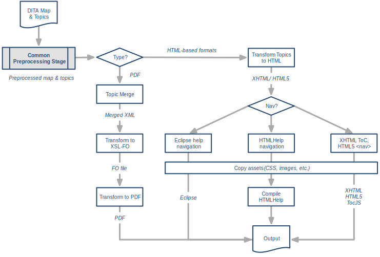

DITA Open Toolkit 3.6
DITA Open Toolkit, or DITA-OT for short, is a set of Java-based, open-source tools that provide processing for content authored in the Darwin Information Typing Architecture.
Note: While the DITA standard is owned and developed by OASIS, the DITA Open Toolkit project is governed separately. DITA-OT is an independent, open-source implementation of the DITA standard.
DITA-OT documentation
The DITA Open Toolkit documentation provides information about installing, running, configuring and extending the toolkit.
- See the DITA Open Toolkit 3.6 Release Notes for information on the changes in the current release.
- Installing DITA Open Toolkit shows how to install the toolkit and run a build to verify the installation.
- Building output explains the methods that can be used to transform DITA content to other formats, including the dita command, Ant, and the Java API, along with information on publishing DITA content from a containerized environment.
- Authoring formats provides information on supported input formats, including standard DITA XML, Markdown and the Lightweight DITA formats (XDITA, MDITA and HDITA).
- Output formats describes the core transformations that convert DITA to other formats.
- DITA Open Toolkit parameters explains how to adjust the behavior of DITA Open Toolkit via dita command arguments and options, DITA-OT parameter settings, and configuration properties.
- Customizing HTML output shows how to modify the look and feel of your HTML output by changing parameter settings to include custom CSS, headers and footers, or table-of-contents navigation in topics.
- Customizing PDF output explains how to adjust various aspects of PDF output by changing parameter settings.
- Adding and removing plug-ins explains how to install, remove and discover new plug-ins.
- Creating custom plug-ins provides information on extending DITA-OT with plug-ins of your own.
- Error messages and troubleshooting contains information about resolving problems that you might encounter.
- Reference topics provide additional information about the DITA Open Toolkit Architecture, DITA specification support, a Glossary and other DITA and DITA-OT resources.
Related information
Overview of the DITA Open Toolkit
DITA Open Toolkit 3.6 Release Notes
DITA Open Toolkit 3.6 includes performance enhancements such as processing in parallel and in memory, support for PDF changebars with Apache™ FOP, and an updated preview of features for the latest draft of the upcoming DITA 2.0 standard, including the audio and video elements, and the new emphasis domain.
DITA-OT releases follow semantic versioning guidelines. Version numbers use the major.minor.patch syntax, where major versions may include incompatible API changes, minor versions add functionality in a backwards-compatible manner and patch versions are maintenance releases that include backwards-compatible bug fixes.
Tip: Download the dita-ot-3.6.zip package from the project website at dita-ot.org/download.
Requirements
DITA-OT is designed to run on Java version 8u101 or later and built and tested with the Open Java Development Kit (OpenJDK). Compatible Java distributions are available from multiple sources:
- You can download the Oracle JRE or JDK from oracle.com/technetwork/java under commercial license.
- OpenJDK is a free open-source implementation of Java available from adoptopenjdk.net.
- Free OpenJDK distributions are also available from other vendors, including Amazon Corretto, Azul Zulu, and Red Hat.
DITA-OT 3.6 released December 19, 2020
DITA Open Toolkit Release 3.6 includes performance enhancements such as processing in parallel and in memory, support for PDF changebars with Apache FOP, and an updated preview of features for the latest draft of the upcoming DITA 2.0 standard, including the audio and video elements, and the new emphasis domain.
Parallel processing
Preprocessing module code can now be run in parallel by setting the parallel parameter to true. The performance benefits this option provides depend heavily on the source file set, the DITA features used in the project, and the computer doing the processing, but under the right circumstances, you may see notable improvements when this option is enabled.
In-memory processing
DITA-OT 3.6 introduces a new Store API with preview support for in-memory processing. The Cache Store can be activated by setting the store-type parameter to memory. In-memory processing provides performance advantages in I/O bound environments such as cloud computing platforms, where processing time depends primarily on how long it takes to read and write temporary files. For more information, see Store API – Processing in memory.
Additional performance improvements
DITA-OT 3.6 includes a series of related changes designed to improve the performance of DITA transformations.
-
A new --repeat option can be passed to the dita command to run the process a certain number of times. This option can be used by plug-in developers to measure performance. (Timings for the first transformation are often dominated by Java warm-up time.) #3616
To run a conversion five times, for example, use --repeat=5. The duration of each execution will appear in the console when the final transformation is complete.
$ dita --input=docsrc/samples/sequence.ditamap --format=html5 --repeat=5 1 11281ms 2 4132ms 3 3690ms 4 4337ms 5 3634ms -
The DITA-OT Java code uses a new caching
DitaClass.getInstance(cls)factory method rather than generatingDitaClassinstances directly. This allows previously created instances to be re-used, which reduces the number of instances that need to be created. #3569 -
The Java code for several preprocessing modules has been refactored to use concurrent sets or queues. This helps to speed up certain operations during preprocessing, allowing builds to complete faster. #3570
-
The Java code now uses a
BufferedWriterto serializeJobobjects, which significantly improves UTF-8 encoding performance when writing the .job.xml file. #3583
PDF changebars with Apache FOP
For DITA-OT 3.4, the bundled Apache™ Formatting Objects Processor library was upgraded to version 2.4, which included support for changebars, but those features were not yet enabled in DITA-OT 3.4 pending further testing. DITA-OT 3.6 removes the FOP-specific overrides that disabled changebars in earlier versions, allowing the default PDF2 flagging routines to be applied when generating PDFs with FOP. For details, see Generating revision bars.
Plug-ins that implemented custom FOP flagging by overriding the org.dita.pdf2.fop/xsl/fo/flagging_fop.xsl stylesheet in prior versions will need to be updated, as this file is no longer available in DITA-OT 3.6. #3511, #3591
Updated DITA 2.0 preview
In addition to the DITA 2.0 preview support provided in DITA-OT 3.5, this release includes updated processing support for the latest DRAFT versions of the DITA 2.0 DTD and RELAX NG grammar files from OASIS (as of October 2020). #3586, #3601, #3617, #3652
- Where earlier DITA versions relied on the
objectto embed media in DITA source files, DITA 2.0 provides newaudioandvideoelements that correspond to their HTML5 equivalents. - For HTML5 compatibility, the new emphasis domain adds support for the
strongandemelements in addition to the existingbandielements in the highlighting domain. - The troubleshooting domain has been updated with additional constructs that can be used to provide detailed diagnostic information.
- Several obsolete elements and attributes have been removed from DITA 2.0, including:
booleandata-aboutindextermref@altonimage@navtitleontopicref@queryontopicref@refcolsonsimpletable@xtrc@xtrf
DITA documents that reference the draft grammar files can be parsed, and where features overlap with DITA 1.3, those features will work as expected.
Note: Other new or revised features proposed for DITA 2.0 are not yet supported. Additional features will be implemented in future versions of DITA-OT as the specification evolves.
Enhancements and changes
DITA Open Toolkit Release 3.6 includes the following enhancements and changes to existing features:
-
The
@rotateattribute on tableentryelements is now respected when generating HTML5 output. The rotation is implemented by setting the CSSwriting-modeproperty tovertical-rlto rotate the cell content. This property is rendered correctly in Mozilla Firefox, but unevenly supported by other browsers. Therotateclass is passed to HTML5 output, so custom plug-ins can implement alternative presentation rules in CSS if necessary. #3448, #3541, #3651 -
User-facing text for the dita command line interface has been extracted to a strings file to facilitate editing. The cli_en_US.properties is provided in the resources folder as a basis for customization and localization. #3495, #3523
-
The new
Storeimplementation that supports in-memory processing includes an immutable document reader method that can be used to request a document that doesn't need to change during processing. This approach facilitates caching and helps to speed up processing. #3506, #3548 -
In earlier versions, variations in reference capitalization could cause unexpected results when building output on case-sensitive file systems. DITA-OT now warns when file references use incorrect case. (For example, if maps reference Topic.dita, but the filename on disk is actually topic.dita.) In strict processing mode, this is considered a fatal error; in lax processing mode, the file reference is rewritten to use the same case as the file system. #3535
-
The --filter option can now be passed to the dita multiple times in a single command-line invocation to apply conditions from several DITAVAL files at once. #3556
-
The bundled Apache Formatting Objects Processor (FOP) has been upgraded to version 2.5, which includes security updates to various embedded libraries. #3558, #3630
-
The deprecated
msgprefixXSL variable (“DOTX”) has been removed. This variable was originally deprecated in DITA-OT 2.3, but still defined in several stylesheets. Importing the common XSL module output-message.xsl no longer requires this variable to be defined. #3562 -
The S9api message listener from the Saxon API is now used to forward log messages to the
DITAOTLogger. This allows message levels and error codes to be passed from XSLT to Java code for improved debugging. #3564 -
HTML5 output now includes additional metadata to indicate that the content was produced using DITA Open Toolkit. #3594
<meta name="generator" content="DITA-OT"/> -
Up to version 3.5, DITA-OT included the Dublin Core Metadata Element Set in both XHTML and HTML5 output. For DITA-OT 3.6, this capability was extracted to a separate plugin, and Dublin Core metadata is no longer generated in the default HTML5 output. #3595
If necessary, the org.dita.html5.dublin-core plug-in can be installed from the plug-in registry at dita-ot.org/plugins to add Dublin Core metadata to HTML5. To install the plug-in, run the following command:
dita install org.dita.html5.dublin-core -
In XHTML output, previous versions failed to distinguish Notice note types from regular notes, prefixing both with Note. Support has been backported from HTML5 to XHTML to prefix notices with Notice as expected. #3599, #3600
-
Unused code for flagging and key processing has been removed along with related files that have been deprecated since version 2.1, including the base flag.xsl stylesheet, the generated keydef.xml file, and schemekeydef.xml. #3602, #3603
-
Remaining inline style attributes were removed from HTML5 code, which prevented custom plug-ins from overriding the presentation of the corresponding elements, including:
line-throughandoverlineelements- syntax diagrams
- long quote citations
- Boolean states These changes move the default presentation rules to CSS to allow users to override these styles in custom stylesheets. The output is visually equivalent to the results generated by previous toolkit versions. #3632
Important: In publishing environments that do not use the default common CSS files, these styles may need to be implemented in custom stylesheets.
Bugs
DITA Open Toolkit Release 3.6 provides fixes for the following bugs:
-
Folder names in development build archives previously included the “
+” plus sign, which caused errors when running from the unpacked directory. The snapshot folder name syntax has been updated to use the “@” at sign instead, which allows builds to run directly from the extracted folder. #2414, #3623 -
The license text for the beta DITA 2.0 grammar file plug-in was missing in DITA-OT 3.5 and is now included in the distribution package. #3608, #3649
-
The Java code has been refactored to anticipate cases where resources are missing or incorrectly defined.
- The
File.toURI()method has been updated to ensure that the generated URI for a directory will always end in a trailing slash. This prevents unexpected errors in cases when theFileinput points to a path that doesn’t exist. #3621, #3624, #3626 - The
JobSourceSethas been fixed to handle cases where thesrcinput isnull. #3625
- The
-
In DITA-OT 3.5.4, the HTMLHelp stylesheet map2hhcImpl.xsl included an invalid code remnant left over from previous edits. The unnecessary line has been removed. #3627, #3634
Contributors
DITA Open Toolkit Release 3.6 includes code contributions by the following people:
- Jarno Elovirta
- Roger Sheen
- Robert D Anderson
- Radu Coravu
- David Bertalan
For the complete list of changes since the previous release, see the changelog on GitHub.
Documentation updates
The documentation for DITA Open Toolkit Release 3.6 provides corrections and improvements to existing topics, along with new information in the following topics:
- Store API – Processing in memory
- DITA 2.0 preview support
- Migrating to release 3.6
- Speeding up builds
- Common parameters
- Using the dita command
- Arguments and options for the dita command
For additional information on documentation issues resolved in DITA Open Toolkit Release 3.6, see the 3.6 milestone in the documentation repository.
DITA Open Toolkit Release 3.6 includes documentation contributions by the following people:
- Roger Sheen
- Jarno Elovirta
- Lief Erickson
- Heston Hoffman
For the complete list of documentation changes since the previous release, see the changelog.
DITA-OT release history
Release Notes archives contain information on the changes in earlier versions.
When migrating customizations, identify the version of the toolkit you're currently using (base version) and the version of the toolkit you want to migrate to (target version). Then, review all of the migration changes described in all of the versions from the base through the target. For instance, if you're currently on 2.2 and want to move to 3.3, you should review all of the changes in 2.3 through 3.3. You may want to start at the oldest version and read forward so you can chronologically follow the changes, since it is possible that files or topics have had multiple changes.
Related information
DITA-OT 1.8 - 1.0 Release Notes
Installing DITA Open Toolkit
The DITA-OT distribution package can be installed on Linux, macOS, and Windows. It contains everything that you need to run the toolkit except for Java.
-
Ensure that you have a Java Runtime Environment (JRE) or Java Development Kit (JDK).
DITA-OT is designed to run on Java version 8u101 or later and built and tested with the Open Java Development Kit (OpenJDK). Compatible Java distributions are available from multiple sources:
- You can download the Oracle JRE or JDK from oracle.com/technetwork/java under commercial license.
- OpenJDK is a free open-source implementation of Java available from adoptopenjdk.net.
- Free OpenJDK distributions are also available from other vendors, including Amazon Corretto, Azul Zulu, and Red Hat.
-
If you want to generate HTML Help, ensure that you have HTML Help Workshop installed.
You can download the Help Workshop from msdn.microsoft.com.
-
Download the dita-ot-3.6.zip package from the project website at dita-ot.org/download.
-
Extract the contents of the package to the directory where you want to install DITA-OT.
-
Add the absolute path for the bin folder of the DITA-OT installation directory to the PATH environment variable.
Tip: This defines the necessary environment variable that allows the dita command to be run from any location on the file system without typing the path to the command.
Prerequisite software
The prerequisite software that DITA-OT requires depends on the types of transformations that you want to use.
Software required for core DITA-OT processing
DITA-OT requires the following software applications:
-
Java Runtime Environment (JRE) or Java Development Kit (JDK)
DITA-OT is designed to run on Java version 8u101 or later and built and tested with the Open Java Development Kit (OpenJDK). Compatible Java distributions are available from multiple sources:
- You can download the Oracle JRE or JDK from oracle.com/technetwork/java under commercial license.
- OpenJDK is a free open-source implementation of Java available from adoptopenjdk.net.
- Free OpenJDK distributions are also available from other vendors, including Amazon Corretto, Azul Zulu, and Red Hat. Note: This is the only prerequisite software that you need to install. The remaining required software is included in the distribution package.
-
Apache Ant
Provides the standard setup and sequencing of processing steps. DITA-OT includes Ant version 1.10.9. You can download Ant from ant.apache.org.
-
XSLT processor
Provides the main transformation services. It must be compliant with XSLT 2.0. DITA-OT includes Saxon version 9.9.1.4. You can download Saxon from saxon.sourceforge.net.
Software required for specific transformations
Depending on the type of output that you want to generate, you might need the following applications:
-
ICU for Java
ICU for Java is a cross-platform, Unicode-based, globalization library. It includes support for comparing locale-sensitive strings; formatting dates, times, numbers, currencies, and messages; detecting text boundaries; and converting character sets. You can download ICU for Java from icu-project.org/download.
-
Microsoft Help Workshop
Required for generating HTML help. You can download the Help Workshop from msdn.microsoft.com.
-
XSL-FO processor
Required for generating PDF output. Apache™ FOP (Formatting Objects Processor) is included in the distribution package. You can download other versions from xmlgraphics.apache.org/fop. You can also use commercial FO processors such as Antenna House Formatter or RenderX XEP.
Checking the DITA-OT version number
You can determine the DITA Open Toolkit version number from a command prompt.
-
Open a command prompt or terminal session.
-
Issue the following command:
dita --version
The DITA-OT version number appears on the console:
DITA-OT version 3.6
Building output using the dita command
You can generate output using the dita command-line tool. Build parameters can be specified on the command line or with .properties files.
The DITA-OT client is a command-line tool with no graphical user interface. To verify that your installation works correctly, you can build output using the sample files included in the distribution package.
-
Open a terminal window by typing the following in the search bar:
|**Linux or macOS **|Type Terminal.||Windows|Type Command Prompt.|
-
At the command-line prompt, enter the following command:
dita --input=input-file --format=formatwhere:
- input-file is the DITA map or DITA file that you want to process.
- format is the output format (transformation type). This argument corresponds to the common parameter transtype. Use the same values as for the transtype build parameter, for example html5 or pdf.
If processing is successful, nothing is printed in the terminal window. The built output is written to the specified output directory (by default, in the out subdirectory of the current directory).
Run from dita-ot-dir/docsrc/samples, the following command generates HTML5 output for the sequence.ditamap file:
dita --input=sequence.ditamap --format=html5
Most builds require you to specify more options than are described in this topic.
Related information
More information about building output with the dita command
Installing on macOS via Homebrew
An alternative installation method can be used to install DITA-OT on macOS via Homebrew, the platform’s most popular open-source package manager.
The steps below assume you have already installed Homebrew according to the instructions at brew.sh.
Tip: Verify that your PATH environment variable begins with /usr/local/bin to ensure that Homebrew-installed software takes precedence over any programs of the same name elsewhere on the system.
-
Update Homebrew to make sure the latest package formulas are available on your system:
$ brew update Already up-to-date.Homebrew responds with a list of any new or updated formulæ.
-
Check the version of DITA-OT that is available from Homebrew:
$ brew info dita-ot dita-ot: stable 3.6 DITA Open Toolkit is an implementation of the OASIS DITA specification https://www.dita-ot.org/ /usr/local/Cellar/dita-ot/3.6 \(number of files, package size\) \* Built from source on YYYY-MM-DD at hh:mm:ss From: https://github.com/Homebrew/homebrew-core/blob/master/Formula/dita-ot.rb ==\> Requirements Required: java \>= 1.8 ✔The version of the DITA-OT formula is shown, along with basic information on the package.
-
Install the
dita-otpackage:$ brew install dita-ot Downloading…Homebrew will automatically download the latest version of the toolkit, install it in a subfolder of the local package Cellar and symlink the dita command to /usr/local/bin/dita.
-
Verify the installation:
$ which dita /usr/local/bin/ditaThe response confirms that the system will use the Homebrew-installed version of DITA-OT.
-
Check the DITA-OT version number:
$ dita --version DITA-OT version 3.6The DITA-OT version number appears on the console.
You can now run the dita command to transform DITA content.
Related information
Installing DITA-OT on macOS via Homebrew
Building output
You can use the dita command-line tool, Ant, or the Java API to transform DITA content to the various output formats that DITA Open Toolkit supports.
Related information
Building output using the dita command
You can generate output using the dita command-line tool. Build parameters can be specified on the command line or with .properties files.
-
At the command-line prompt, enter the following command:
dita --input=input-file --format=format \[options\]where:
-
input-file is the DITA map or DITA file that you want to process.
-
format is the output format (transformation type). This argument corresponds to the common parameter transtype. Use the same values as for the transtype build parameter, for example html5 or pdf.
You can create plug-ins to add new output formats; by default, the following values are available:
- dita
- eclipsehelp
- html5
- htmlhelp
- markdown, markdown_gitbook, and markdown_github
- xhtml Tip: See DITA-OT transformations (output formats) for sample command line syntax and more information on each transformation.
-
[options] include the following optional build parameters:
-
--debug -d
Debug logging prints considerably more additional information. The debug log includes all information from the verbose log, plus details on Java classes, additional Ant properties and overrides, preprocessing filters, parameters, and stages, and the complete build sequence. Debug logging requires additional resources and can slow down the build process, so it should only be enabled when further details are required to diagnose problems.
-
--output=dir -o dir
Specifies the path of the output directory; the path can be absolute or relative to the current directory.
This argument corresponds to the common parameter output.dir. By default, the output is written to the out subdirectory of the current directory.
-
--filter=files
Specifies filter file(s) used to include, exclude, or flag content. Relative paths are resolved against the current directory and internally converted to absolute paths.
Note:
To specify multiple filter files, use the system path separator character to delimit individual file paths (semicolon ‘
;’ on Windows, and colon ‘:’ on macOS and Linux) and wrap the value in quotes:--filter="filter1.ditaval;filter2.ditaval;filter3.ditaval"As of DITA-OT 3.6, the --filter option can also be passed multiple times:
--filter=filter1.ditaval --filter=filter2.ditaval --filter=filter3.ditavalDITAVAL files are evaluated in the order specified, so conditions specified in the first file take precedence over matching conditions specified in later files, just as conditions at the start of a DITAVAL document take precedence over matching conditions later in the same document.
-
--force
Force-install an existing plug-in.
Passed as an additional option to the installation subcommand: dita install plug-in-zip --force
-
--help -h
Print a list of available arguments, options, and subcommands.
-
--logfile=file -l file
Write logging messages to a file.
-
--parameter=value -Dparameter=value
Specify a value for a DITA-OT or Ant build parameter.
The GNU-style --parameter=value form is only available for parameters that are configured in the plug-in configuration file; the Java-style -D form can also be used to specify additional non-configured parameters or set system properties.
Parameters not implemented by the specified transformation type or referenced in a .properties file are ignored.
Tip: If you are building in different environments where the location of the input files is not consistent, set args.input.dir with the dita command and reference its value with
${args.input.dir}in your .properties file. -
--propertyfile=file
Use build parameters defined in the referenced .properties file.
Build parameters specified on the command line override those set in the .properties file.
-
--repeat=N
Repeat the transformation N number of times.
This option can be used by plug-in developers to measure performance. To run a conversion five times, for example, use --repeat=5. The duration of each execution will appear in the console when the final transformation is complete.
$ dita --input=docsrc/samples/sequence.ditamap --format=html5 --repeat=5 1 11281ms 2 4132ms 3 3690ms 4 4337ms 5 3634ms -
--resource=file -r file
Convert partial documentation sets by processing input with additional resources.
For example, to process a single topic file with a map that contains key definitions, use a command like this:
dita --input=topic.dita --resource=keys.ditamap --format=html5To convert a chapter map to HTML5 and insert related links from relationship tables in a separate map, use:
dita --input=chapter.ditamap --resource=reltables.ditamap --format=html5 -
--temp=dir -t dir
Specifies the location of the temporary directory.
This argument corresponds to the common parameter dita.temp.dir.
-
--verbose -v
Verbose logging prints additional information to the console, including directory settings, effective values for Ant properties, input/output files, and informational messages to assist in troubleshooting.
-
If processing is successful, nothing is printed in the terminal window. The built output is written to the specified output directory (by default, in the out subdirectory of the current directory).
-
For example, from dita-ot-dir/docsrc/samples, run:
dita --input=sequence.ditamap --format=html5 \
--output=output/sequence \
--args.input.dir=/absolute/path/to/dita-ot-dir/docsrc/samples \
--propertyfile=properties/sequence-html5.properties
This builds sequence.ditamap to HTML5 output in output/sequence using the following additional parameters specified in the properties/sequence-html5.properties file:
# Directory that contains the custom .css file:
args.cssroot = ${args.input.dir}/css/
# Custom .css file used to style output:
args.css = style.css
# Copy the custom .css file to the output directory:
args.copycss = yes
# Location of the copied .css file relative to the output:
args.csspath = branding
# Generate a full navigation TOC in topic pages:
nav-toc = full
Usually, you will want to specify a set of reusable build parameters in a .properties file.
Related information
Arguments and options for the dita command
Accessing help for the dita command
Why "startcmd" is not your friend
Setting build parameters with .properties files
Usually, DITA builds require setting a number of parameters that do not change frequently. You can reference a set of build parameters defined in a .properties file when building output with the dita command. If needed, you can override any parameter by specifying it explicitly as an argument to the dita command.
About .properties files
A .properties file is a text file that enumerates one or more name-value pairs, one per line, in the format name = value. The .properties filename extension is customarily used, but is not required.
-
Lines beginning with the
#character are comments. -
Properties specified as arguments of the dita command override those set in .properties files.
Restriction: For this reason, args.input and transtype can’t be set in the .properties file.
-
If you specify the same property more than once, the last instance is used.
-
Properties not used by the selected transformation type are ignored.
-
Properties can reference other property values defined elsewhere in the .properties file or passed by the dita command. Use the Ant
${property.name}syntax. -
You can set properties not only for the default DITA-OT transformation types, but also for custom plugins.
-
Create your .properties file.
Tip: Copy dita-ot-dir/docsrc/samples/properties/template.properties; this template describes each of the properties you can set.
For example:
# Directory that contains the custom .css file: args.cssroot = ${args.input.dir}/css/ # Custom .css file used to style output: args.css = style.css # Copy the custom .css file to the output directory: args.copycss = yes # Location of the copied .css file relative to the output: args.csspath = branding # Generate a full navigation TOC in topic pages: nav-toc = full -
Reference your .properties file with the dita command when building your output.
dita --input=my.ditamap --format=html5 --propertyfile=my.properties -
If needed, pass additional arguments to the dita command to override specific build parameters.
For example, to build output once with
draftandrequired-cleanupcontent:dita --input=my.ditamap --format=html5 --propertyfile=my.properties \ --args.draft=yesTip: If you are building in different environments where the location of the input files is not consistent, set args.input.dir with the dita command and reference its value with
${args.input.dir}in your .properties file.
Migrating Ant builds to use the dita command
Although DITA Open Toolkit still supports Ant builds, switching to the dita command offers a simpler command interface, sets all required environment variables and allows you to run DITA-OT without setting up anything beforehand.
Building output with the dita command is often easier than using Ant. In particular, you can use .properties files to specify sets of DITA-OT parameters for each build.
You can include the dita command in shell scripts to perform multiple builds.
Tip: Add the absolute path for the bin folder of the DITA-OT installation directory to the PATH environment variable to run the dita command from any location on the file system without typing the path.
-
In your Ant build file, identify the properties set in each build target.
Note: Some build parameters might be specified as properties of the project as a whole. You can refer to a build log to see a list of all properties that were set for the build.
-
Create a .properties file for each build and specify the needed build parameters, one per line, in the format
name = value. -
Use the dita command to perform each build, referencing your .properties with the --propertyfile=file option.
Example: Ant build
Prior to DITA-OT 2.0, an Ant build like this was typically used to define the properties for each target.
Sample build file: dita-ot-dir/docsrc/samples/ant_sample/build-chm-pdf.xml
<?xml version="1.0" encoding="UTF-8"?>
<project name="build-chm-pdf" default="all" basedir=".">
<property name="dita.dir" location="${basedir}/../../.."/>
<target name="all" description="build CHM and PDF" depends="chm,pdf"/>
<target name="chm" description="build CHM">
<ant antfile="${dita.dir}/build.xml">
<property name="args.input" location="../sequence.ditamap"/>
<property name="transtype" value="htmlhelp"/>
<property name="output.dir" location="../out/chm"/>
<property name="args.gen.task.lbl" value="YES"/>
</ant>
</target>
<target name="pdf" description="build PDF">
<ant antfile="${dita.dir}/build.xml">
<property name="args.input" location="../taskbook.ditamap"/>
<property name="transtype" value="pdf"/>
<property name="output.dir" location="../out/pdf"/>
<property name="args.gen.task.lbl" value="YES"/>
<property name="args.rellinks" value="nofamily"/>
</ant>
</target>
</project>
Example: .properties files with dita command
The following .properties files and dita commands are equivalent to the example Ant build.
Sample .properties file: dita-ot-dir/docsrc/samples/properties/chm.properties
output.dir = out/chm
args.gen.task.lbl = YES
Sample .properties file: dita-ot-dir/docsrc/samples/properties/pdf.properties
output.dir = out/pdf
args.gen.task.lbl = YES
args.rellinks = nofamily
Run from dita-ot-dir/docsrc/samples:
dita --input=sequence.ditamap --format=htmlhelp \
--propertyfile=properties/chm.properties
dita --input=taskbook.ditamap --format=pdf \
--propertyfile=properties/pdf.properties
Example: Call the dita command from an Ant build
In some cases, you might still want to use an Ant build to implement some pre- or post-processing steps, but also want the convenience of using the dita command with .properties files to define the parameters for each build. This can be accomplished with Ant’s exec task.
This example uses a dita-cmd Ant macro defined in the dita-ot-dir/docsrc/samples/ant_sample/dita-cmd.xml file:
<macrodef name="dita-cmd">
<attribute name="input"/>
<attribute name="format"/>
<attribute name="propertyfile"/>
<sequential>
<!-- For Unix run the DITA executable-->
<exec taskname="dita-cmd" executable="${dita.dir}/bin/dita" osfamily="unix" failonerror="true">
<arg value="--input"/>
<arg value="@{input}"/>
<arg value="--format"/>
<arg value="@{format}"/>
<arg value="--propertyfile"/>
<arg value="@{propertyfile}"/>
</exec>
<!-- For Windows run DITA from a DOS command -->
<exec taskname="dita-cmd" dir="${dita.dir}/bin" executable="cmd" osfamily="windows" failonerror="true">
<arg value="/C"/>
<arg value="dita --input @{input} --format @{format} --propertyfile=@{propertyfile}"/>
</exec>
</sequential>
</macrodef>
You can use this macro in your Ant build to call the dita command and pass the input, format and propertyfile parameters as follows:
<dita-cmd input="sample.ditamap" format="pdf" propertyfile="sample.properties"/>
This approach allows you to use Ant builds to perform additional tasks at build time while allowing the dita command to set the classpath and ensure that all necessary JAR libraries are available.
Note: The attributes defined in the Ant macro are required and must be supplied each time the task is run. To set optional parameters in one build (but not another), use different .properties files for each build.
Sample build file: dita-ot-dir/docsrc/samples/ant_sample/build-chm-pdf-hybrid.xml
<?xml version="1.0" encoding="UTF-8"?>
<project name="build-chm-pdf-hybrid" default="all" basedir=".">
<description>An Ant build that calls the dita command</description>
<include file="dita-cmd.xml"/><!-- defines the <dita-cmd> macro -->
<target name="all" depends="pre,main,post"/>
<target name="pre">
<description>Preprocessing steps</description>
</target>
<target name="main">
<description>Build the CHM and PDF with the dita command</description>
<property name="absolute.path.base" location="../"/>
<dita-cmd
input="${absolute.path.base}/sequence.ditamap"
format="htmlhelp"
propertyfile="${absolute.path.base}/properties/chm.properties"
/>
<dita-cmd
input="${absolute.path.base}/taskbook.ditamap"
format="pdf"
propertyfile="${absolute.path.base}/properties/pdf.properties"
/>
</target>
<target name="post">
<description>Postprocessing steps</description>
</target>
</project>
Publishing with project files
DITA-OT 3.4 introduces new project files to define publication projects with multiple deliverables. Projects specify a context, output folder, and publication for each deliverable. A re-usable context groups source files and filters, and a publication defines an output format with transformation parameters. You can pass a project file to the dita command to publish multiple deliverables at once.
About project files
Project files may be defined in one of three formats: XML, JSON, or YAML. The XML format can be validated with a RELAX NG schema provided in the resources folder of the DITA-OT installation (project.rnc).
Note: The XML project file format is the normative version provided for interoperability with existing XML-based toolchains. The JSON and YAML versions are alternative compact formats that are easier to read and write, but otherwise equivalent to the XML syntax.
Whereas .properties files can only be used to set parameters, project files go further, allowing you to define multiple deliverables with separate input files and output folders and formats for each publication. A project file can also refer to other project files, so you can re-use common configuration structures across projects.
Another advantage of project files over .properties files is that they allow you to specify paths relative to the project file, even for parameters that require absolute paths, such as:
args.cssrootargs.ftrargs.hdfargs.hdr
Though the exact syntax differs slightly, the basic structure of project files is similar in all supported formats.
-
You can link to other project files with
include(s) -
Projects can define multiple
deliverables, which consist of:-
a publication
contextthat may include:- an
idused to refer to this context from other projects - a series of
inputfiles (DITA maps) - a
profilewith a series of DITAVAL files used to filter the content
- an
-
an
outputlocation (relative to the CLI --output directory) -
a
publicationthat defines:- an output format via
transtype, and - a series of parameters to set for this transformation type, specified via
nameand eitherhref,path, orvalue
- an output format via
-
Tip:
- Use
hreffor web addresses and other resources that should resolve to an absolute URI. - Use
pathfor parameters that require an absolute value, like args.cssroot. Paths may be defined relative to the project file, but are always expanded to an absolute system path. - Use
valueto define strings and relative values for properties like args.csspath, which is used to describe a relative path in the output folder.
-
Create a project file to define the deliverables in your publication project.
For example:
<?xml version="1.0" encoding="UTF-8"?> <?xml-model href="https://www.dita-ot.org/rng/project.rnc" type="application/relax-ng-compact-syntax"?> <project xmlns="https://www.dita-ot.org/project"> <deliverable id="pdf"> <context name="User Guide"> <input href="../../userguide-book.ditamap"/> </context> <output href="."/> <publication transtype="pdf2"> <param name="args.chapter.layout" value="BASIC"/> <param name="args.gen.task.lbl" value="YES"/> <param name="include.rellinks" value="friend"/> <param name="outputFile.base" value="userguide"/> <param name="processing-mode" value="strict"/> </publication> </deliverable> </project> -
Pass your project file to the dita command to build output.
dita --project=pdf.xml -
If needed, pass additional arguments to the dita command to override specific build parameters.
For example, to build output once with
draftandrequired-cleanupcontent:dita --project=pdf.xml --args.draft=yes -
If your project contains multiple deliverables, you can pass the --deliverable option to generate output for a single deliverable ID.
dita --project=all.xml --deliverable=htmlhelp
Related information
Editing DITA Open Toolkit Project files
One file to rule them all (DITA Project)
Sample XML project files
DITA-OT includes sample XML project files that can be used to define a publication project. The XML format can be validated with a RELAX NG schema provided in the resources folder of the DITA-OT installation (project.rnc).
Project files can be designed in a modular fashion to create reusable configuration structures that allow you to define settings in one file and refer to them in other projects to publish multiple deliverables at once.
For example, dita-ot-dir/docsrc/samples/project-files/html.xml defines a single HTML deliverable.
<?xml version="1.0" encoding="UTF-8"?>
<?xml-model href="https://www.dita-ot.org/rng/project.rnc" type="application/relax-ng-compact-syntax"?>
<project xmlns="https://www.dita-ot.org/project">
<include href="common.xml"/>
<deliverable name="HTML5" id="html">
<context idref="html"/>
<output href="."/>
<publication transtype="html5">
<param name="args.copycss" value="yes"/>
<param name="args.css" value="dita-ot-doc.css"/>
<param name="args.csspath" value="css"/>
<param name="args.cssroot" path="../../resources"/>
<param name="args.gen.task.lbl" value="YES"/>
<param name="args.hdr" href="../../resources/header.xml"/>
<param name="html5.toc.generate" value="no"/>
<param name="nav-toc" value="partial"/>
<param name="processing-mode" value="strict"/>
</publication>
</deliverable>
</project>
This file can be used to generate the HTML version of the DITA-OT documentation by running the following command from the docsrc folder of the DITA-OT installation directory:
dita --project=samples/project-files/html.xml
The project file for HTML output imports the common html context from a shared project context defined in the dita-ot-dir/docsrc/samples/project-files/common.xml file, which includes the input map file and the DITAVAL file used to filter the output.
<?xml version="1.0" encoding="UTF-8"?>
<?xml-model href="https://www.dita-ot.org/rng/project.rnc" type="application/relax-ng-compact-syntax"?>
<project xmlns="https://www.dita-ot.org/project">
<context id="html" name="HTML">
<input href="../../userguide.ditamap"/>
<profile>
<ditaval href="../../resources/html.ditaval"/>
</profile>
</context>
</project>
The same common html context is also referenced in the project file for HTMLHelp output, as illustrated in dita-ot-dir/docsrc/samples/project-files/htmlhelp.xml.
<?xml version="1.0" encoding="UTF-8"?>
<?xml-model href="https://www.dita-ot.org/rng/project.rnc" type="application/relax-ng-compact-syntax"?>
<project xmlns="https://www.dita-ot.org/project">
<deliverable name="HTMLHelp" id="htmlhelp">
<context idref="html"/>
<output href="htmlhelp"/>
<publication transtype="htmlhelp">
<param name="args.copycss" value="yes"/>
<param name="args.css" value="dita-ot-doc.css"/>
<param name="args.csspath" value="css"/>
<param name="args.cssroot" path="../../resources"/>
<param name="args.gen.task.lbl" value="YES"/>
<param name="processing-mode" value="strict"/>
</publication>
</deliverable>
</project>
The dita-ot-dir/docsrc/samples/project-files/pdf.xml file defines a single PDF deliverable.
<?xml version="1.0" encoding="UTF-8"?>
<?xml-model href="https://www.dita-ot.org/rng/project.rnc" type="application/relax-ng-compact-syntax"?>
<project xmlns="https://www.dita-ot.org/project">
<deliverable id="pdf">
<context name="User Guide">
<input href="../../userguide-book.ditamap"/>
</context>
<output href="."/>
<publication transtype="pdf2">
<param name="args.chapter.layout" value="BASIC"/>
<param name="args.gen.task.lbl" value="YES"/>
<param name="include.rellinks" value="friend"/>
<param name="outputFile.base" value="userguide"/>
<param name="processing-mode" value="strict"/>
</publication>
</deliverable>
</project>
This file can be used to generate the PDF version of the DITA-OT documentation by running the following command from the docsrc folder of the DITA-OT installation directory:
dita --project=samples/project-files/pdf.xml
The dita-ot-dir/docsrc/samples/project-files/distribution-docs.xml file includes both the HTML and PDF projects as follows:
<project xmlns="https://www.dita-ot.org/project">
<include href="html.xml"/>
<include href="pdf.xml"/>
</project>
To build both the HTML and PDF versions of the documentation as included in the distribution package, run the following command from the docsrc folder of the DITA-OT installation directory:
dita --project=samples/project-files/distribution-docs.xml
The dita-ot-dir/docsrc/samples/project-files/all.xml file includes all three project deliverables as follows:
<project xmlns="https://www.dita-ot.org/project">
<include href="html.xml"/>
<include href="htmlhelp.xml"/>
<include href="pdf.xml"/>
</project>
Sample JSON project files
DITA-OT includes sample project files in JSON format that can be used to define a publication project. Like the XML project samples, the sample JSON files illustrate how deliverables can be described for use in publication projects. The JSON samples are functionally equivalent to their XML and YAML counterparts, with minor adaptations to JSON file syntax.
Project files can be designed in a modular fashion to create reusable configuration structures that allow you to define settings in one file and refer to them in other projects to publish multiple deliverables at once.
For example, dita-ot-dir/docsrc/samples/project-files/html.json defines a single HTML deliverable.
{
"includes": ["common.json"],
"deliverables": [
{
"name": "HTML5",
"context": {"idref": "html"},
"output": ".",
"publication": {
"transtype": "html5",
"params": [
{
"name": "args.copycss",
"value": "yes"
},
{
"name": "args.css",
"value": "dita-ot-doc.css"
},
{
"name": "args.csspath",
"value": "css"
},
{
"name": "args.cssroot",
"path": "../../resources"
},
{
"name": "args.gen.task.lbl",
"value": "YES"
},
{
"name": "args.hdr",
"href": "../../resources/header.xml"
},
{
"name": "html5.toc.generate",
"value": "no"
},
{
"name": "nav-toc",
"value": "partial"
},
{
"name": "processing-mode",
"value": "strict"
}
]
}
}
]
}
This file can be used to generate the HTML version of the DITA-OT documentation by running the following command from the docsrc folder of the DITA-OT installation directory:
dita --project=samples/project-files/html.json
The project file for HTML output imports the common html context from a shared project context defined in the dita-ot-dir/docsrc/samples/project-files/common.json file, which includes the input map file and the DITAVAL file used to filter the output.
{
"contexts": [
{
"id": "html",
"input": "../../userguide.ditamap",
"profiles": {
"ditavals": ["../../resources/html.ditaval"]
}
}
]
}
Sample YAML project files
DITA-OT includes sample project files in YAML format that can be used to define a publication project. Like the XML project samples, the sample YAML files illustrate how deliverables can be described for use in publication projects. The YAML samples are functionally equivalent to their XML and JSON counterparts, with minor adaptations to YAML file syntax.
Project files can be designed in a modular fashion to create reusable configuration structures that allow you to define settings in one file and refer to them in other projects to publish multiple deliverables at once.
For example, dita-ot-dir/docsrc/samples/project-files/html.yaml defines a single HTML deliverable.
---
includes:
- 'common.yaml'
deliverables:
- name: 'HTML5'
context:
idref: 'html'
output: '.'
publication:
transtype: 'html5'
params:
- name: 'args.copycss'
value: 'yes'
- name: 'args.css'
value: 'dita-ot-doc.css'
- name: 'args.csspath'
value: 'css'
- name: 'args.cssroot'
path: '../../resources'
- name: 'args.gen.task.lbl'
value: 'YES'
- name: 'args.hdr'
href: '../../resources/header.xml'
- name: 'html5.toc.generate'
value: 'no'
- name: 'nav-toc'
value: 'partial'
- name: 'processing-mode'
value: 'strict'
This file can be used to generate the HTML version of the DITA-OT documentation by running the following command from the docsrc folder of the DITA-OT installation directory:
dita --project=samples/project-files/html.yaml
The project file for HTML output imports the common html context from a shared project context defined in the dita-ot-dir/docsrc/samples/project-files/common.yaml file, which includes the input map file and the DITAVAL file used to filter the output.
---
contexts:
- id: 'html'
input: '../../userguide.ditamap'
profiles:
ditavals:
- '../../resources/html.ditaval'
Running the dita command from a Docker image
Docker is a platform used to build, share, and run portable application containers. As of version 3.4, the DITA-OT project provides an official Docker container image that includes everything you need to run the toolkit and publish DITA content from a containerized environment.
About application containers
Using containers to deploy applications isolates software from its environment to ensure that it works consistently despite any differences in the host operating system, for example.
Docker containers are designed as stateless machines that can be quickly created and destroyed, started and stopped. Each Docker image provides its own private filesystem that includes only the code required to run the application itself — it is not intended for persistent data storage.
When a container is stopped, any changes made within the container are lost, so source files and generated output should be stored outside the container. These resources are attached to the container by mounting directories from the host machine.
To run the DITA-OT image, you will need to install Docker and log in to the GitHub Package Registry.
- To download Docker Desktop, you may be prompted to sign in with your Docker ID (or sign up to create one).
- To retrieve docker images from the GitHub Package Registry, you will also need a GitHub account.
-
Install Docker for your operating system.
-
On macOS, you can also install Docker Desktop via Homebrew:
$ brew cask install docker Downloading… -
On Linux, install Docker Community Edition (CE) via your operating system’s package manager, for example:
$ sudo apt-get install docker-ce
-
Log in to the GitHub Package Registry.
-
In your GitHub profile settings, create a new personal access token with the
read:packagesandreposcopes.For more information, see Creating a personal access token for the command line.
-
On the command line, run the docker command to log in with your GitHub credentials.
docker login docker.pkg.github.com -u USERNAME -p PASSWORD/TOKENFor more information, see Authenticating to GitHub Package Registry.
-
-
To build output, map a host directory to a container volume and specify options for the dita command.
$ docker run -it \ -v /Users/username/source:/src docker.pkg.github.com/dita-ot/dita-ot/dita-ot:3.6 \ -i /src/input.ditamap \ -o /src/out \ -f html5 -vThis command sequence specifies the following options:
- -v mounts the source subfolder of your home directory and binds it to the /src volume in the container
- -i specifies the input.ditamap file in your source folder as the input map file
- -o writes the output to source/out
- -f sets the output format to HTML5, and
- -v displays build progress messages with verbose logging On Windows, if your Users directory is on the C:\ drive, use /c/Users/… to map the host directory:
> C:\Users\username> docker run -it ^ -v /c/Users/username/source:/src docker.pkg.github.com/dita-ot/dita-ot/dita-ot:3.6 ^ -i /src/input.ditamap ^ -o /src/out ^ -f html5 -vNote: The DITA-OT container image uses the
ENTRYPOINTinstruction to run the dita command from the /opt/app/bin/ directory of the container automatically, so you there’s no need to include the dita command itself, only the arguments and options you need to publish your content.
Related information
Using the Open Toolkit Through Docker Containers
Installing plug-ins in a Docker image
To install custom plug-ins or make other changes based on the DITA-OT parent image, you can create your own Dockerfile and specify the official DITA-OT image as the basis for your image.
Each subsequent declaration in the Dockerfile modifies this parent image, so you can start with the official image, and add custom plug-ins or other commands as required to create a custom Docker image that includes everything you need to publish your content.
-
Create a new Dockerfile and specify the official DITA-OT image in the FROM directive.
# Use the latest official DITA-OT image as parent: ↓ FROM docker.pkg.github.com/dita-ot/dita-ot/dita-ot:3.6 -
You can extend your image with a
RUNdeclaration that runs the dita command from the container to install a custom plug-in, and specify the filename or URL of the plug-in’s distribution ZIP file.# Install a custom plug-in from a remote location: RUN dita --install https://github.com/infotexture/dita-bootstrap/archive/3.4.1.zip -
You can also install custom plug-ins from the main DITA-OT plug-in registry at dita-ot.org/plugins, or from your company plug-in registry.
# Install from the registry at dita-ot.org/plugins: RUN dita --install org.dita-community.pdf-page-break
The docsrc/samples folder in the DITA-OT installation directory contains a complete example:
# Use the latest official DITA-OT image as parent: ↓
FROM docker.pkg.github.com/dita-ot/dita-ot/dita-ot:3.6
# Install a custom plug-in from a remote location:
RUN dita --install https://github.com/infotexture/dita-bootstrap/archive/3.4.1.zip
# Install from the registry at dita-ot.org/plugins:
RUN dita --install org.dita-community.pdf-page-break
Building a new image
You can build a Docker image from this example by running the following command from the dita-ot-dir/docsrc/samples directory:
$ docker image build -t sample-docker-image:1.0 .
Sending build context to Docker daemon 2.048kB
Step 1/3 : FROM docker.pkg.github.com/dita-ot/dita-ot/dita-ot:3.6
---> 9abb96827538
Step 2/3 : RUN dita --install https://github.com/infotexture/dita-bootstrap/archive/3.4.1.zip
---> Running in d510f874cae0
Added net.infotexture.dita-bootstrap
Removing intermediate container d510f874cae0
---> 63deb8e15b5b
Step 3/3 : RUN dita --install org.dita-community.pdf-page-break
---> Running in b4ef2fcad916
Added org.dita-community.pdf-page-break
Removing intermediate container b4ef2fcad916
---> 402885636b7f
Successfully built 402885636b7f
Successfully tagged sample-docker-image:1.0
Docker steps through each instruction in the Dockerfile to build the sample image. In this case, the dita command provides feedback on each installed plug-in.
Running the new container
You can then start a container based on your new image:
$ docker container run -it \
-v /path/to/dita-ot-dir/docsrc:/src sample-docker-image:1.0 \
-i /src/userguide.ditamap \
-o /src/out/dita-bootstrap \
-f html5-bootstrap -v
This command sequence specifies the following options:
- -v mounts the docsrc subfolder of the DITA-OT directory on your host machine and binds it to the /src volume in the container
- -i specifies dita-ot-dir/docsrc/userguide.ditamap as the input map file
- -o writes the output to dita-ot-dir/docsrc/out/dita-bootstrap
- -f sets the output format to the Bootstrap template, and
- -v displays build progress messages with verbose logging
When the build is finished, you should find a copy of the DITA-OT documentation under dita-ot-dir/docsrc/out/dita-bootstrap, styled with the basic Bootstrap template from the custom plug-in.
Building output using Ant
You can use Ant to invoke DITA Open Toolkit and generate output. You can use the complete set of parameters that the toolkit supports.
Related information
Migrating Ant builds to use the dita command
Ant
Ant is a Java-based, open-source tool that is provided by the Apache Foundation. It can be used to declare a sequence of build actions. It is well suited for both development and document builds. The toolkit ships with a copy of Ant.
DITA-OT uses Ant to manage the XSLT scripts that are used to perform the various transformation; it also uses Ant to manage intermediate steps that are written in Java.
The most important Ant script is the build.xml file. This script defines and combines common pre-processing and output transformation routines; it also defines the DITA-OT extension points.
Related information
Migrating Ant builds to use the dita command
Building output using Ant
You can build output by using an Ant build script to provide the DITA-OT parameters.
-
Open a command prompt or terminal session.
-
Issue the following command:
|**Linux or macOS **|bin/ant -f `build-script target`||Windows|bin\ant -f
build-script target|where:
-
build-script is name of the Ant build script.
-
target is an optional switch that specifies the name of the Ant target that you want to run.
If you do not specify a target, the value of the
@defaultattribute for the Ant project is used.
-
Related information
Migrating Ant builds to use the dita command
Creating an Ant build script
Instead of typing the DITA-OT parameters at the command prompt, you might want to create an Ant build script that contains all of the parameters.
-
Create an XML file that contains the following content:
<?xml version="1.0" encoding="UTF-8" ?> <project name="%project-name%" default="%default-target%" basedir="."> <property name="dita.dir" location="%path-to-DITA-OT%"/> <target name="%target-name%"> <ant antfile="${dita.dir}/build.xml"> <property name="args.input" value="%DITA-input%"/> <property name="transtype" value="html5"/> </ant> </target> </project>You will replace the placeholder content (indicated by the % signs) with content applicable to your environment.
-
Specify project information:
-
Set the value of the
@nameattribute to the name of your project. -
Set the value of the
@defaultattribute to the name of a target in the build script.If the build script is invoked without specifying a target, this target will be run.
-
-
Set the value of the dita.dir property to the location of the DITA-OT installation.
This can be a fully qualified path, or you can specify it relative to the location of the Ant build script that you are writing.
-
Create the Ant target:
-
Set the value of the
@nameattribute. -
Specify the value for the args.input property.
-
Specify the value of the transtype property.
-
-
Save the build script.
The following Ant build script generates CHM and PDF output for the sample DITA maps.
<?xml version="1.0" encoding="UTF-8"?>
<project name="build-chm-pdf" default="all" basedir=".">
<property name="dita.dir" location="${basedir}/../../.."/>
<target name="all" description="build CHM and PDF" depends="chm,pdf"/>
<target name="chm" description="build CHM">
<ant antfile="${dita.dir}/build.xml">
<property name="args.input" location="../sequence.ditamap"/>
<property name="transtype" value="htmlhelp"/>
<property name="output.dir" location="../out/chm"/>
<property name="args.gen.task.lbl" value="YES"/>
</ant>
</target>
<target name="pdf" description="build PDF">
<ant antfile="${dita.dir}/build.xml">
<property name="args.input" location="../taskbook.ditamap"/>
<property name="transtype" value="pdf"/>
<property name="output.dir" location="../out/pdf"/>
<property name="args.gen.task.lbl" value="YES"/>
<property name="args.rellinks" value="nofamily"/>
</ant>
</target>
</project>
In addition to the mandatory parameters (args.input and transtype), the chm and pdf targets each specify some optional parameters:
- The args.gen.task.lbl property is set to YES, which ensures that headings are automatically generated for the sections of task topics.
- The output.dir property specifies where DITA-OT writes the output of the transformations.
The pdf target also specifies that related links should be generated in the PDF, but only those links that are created by relationship tables and link elements.
Finally, the all target simply specifies that both the chm and pdf target should be run.
Another resource for learning about Ant scripts are the files in the dita-ot-dir/docsrc/samples/ant_sample/ directory. This directory contains sample Ant build files for common output formats, as well as templates that you can use to create your own Ant scripts.
Related information
Migrating Ant builds to use the dita command
Using the Java API
DITA Open Toolkit includes a Java Application Programming Interface to allow developers to embed the toolkit more easily into other Java programs.
When using the API, programmers don’t need to know or care that DITA-OT uses Ant, they can just use Java.
Note: When running DITA-OT via the dita command, an ant shell script handles the classpath setup, but when using the API the classpath should be set up as part of the normal classpath configuration for the Java application.
Example usage
// Create a reusable processor factory with DITA-OT base directory
ProcessorFactory pf = ProcessorFactory.newInstance(ditaDir);
// and set the temporary directory
pf.setBaseTempDir(tempDir);
// Create a processor using the factory and configure the processor
Processor p = pf.newProcessor("html5")
.setInput(mapFile)
.setOutputDir(outDir)
.setProperty("nav-toc", "partial");
// Run conversion
p.run();
By default, running DITA-OT via the API will write a debug log to the temporary directory. A custom SLF4J logger can also be used to access the log via the Simple Logging Facade for Java.
The processor cleans the temporary directory by default, but this can be disabled to simplify debugging in cases where the processor failed.
Tip: See the DITA-OT Java API documentation in the doc/api/ folder of the DITA-OT distribution package for information on the packages, classes, interfaces and methods provided by the Java API.
Downloading DITA-OT from Maven Central
As of version 2.5, the DITA Open Toolkit base library (dost.jar) is available via the Maven 2 Central Repository. You can use this mechanism to download the main JAR file and include it in the build for other Java projects.
To locate the latest version, search for the org.dita-ot group ID.
Important: The dost.jar file provides only the DITA Open Toolkit base library. It does not contain the full DITA-OT distribution and cannot be used to run DITA-OT by itself. You will need to ensure that your build installs the other files and directories required for the toolkit along with the dependencies for your project.
Related information
DITA-OT Java API documentation
Authoring formats
In addition to standard DITA XML, DITA-OT supports several alternative input formats, including Markdown and the proposed XDITA, MDITA and HDITA authoring formats currently in development for Lightweight DITA.
Standard DITA XML
DITA Open Toolkit supports all released versions of the OASIS DITA specification, including 1.0, 1.1, 1.2, and 1.3. As of release 3.6, DITA-OT also provides an initial preview of features for the latest draft of the upcoming DITA 2.0 standard.
The DITA specification “defines a set of document types for authoring and organizing topic-oriented information, as well as a set of mechanisms for combining, extending, and constraining document types.” The DITA 1.3 specification is the authoritative source of information on authoring DITA content in XML.
Tip: For details on how DITA Open Toolkit processes DITA XML content, see DITA specification support.
Related information
Preview support for Lightweight DITA
Markdown DITA syntax reference
Markdown content
Markdown is a lightweight markup language that allows you to write using an easy-to-read plain text format and convert to structurally valid markup as necessary.
In the words of its creators:
“The overriding design goal for Markdown’s formatting syntax is to make it as readable as possible. The idea is that a Markdown-formatted document should be publishable as-is, as plain text, without looking like it’s been marked up with tags or formatting instructions.”
DITA Open Toolkit now allows you to use Markdown files directly in topic references and export DITA content as Markdown.
These features enable lightweight authoring scenarios that allow subject matter experts to contribute to DITA publications without writing in XML, and support publishing workflows that include DITA content in Markdown-based publishing systems.
Adding Markdown topics
To add a Markdown topic to a DITA publication, create a topic reference in your map and set the @format attribute to markdown so the toolkit will recognize the source file as Markdown and convert it to DITA:
<?xml version="1.0" encoding="utf-8"?>
<!DOCTYPE map PUBLIC "-//OASIS//DTD DITA Map//EN" "map.dtd">
<map>
<topicref href="markdown-dita-topic.md" **format="markdown"**/>
</map>
The markdown format uses a relatively lenient document parsing approach to support a wide range of content and Markdown syntax constructs.
Note: The Markdown support is based on CommonMark, a strongly defined, highly compatible specification of Markdown.
When you add Markdown topics to a DITA publication as described above, the content is temporarily converted to DITA in the background when generating other output formats like HTML or PDF, but the Markdown source files remain unchanged.
Tip: This approach is recommended in cases where simple content is authored collaboratively over multiple versions, as Markdown topics can be edited by a wide range of authors and combined as necessary with more complex content maintained in DITA XML.
Converting Markdown to DITA
In cases where the Markdown input is a one-off contribution, members of the DITA authoring team can use the Markdown file as raw material that is easily converted to DITA and enriched with conditional processing attributes, conkeyrefs or other more complex semantics that have no equivalent in limited formats like Markdown.
If you prefer to maintain this content in DITA in the future, you can generate DITA output by passing the --format=dita option on the command line.
This converts all input files (both DITA XML and Markdown) to Normalized DITA. You can then copy the generated DITA files from the output folder to your project and replace references to the Markdown topics with their DITA equivalents.
Related information
Preview support for Lightweight DITA
Markdown DITA syntax reference
Preview support for Lightweight DITA
DITA-OT provides preview support for the authoring formats proposed for Lightweight DITA, or “LwDITA”. The XDITA, MDITA and HDITA formats are alternative representations of DITA content in XML, Markdown and HTML5.
Attention: Since Lightweight DITA has not yet been released as a formal specification, the implementation for XDITA, MDITA and HDITA authoring formats is subject to change. Future versions of DITA Open Toolkit will be updated as LwDITA evolves.
XDITA
XDITA is the LwDITA authoring format that uses XML to structure information. XDITA is a subset of DITA, with new multimedia element types added to support interoperability with HTML5. XDITA is designed for users who want to write DITA content but who do not want (or need) the full power of DITA.
The XDITA parser included in the org.lwdita plug-in provides preliminary support for XDITA maps and XDITA topics.
To apply XDITA-specific processing to topics in an XDITA map or a full DITA 1.3 map, set the @format attribute on a topicref to xdita:
<map>
<topicref href="xdita-topic.xml" **format="xdita"**/>
</map>
Tip: For examples of cross-format content sharing between topics in XDITA, HDITA, extended-profile MDITA, and DITA 1.3, see the LwDITA sample files in the DITA-OT installation directory under plugins/org.oasis-open.xdita.v0_2_2/samples.
MDITA
MDITA is the LwDITA authoring format based on Markdown. It is designed for users who want to write structured content with the minimum of overhead, but who also want to take advantage of the reuse mechanisms associated with the DITA standard and the multi-channel publishing afforded by standard DITA tooling.
Recent proposals for LwDITA include two profiles for authoring MDITA topics:
- The “Core profile” is based on GitHub-Flavored Markdown and includes elements that are common to many other Markdown implementations.
- The “Extended profile” borrows additional features from other flavors of Markdown to represent a broader range of DITA content with existing plain-text syntax conventions.
The Markdown DITA parser included in the org.lwdita plug-in provides preliminary support for these profiles and additional Markdown constructs as described in the syntax reference.
To apply LwDITA-specific processing to Markdown topics, set the @format attribute to mdita:
<map>
<topicref href="mdita-topic.md" **format="mdita"**/>
</map>
In this case, the first paragraph in the topic will be treated as a short description, for example, and additional metadata can be specified for the topic via a YAML front matter block.
Note: Setting the @format attribute to mdita triggers stricter parsing than the more lenient document parsing approach that is applied to markdown documents.
Attention: The MDITA map format is not yet supported. To include Markdown content in publications, use an XDITA map or a DITA 1.3 map.
HDITA
HDITA is the LwDITA authoring format based on HTML5, which is intended to support structured content authoring with tools designed for HTML authoring. HDITA also uses custom data attributes to provide interoperability with DITA.
The HDITA parser included in the org.lwdita plug-in provides preliminary support for these constructs.
To apply LwDITA-specific processing to HTML topics, set the @format attribute to hdita:
<map>
<topicref href="hdita-topic.html" **format="hdita"**/>
</map>
Attention: The HDITA map format is not yet supported. To include HDITA content, use an XDITA map or a DITA 1.3 map.
Converting lightweight formats to DITA XML
When you add LwDITA topics to a DITA publication, the content is temporarily converted to DITA in the background when generating other output formats like HTML or PDF, but the source files remain unchanged.
If you prefer to maintain this content in DITA in the future, you can generate DITA output by passing the --format=dita option on the command line.
This converts all input files (both LwDITA formats and DITA XML) to Normalized DITA. You can then copy the generated DITA files from the output folder to your project and replace references to the lightweight topics with their DITA equivalents.
Related information
Markdown DITA syntax reference
Markdown DITA syntax reference
Markdown DITA uses CommonMark as the underlying markup language.
Markdown DITA files must be UTF-8 encoded.
Titles and document structure
Each header level will generate a topic and associated title:
# Topic title
## Nested topic title
<topic id="topic_title">
<title>Topic title</title>
<topic id="nested_topic_title">
<title>Nested topic title</title>
</topic>
</topic>
Pandoc header_attributes can be used to define id or outputclass attributes:
# Topic title {#carrot .juice}
<topic id="carrot" outputclass="juice">
<title>Topic title</title>
If topic ID is not defined using header_attributes, the ID is generated from title contents.
Pandoc pandoc_title_block extension can be used to group multiple level 1 headers under a common title:
% Common title
# Topic title
# Second title
<topic id="common_title">
<title>Common title</title>
<topic id="topic_title">
<title>Topic title</title>
</topic>
<topic id="second_title">
<title>Second title</title>
</topic>
</topic>
Topic content
In LwDITA compatible documents (MDITA) the first paragraph is treated as a shortdesc element. In generic Markdown documents all paragraphs appear inside the body element.
Specialization types
The following class values in header_attributes have a special meaning on level 1 headers:
concepttaskreference
They can be used to change the Markdown DITA topic type to one of the built-in structural specialization types.
# Task {.task}
Context
1. Command
Info.
<task id="task">
<title>Task </title>
<taskbody>
<context>
<p>Context</p>
</context>
<steps>
<step>
<cmd>Command</cmd>
<info>
<p>Info.</p>
</info>
</step>
</steps>
</taskbody>
</task>
Sections
The following class values in header_attributes have a special meaning on header levels other than 1:
sectionexample
They are used to generate section and example elements:
# Topic title
## Section title {.section}
## Example title {.example}
<topic id="topic_title">
<title>Topic title</title>
<body>
<section>
<title>Section title</title>
</section>
<example>
<title>Example title</title>
</example>
</body>
</topic>
Hard line breaks
A line break that is preceded by two or more spaces is parsed as a hard line break. Because DITA doesn't have a <br> element for line break, hard line breaks are converted into linebreak processing instructions.
foo··
baz
<p>foo<?linebreak?>baz</p>
Links
The format of local link targets is detected based on file extension. The following extensions are treated as DITA files:
| extension | format |
|---|---|
.dita | dita |
.xml | dita |
.md | markdown |
.markdown | markdown |
All other link targets use format from file extension and are treated as non-DITA files. Absolute links targets are treated as external scope links:
[Markdown](test.md)
[DITA](test.dita)
[HTML](test.html)
[External](http://www.example.com/test.html)
<xref href="test.md">Markdown</xref>
<xref href="test.dita">DITA</xref>
<xref href="test.html" format="html">HTML</xref>
<xref href="http://www.example.com/test.html" format="html" scope="external">External</xref>
Images
Images used in inline content will result in inline placement. If a block level image contains a title, it will be treated as an image wrapped in figure:
An inline .


<p>An inline <image href="test.jpg"><alt>Alt</alt></image>.</p>
<image href="test.jpg" placement="break">
<alt>Alt</alt>
</image>
<fig>
<title>Title</title>
<image href="test.jpg">
<alt>Alt</alt>
</image>
</fig>
Key references
Key reference can be used with shortcut reference links:
[key]
![image-key]
<xref keyref="key"/>
<image keyref="image-key"/>
Inline
The following inline elements are supported:
**bold**
*italic*
`code`
~~strikethrough~~
<b>bold</b>
<i>italic</i>
<codeph>code</codeph>
<ph status="deleted">strikethrough</ph>
Lists
Unordered can be marked up with either hyphen or asterisk:
* one
* two
- three
- four
<ul>
<li>one</li>
<li>two
<ul>
<li>three</li>
<li>four</li>
</ul>
</li>
</ul>
Ordered can be marked up with either number or number sign, followed by a period:
1. one
2. two
#. three
#. four
<ol>
<li>one</li>
<li>two
<ol>
<li>three</li>
<li>four</li>
</ul>
</li>
</ul>
Definition lists use the PHP Markdown Extra format:
Term
: Definition.
<dl>
<delentry>
<dt>Term</dt>
<dd>Defintion.</dd>
</delentry>
</dl>
Each definition entry must have only one term and contain only inline content.
Tables
Tables use MultiMarkdown table extension format:
| First Header | Second Header | Third Header |
| ------------ | :-----------: | -----------: |
| Content | *Long Cell* ||
| Content | **Cell** | Cell |
<table>
<tgroup cols="3">
<colspec colname="col1"/>
<colspec colname="col2" align="center"/>
<colspec colname="col3" align="right"/>
<thead>
<row>
<entry>First Header </entry>
<entry>Second Header </entry>
<entry>Third Header </entry>
</row>
</thead>
<tbody>
<row>
<entry>Content </entry>
<entry namest="col2" nameend="col3"><i>Long Cell</i></entry>
</row>
<row>
<entry>Content </entry>
<entry><b>Cell</b></entry>
<entry>Cell </entry>
</row>
</tbody>
</tgroup>
</table>
Table cells may only contain inline content and column spans; block content and row spans are not supported by Markdown DITA.
Metadata
YAML metadata block as defined in Pandoc pandoc_metadata_block can be used to specify different metadata elements. The supported elements are:
authorsourcepublisherpermissionsaudiencecategorykeywordresourceid
Unrecognized keys are output using data element.
---
author:
- Author One
- Author Two
source: Source
publisher: Publisher
permissions: Permissions
audience: Audience
category: Category
keyword:
- Keyword1
- Keyword2
resourceid:
- Resourceid1
- Resourceid2
workflow: review
---
# Sample with YAML header
<title>Sample with YAML header</title>
<prolog>
<author>Author One</author>
<author>Author Two</author>
<source>Source</source>
<publisher>Publisher</publisher>
<permissions view="Permissions"/>
<metadata>
<audience audience="Audience"/>
<category>Category</category>
<keywords>
<keyword>Keyword1</keyword>
<keyword>Keyword2</keyword>
</keywords>
</metadata>
<resourceid appid="Resourceid1"/>
<resourceid appid="Resourceid2"/>
<data name="workflow" value="review"/>
</prolog>
Related information
Preview support for Lightweight DITA
DITA-OT transformations (output formats)
DITA Open Toolkit ships with several core transformations that convert DITA content to different output formats. Additional formats are available from the plug-in registry at dita-ot.org/plugins.
Tip: For information on how to install other formats, see Adding and removing plug-ins.
The pdf transformation generates output in Portable Document Format.
This transformation was originally created as a plug-in and maintained outside of the main toolkit code. It was created as a more robust alternative to the demo PDF transformation in the original toolkit, and thus was known as PDF2. The plug-in was bundled into the default toolkit distribution with release 1.4.3.
To run the PDF transformation, set the transtype parameter to pdf, or pass the --format=pdf option to the dita command line.
dita --input=input-file --format=pdf
where:
- input-file is the DITA map or DITA file that you want to process.
Related information
HTML5
The html5 transformation generates HTML5 output and a table of contents (TOC) file.
The HTML5 output is always associated with the default DITA-OT CSS file (commonltr.css or commonrtl.css for right-to-left languages). You can use toolkit parameters to add a custom style sheet that overrides the default styles, or generate a nav element with a navigation TOC in topic pages.
To run the HTML5 transformation, set the transtype parameter to html5, or pass the --format=html5 option to the dita command line.
dita --input=input-file --format=html5
where:
- input-file is the DITA map or DITA file that you want to process.
Related information
Setting parameters for custom HTML
Handling content outside the map directory
Eclipse help
The eclipsehelp transformation generates XHTML output, CSS files, and the control files that are needed for Eclipse help.
In addition to the XHTML output and CSS files, this transformation returns the following files, where mapname is the name of the master DITA map.
| File name | Description |
|---|---|
| plugin.xml | Control file for the Eclipse plug-in |
| mapname.xml | Table of contents |
| index.xml | Index file |
| plugin.properties | |
| META-INF/MANIFEST.MF |
To run the Eclipse help transformation, set the transtype parameter to eclipsehelp, or pass the --format=eclipsehelp option to the dita command line.
dita --input=input-file --format=eclipsehelp
where:
- input-file is the DITA map or DITA file that you want to process.
Related information
Publishing DITA Content Re-Used in Different Context in EPUB and Eclipse Infocenter by Using DITA-OT
Handling content outside the map directory
HTML Help
The htmlhelp transformation generates HTML output, CSS files, and the control files that are needed to produce a Microsoft Compiled HTML Help (.chm) file.
In addition to the HTML output and CSS files, this transformation returns the following files, where mapname is the name of the master DITA map.
| File name | Description |
|---|---|
| mapname.hhc | Table of contents |
| mapname.hhk | Sorted index |
| mapname.hhp | HTML Help project file |
| mapname.chm | Compiled HTML Help file |
Note: The compiled file is only generated if the HTML Help Workshop is installed on the build system.
| To run the HTML Help transformation, set the transtype parameter to htmlhelp, or pass the --format=htmlhelp option to the dita command line. |
dita --input=input-file --format=htmlhelp
where:
- input-file is the DITA map or DITA file that you want to process.
Related information
Microsoft Compiled HTML Help parameters
Handling content outside the map directory
Markdown
Along with Markdown input, DITA-OT now provides three new transformation types to convert DITA content to Markdown, including the original syntax, GitHub-Flavored Markdown, and GitBook.
The new output formats can be used to feed DITA content into Markdown-based publishing systems or other workflows that lack the ability to process DITA XML.
Generating Markdown output
Markdown output can be generated by passing one of the following transformation types to the dita command with the --format option:
-
To publish Markdown DITA files, use the markdown transtype.
-
To generate GitHub-Flavored Markdown files, use the markdown_github transtype.
-
To publish GitHub-Flavored Markdown and generate a SUMMARY.md table of contents file for publication via GitBook, use the markdown_gitbook transtype.
Run the dita command and set the value of the output --format option to the desired format, for example:
dita --input=input-file --format=markdown
where:
- input-file is the DITA map or DITA file that you want to process.
Related information
Normalized DITA
The dita transformation generates normalized topics and maps from DITA input. The normalized output includes the results of DITA Open Toolkit pre-processing operations, which resolve map references, keys, content references, code references and push metadata back and forth between maps and topics.
In comparison to the source DITA files, the normalized DITA files are modified in the following ways:
- References from one DITA map to another are resolved
- Map-based links, such as those generated by map hierarchy and relationship tables, are added to the topics.
- Link text is resolved.
- Map attributes that cascade are made explicit on child elements.
- Map metadata such as index entries and copyrights are pushed into topics.
- Topic metadata such as navigation titles, link text and short descriptions are pulled from topics into the map.
- XML comments are removed.
Applications
Normalized output may be useful in situations where post-processing of DITA content is required, but the downstream systems are limited in their ability to resolve DITA references.
Tip: You can also use the normalized DITA transformation to convert Markdown or Lightweight DITA formats to DITA XML. You can then copy the generated DITA files from the output folder to your project and replace references to the lightweight topics with their XML equivalents.
Generating normalized DITA output
Run the dita command and set the value of the output --format option to dita:
dita --input=input-file --format=dita
where:
- input-file is the DITA map or DITA file that you want to process.
Related information
The use-cases for a "DITA to resolved DITA" transformation
XHTML
The xhtml transformation generates XHTML output and a table of contents (TOC) file. This was the first transformation created for DITA Open Toolkit, and originally served as the basis for all HTML-based transformations.
The XHTML output is always associated with the default DITA-OT CSS file (commonltr.css or commonrtl.css for right-to-left languages). You can use toolkit parameters to add a custom style sheet to override the default styles.
To run the XHTML transformation, set the transtype parameter to xhtml, or pass the --format=xhtml option to the dita command line.
dita --input=input-file --format=xhtml
where:
- input-file is the DITA map or DITA file that you want to process.
Related information
Setting parameters for custom HTML
Handling content outside the map directory
DITA Open Toolkit parameters
You can adjust DITA Open Toolkit behavior via dita command arguments and options, DITA-OT parameter settings, and configuration properties.
Related information
Parameters annotations for DITA-OT plugins
Arguments and options for the dita command
The dita command takes mandatory arguments to process DITA content. Subcommands can be used to manage plug-ins, or print information about the current configuration. A series of options are available to modify the command behavior or specify additional configuration parameters.
Usage
To convert content from one format to another, specify the file to transform and the desired output format. If necessary, you can set additional configuration parameters with options.
**dita****--input**=file**--format**=name [ options ]
**dita****--project**=file [ options ]
Note: Most dita command options support several syntax alternatives. All options can be specified with a GNU-style option keyword preceded by two hyphens. In many cases, Unix-style single-letter options (preceded by a single hyphen) are also available for brevity and backwards compatibility.
The dita command also supports a series of subcommands that can be used to manage plug-ins, or print information about the current configuration or version.
**dita****deliverables**file
**dita****install**[ { ID | URL | file } ]
**dita****plugins**
**dita****transtypes**
**dita****uninstall**ID
**dita****version**
Attention: Prior to DITA-OT 3.5, subcommands were specified with the double-hyphen option syntax, which is still supported for backwards compatibility. (For example, dita --install will still work.)
Arguments
Each transformation requires you to specify at least the file to transform and the desired output format.
-
--input=file -i file
Specifies the master file for your documentation project. This argument corresponds to the common parameter args.input. Typically this is a DITA map, however it also can be a DITA topic if you want to transform a single DITA file. The path can be absolute, relative to args.input.dir, or relative to the current directory if args.input.dir is not defined.
-
--format=name -f name
Specifies the output format (transformation type).
This argument corresponds to the common parameter transtype.
To list the formats that are currently available in your environment, use dita transtypes.
You can create plug-ins to add new output formats; by default, the following values are available:
- dita
- eclipsehelp
- html5
- htmlhelp
- markdown, markdown_gitbook, and markdown_github
- xhtml Tip: See DITA-OT transformations (output formats) for sample command line syntax and more information on each transformation.
Subcommands
-
deliverables file
Show a list of the available deliverables in the specified project file.
-
install { ID | URL | file } --install={ ID | URL | file }
Install a single plug-in IDfrom the registry at dita-ot.org/plugins (or a local registry), from a remote URL, or a local ZIP file.
-
install --install
If no ID, URL, or file argument is provided, the installation process reloads the current set of plug-ins from the plugins directory (or any custom locations defined via the pluginsdir property in the configuration.properties file in the config directory). This approach can be used to add or remove multiple plug-ins at once, or any individual plug-ins you have already copied to (or removed from) the plug-in directories. Any plug-ins added or removed in the process will be listed by their plug-in ID.
-
uninstall ID --uninstall=ID
Remove the plug-in with the specified ID.
For a list of the currently installed plug-in IDs, use dita plugins.
Attention: The uninstall subcommand also removes the corresponding plug-in directory from the plugins folder.
-
plugins --plugins
Show a list of the currently installed plug-ins.
-
transtypes --transtypes
Show a list of the available output formats (transformation types).
The entries in this list may be passed as values to the --format argument.
-
version --version
Print version information and exit.
Options
-
--debug -d
Debug logging prints considerably more additional information. The debug log includes all information from the verbose log, plus details on Java classes, additional Ant properties and overrides, preprocessing filters, parameters, and stages, and the complete build sequence. Debug logging requires additional resources and can slow down the build process, so it should only be enabled when further details are required to diagnose problems.
-
--output=dir -o dir
Specifies the path of the output directory; the path can be absolute or relative to the current directory.
This argument corresponds to the common parameter output.dir. By default, the output is written to the out subdirectory of the current directory.
-
--filter=files
Specifies filter file(s) used to include, exclude, or flag content. Relative paths are resolved against the current directory and internally converted to absolute paths.
Note:
To specify multiple filter files, use the system path separator character to delimit individual file paths (semicolon ‘
;’ on Windows, and colon ‘:’ on macOS and Linux) and wrap the value in quotes:--filter="filter1.ditaval;filter2.ditaval;filter3.ditaval"As of DITA-OT 3.6, the --filter option can also be passed multiple times:
--filter=filter1.ditaval --filter=filter2.ditaval --filter=filter3.ditavalDITAVAL files are evaluated in the order specified, so conditions specified in the first file take precedence over matching conditions specified in later files, just as conditions at the start of a DITAVAL document take precedence over matching conditions later in the same document.
-
--force
Force-install an existing plug-in.
Passed as an additional option to the installation subcommand: dita install plug-in-zip --force
-
--help -h
Print a list of available arguments, options, and subcommands.
-
--logfile=file -l file
Write logging messages to a file.
-
--parameter=value -Dparameter=value
Specify a value for a DITA-OT or Ant build parameter.
The GNU-style --parameter=value form is only available for parameters that are configured in the plug-in configuration file; the Java-style -D form can also be used to specify additional non-configured parameters or set system properties.
Parameters not implemented by the specified transformation type or referenced in a .properties file are ignored.
Tip: If you are building in different environments where the location of the input files is not consistent, set args.input.dir with the dita command and reference its value with
${args.input.dir}in your .properties file. -
--propertyfile=file
Use build parameters defined in the referenced .properties file.
Build parameters specified on the command line override those set in the .properties file.
-
--repeat=N
Repeat the transformation N number of times.
This option can be used by plug-in developers to measure performance. To run a conversion five times, for example, use --repeat=5. The duration of each execution will appear in the console when the final transformation is complete.
$ dita --input=docsrc/samples/sequence.ditamap --format=html5 --repeat=5 1 11281ms 2 4132ms 3 3690ms 4 4337ms 5 3634ms -
--resource=file -r file
Convert partial documentation sets by processing input with additional resources.
For example, to process a single topic file with a map that contains key definitions, use a command like this:
dita --input=topic.dita --resource=keys.ditamap --format=html5To convert a chapter map to HTML5 and insert related links from relationship tables in a separate map, use:
dita --input=chapter.ditamap --resource=reltables.ditamap --format=html5 -
--temp=dir -t dir
Specifies the location of the temporary directory.
This argument corresponds to the common parameter dita.temp.dir.
-
--verbose -v
Verbose logging prints additional information to the console, including directory settings, effective values for Ant properties, input/output files, and informational messages to assist in troubleshooting.
Related information
Building output using the dita command
Setting build parameters with .properties files
Accessing help for the dita command
DITA-OT parameters
Certain parameters apply to all DITA-OT transformations. Other parameters are common to the HTML-based transformations. Some parameters apply only to specific transformation types. These parameters can be passed as options to the dita command using the --parameter=value syntax or included in build scripts as Ant properties.
If your toolkit installation includes custom plug-ins that define additional parameters, you can add entries to the following topics by rebuilding the DITA-OT documentation.
Related information
Setting build parameters with .properties files
Rebuilding the DITA-OT documentation
Common parameters
Certain parameters apply to all transformations that DITA Open Toolkit supports.
-
args.debug
Specifies whether debugging information is included in the log. The allowed values are yes and no; the default value is no.
-
args.draft
Specifies whether the content of <draft-comment> and <required-cleanup> elements is included in the output. The allowed values are yes and no; the default value is no.
Corresponds to the XSLT parameter DRAFT in most XSLT modules.
Tip: For PDF output, setting the args.draft parameter to yes causes the contents of the
titlealtselement to be rendered below the title. -
args.figurelink.style
Specifies how cross references to figures are styled in output. The allowed values are NUMBER, TITLE, and NUMTITLE.
Specifying NUMBER results in "Figure 5"; specifying TITLE results in the title of the figure. Corresponds to the XSLT parameter FIGURELINK.
Note: Support for PDF was added in DITA-OT 2.0. By default PDF uses the value NUMTITLE, which is not supported for other transformation types; this results in "Figure 5. Title".
-
args.filter
Specifies filter file(s) used to include, exclude, or flag content. Relative paths are resolved against the DITA-OT base directory (for backwards compatibility) and internally converted to absolute paths.
Note:
To specify multiple filter files, use the system path separator character to delimit individual file paths (semicolon ‘
;’ on Windows, and colon ‘:’ on macOS and Linux) and wrap the value in quotes:--args.filter="filter1.ditaval;filter2.ditaval;filter3.ditaval"DITAVAL files are evaluated in the order specified, so conditions specified in the first file take precedence over matching conditions specified in later files, just as conditions at the start of a DITAVAL document take precedence over matching conditions later in the same document.
-
args.gen.task.lbl
Specifies whether to generate headings for sections within task topics. The allowed values are YES and NO.
Corresponds to the XSLT parameter GENERATE-TASK-LABELS.
-
args.grammar.cache
Specifies whether the grammar-caching feature of the XML parser is used. The allowed values are yes and no; the default value is yes.
Note: This option dramatically speeds up processing time. However, there is a known problem with using this feature for documents that use XML entities. If your build fails with parser errors about entity resolution, set this parameter to no.
-
args.input
Specifies the master file for your documentation project.
Typically this is a DITA map, however it also can be a DITA topic if you want to transform a single DITA file. The path can be absolute, relative to args.input.dir, or relative to the directory where your project’s Ant build script resides if args.input.dir is not defined.
-
args.input.dir
Specifies the base directory for your documentation project.
-
args.output.base
Specifies the name of the output file without file extension.
-
args.rellinks
Specifies which links to include in the output. The following values are supported:
- none – No links are included.
- all – All links are included.
- noparent – Parent links are not included.
- nofamily – Parent, child, next, and previous links are not included. For PDF output, the default value is nofamily. For all other formats, the default value is all.
-
args.resources
Specifies resource files.
-
args.tablelink.style
Specifies how cross references to tables are styled. The allowed values are NUMBER, TITLE, and NUMTITLE.
Specifying NUMBER results in "Table 5"; specifying TITLE results in the title of the table. Corresponds to the XSLT parameter TABLELINK.
Note: Support for PDF was added in DITA-OT 2.0. By default PDF uses the value NUMTITLE, which is not supported for other transformation types; this results in "Table 5. Title".
-
clean.temp
Specifies whether DITA-OT deletes the files in the temporary directory after it finishes a build. The allowed values are yes and no; the default value is yes.
-
conserve-memory
Conserve memory at the expense of processing speed. The allowed values are true and false; the default value is false.
-
default.language
Specifies the language that is used if the input file does not have the
@xml:langattribute set on the root element. By default, this is set to en. The allowed values are those that are defined in IETF BCP 47, Tags for Identifying Languages. -
dita.dir
Specifies where DITA-OT is installed.
-
dita.input.valfile
Specifies a filter file to be used to include, exclude, or flag content.
Note: Deprecated in favor of the args.filter parameter.
-
dita.temp.dir
Specifies the location of the temporary directory.
The temporary directory is where DITA-OT writes temporary files that are generated during the transformation process.
-
filter-stage
Specifies whether filtering is done before all other processing, or after key and conref processing. The allowed values are early and late; the default value is early.
Note: Changing the filtering stage may produce different results for the same initial data set and filtering conditions.
-
force-unique
Generate copy-to attributes to duplicate topicref elements. The allowed values are true and false; the default value is false.
Setting this to true ensures that unique output files are created for each instance of a resource when a map contains multiple references to a single topic.
-
generate-debug-attributes
Specifies whether the @xtrf and @xtrc debugging attributes are generated in the temporary files. The following values are supported:
- true (default) – Enables generation of debugging attributes
- false – Disables generation of debugging attributes Note: Disabling debugging attributes reduces the size of temporary files and thus reduces memory consumption. However, the log messages no longer have the source information available and thus the ability to debug problems might deteriorate.
-
generate.copy.outer
Adjust how output is generated for content that is located outside the directory containing the DITA map. The following values are supported:
- 1 (default) – Do not generate output for content that is located outside the DITA map directory.
- 3 – Shift the output directory so that it contains all output for the publication. See Handling content outside the map directory for more information.
-
link-crawl
Specifies whether to crawl only those topic links found in maps, or all discovered topic links. The allowed values are map and topic; the default value is topic.
-
onlytopic.in.map
Specifies whether files that are linked to, or referenced with a @conref attribute, generate output. The allowed values are true and false; the default value is false.
If set to true, only files that are referenced directly from the map will generate output.
-
outer.control
Specifies whether to warn or fail if content is located outside the directory containing the DITA map. The following values are supported:
- fail – Fail quickly if files are going to be generated or copied outside of the directory.
- warn (default) – Complete the operation if files will be generated or copied outside of the directory, but log a warning.
- quiet – Quietly finish without generating warnings or errors.
Warning: Microsoft HTML Help Compiler cannot produce HTML Help for documentation projects that use outer content. The content files must reside in or below the directory containing the master DITA map file, and the map file cannot specify ".." at the start of the
@hrefattributes fortopicrefelements.
-
output.dir
Specifies the name and location of the output directory.
By default, the output is written to DITA-dir/out.
-
parallel
Run processes in parallel when possible. The allowed values are true and false; the default value is false.
-
processing-mode
Specifies how DITA-OT handles errors and error recovery. The following values are supported:
- strict – When an error is encountered, DITA-OT stops processing
- lax (default) – When an error is encountered, DITA-OT attempts to recover from it
- skip – When an error is encountered, DITA-OT continues processing but does not attempt error recovery
-
remove-broken-links
Remove broken related links. The allowed values are true and false; the default value is false.
-
result.rewrite-rule.class
Specifies the name of the Java class used to rewrite filenames.
The custom class should implement the
org.dita.dost.module.RewriteRuleinterface. -
result.rewrite-rule.xsl
Specifies the name of the XSLT file used to rewrite filenames.
See Adjusting file names in map-first pre-processing for details.
-
root-chunk-override
Override for map chunk attribute value.
Acceptable values include any value normally allowed on the
@chunkattribute. If the map does not have a@chunkattribute, this value will be used; if the map already has a@chunkattribute specified, this value will be used instead. -
store-type
Temporary file store type. The allowed values are file and memory; the default value is file.
In-memory processing provides performance advantages in I/O bound environments such as cloud computing platforms, where processing time depends primarily on how long it takes to read and write temporary files. For more information, see Store API – Processing in memory.
Important: Custom plug-ins that expect to find certain files on disk in the temporary directory will not work with in-memory processing.
-
transtype
Specifies the output format (transformation type).
You can create plug-ins to add new output formats; by default, the following values are available:
- dita
- eclipsehelp
- html5
- htmlhelp
- markdown, markdown_gitbook, and markdown_github
- xhtml Tip: See DITA-OT transformations (output formats) for sample command line syntax and more information on each transformation.
-
validate
Specifies whether DITA-OT validates the content. The allowed values are true and false; the default value is true.
Related information
Setting parameters for custom HTML
Normalized DITA transformations
PDF parameters
Certain parameters are specific to the PDF transformation.
-
args.artlbl
Specifies whether to generate a label for each image; the label will contain the image file name. The allowed values are yes and no; the default value is no.
-
args.bookmap-order
Specifies if the frontmatter and backmatter content order is retained in bookmap. The allowed values are retain and discard; the default value is discard.
-
args.bookmark.style
Specifies whether PDF bookmarks are by default expanded or collapsed. The allowed values are EXPANDED and COLLAPSE.
-
args.chapter.layout
Specifies whether chapter level TOCs are generated. The allowed values are MINITOC and BASIC; the default value is MINITOC.
-
args.fo.userconfig
Specifies the user configuration file for FOP.
-
args.xsl.pdf
Specifies an XSL file that is used to override the default XSL transformation.
You must specify the fully qualified file name.
-
axf.cmd
Specifies the path to the Antenna House Formatter executable.
-
axf.opt
Specifies the user configuration file for Antenna House Formatter.
-
custom.xep.config
Specifies the user configuration file for RenderX.
-
customization.dir
Specifies the customization directory.
-
maxJavaMemory
Specifies the amount of memory allocated to the RenderX process.
-
org.dita.index.skip
Disable index processing. The allowed values are yes and no; the default value is no.
Up until DITA-OT 3.4, indexing code was provided in the PDF plug-in and only available for PDF output. In version 3.4 and above, indexing is provided by a separate plug-in to allow other transformations to access the results.
If you have overridden PDF index processing via the
transform.topic2fotarget in the past, you can set the org.dita.index.skip property to yes and re-enable thetransform.topic2fo.indextarget withfeature extension="depend.org.dita.pdf2.index" value="transform.topic2fo.index"/in your plug-in configuration. -
org.dita.pdf2.chunk.enabled
Enables chunk attribute processing. The following values are supported:
- true – Enables chunk processing
- false (default) – Disables chunk processing
-
org.dita.pdf2.i18n.enabled
Enables internationalization (I18N) font processing to provide per-character font selection for FO renderers that do not support the
font-selection-strategyproperty (such as Apache FOP).When this feature is enabled, DITA-OT uses a font mapping process that takes the content language into consideration. The mapping process uses configuration files for each language to define characters that should be rendered with certain logical fonts, and font mappings that associate each logical font to physical font files.
The following values are allowed:
- true (default) — Enables font mapping
- false — Disables font mapping Tip: If you don’t use custom character mappings, turning off font mapping makes it easier to define custom fonts simply by changing font names in the XSL attributes files of your custom PDF plug-in. For details, see Font configuration in PDF2.
-
outputFile.base
Specifies the base file name of the generated PDF file.
By default, the PDF file uses the base filename of the input .ditamap file.
-
pdf.formatter
Specifies the XSL processor. The following values are supported:
- xep – RenderX XEP Engine
- ah – Antenna House Formatter
- fop (default) – Apache FOP
-
publish.required.cleanup
Specifies whether draft-comment and required-cleanup elements are included in the output. The allowed values are yes, no, yes, and no.
The default value is the value of the args.draft parameter. Corresponds to the XSLT parameter publishRequiredCleanup.
Note: This parameter is deprecated in favor of the args.draft parameter.
Related information
HTML-based output parameters
Certain parameters apply to all HTML-based transformation types: HTML5, XHTML, HTML Help, and Eclipse help.
-
args.artlbl
Specifies whether to generate a label for each image; the label will contain the image file name. The allowed values are yes and no; the default value is no.
-
args.copycss
Specifies whether to copy the custom .css file to the output directory. The allowed values are yes and no; the default value is no.
If an external process will copy your custom .css file to the output directory, leave this parameter unset (or set it to no). If DITA-OT should copy the file when generating output, set it to yes.
-
args.css
Specifies the name of a custom .css file.
The value of this parameter should be only the file name. The absolute path to the parent directory should be specified with args.cssroot.
-
args.csspath
Specifies the destination directory to which .css files are copied (relative to the output directory).
Corresponds to the XSLT parameter CSSPATH.
DITA-OT will copy the file to this location.
Tip: If args.csspath is not set, the custom CSS file (and the default CSS files) will be copied to the root level of the output folder. To copy CSS files to an output subfolder named css, set args.csspath to css.
-
args.cssroot
Specifies the source directory that contains the custom .css file.
DITA-OT will copy the file from this location.
Important: Enter the absolute path to the parent directory of the custom CSS file specified with args.css.
-
args.dita.locale
Specifies the language locale file to use for sorting index entries.
Note: This parameter is not available for the XHTML transformation.
-
args.eclipse.provider
Specifies the name of the person or organization that provides the Eclipse help.
-
args.eclipse.symbolic.name
Specifies the symbolic name (aka plugin ID) in the output for an Eclipse Help project.
-
args.eclipse.version
Specifies the version number to include in the output.
-
args.eclipsehelp.country
Specifies the region for the language that is specified by the args.
-
args.eclipsehelp.jar.name
Specifies that the output should be zipped and returned using this name.
-
args.eclipsehelp.language
Specifies the base language for translated content, such as en for English.
-
args.ftr
Specifies an XML file that contains content for a running footer.
Corresponds to the XSLT parameter FTR.
Note: The footer file should be specified using an absolute path and must contain valid XML. A common practice is to place all content into a
divelement. In HTML5 output, the footer file contents will be wrapped in an HTML5footerelement with the@roleattribute set to contentinfo. -
args.gen.default.meta
Generate metadata for parental control scanners, meta elements with name="security" and name="Robots". The allowed values are yes and no; the default value is no.
Corresponds to the XSLT parameter genDefMeta.
-
args.hdf
Specifies an XML file that contains content to be placed in the document head.
The contents of the header file will be inserted in the
headelement of the generated HTML files.Tip: The header file should be specified using an absolute path and must contain valid XML. If you need to insert more than one element into the HTML page head, wrap the content in a
divelement. The division wrapper in the header file will be discarded when generating HTML files, and the contents will be inserted into each page head. -
args.hdr
Specifies an XML file that contains content for a running header.
Corresponds to the XSLT parameter HDR.
Note: The header file should be specified using an absolute path and must contain valid XML. A common practice is to place all content into a
divelement. In HTML5 output, the contents of the header file will be wrapped in an HTML5headerelement with the@roleattribute set to banner. -
args.hide.parent.link
Specifies whether to hide links to parent topics in the HTML or XHTML output. The allowed values are yes and no; the default value is no.
Corresponds to the XSLT parameter NOPARENTLINK.
Note: This parameter is deprecated in favor of the args.rellinks parameter.
-
args.htmlhelp.includefile
Specifies the name of a file that you want included in the HTML Help.
-
args.indexshow
Specifies whether the content of <indexterm> elements are rendered in the output. The allowed values are yes and no; the default value is no.
-
args.outext
Specifies the file extension for HTML or XHTML output.
Corresponds to the XSLT parameter OUTEXT.
-
args.xhtml.classattr
Specifies whether to include the DITA class ancestry inside the XHTML elements. The allowed values are yes and no; the default value is yes.
For example, the
prereqelement (which is specialized fromsection) would generateclass="section prereq". Corresponds to the XSLT parameter PRESERVE-DITA-CLASS.Note: Beginning with DITA-OT release 1.5.2, the default value is yes. For release 1.5 and 1.5.1, the default value was no.
-
args.xhtml.contenttarget
Specifies the value of the @target attribute on the <base> element in the TOC file.
-
args.xhtml.toc
Specifies the base name of the TOC file.
-
args.xhtml.toc.class
Specifies the value of the @class attribute on the <body> element in the TOC file.
-
args.xhtml.toc.xsl
Specifies a custom XSL file to be used for TOC generation.
-
args.xsl
Specifies a custom XSL file to be used instead of the default XSL transformation.
The parameter must specify a fully qualified file name.
Related information
Setting parameters for custom HTML
Bundling CSS in a custom HTML plug-in
Embedding web fonts in HTML output
Inserting JavaScript in generated HTML
Microsoft Compiled HTML Help parameters
HTML5 parameters
The HTML5 transformation shares common parameters with other HTML-based transformations and provides additional parameters that are specific to HTML5 output.
-
args.artlbl
Specifies whether to generate a label for each image; the label will contain the image file name. The allowed values are yes and no; the default value is no.
-
args.copycss
Specifies whether to copy the custom .css file to the output directory. The allowed values are yes and no; the default value is no.
If an external process will copy your custom .css file to the output directory, leave this parameter unset (or set it to no). If DITA-OT should copy the file when generating output, set it to yes.
-
args.css
Specifies the name of a custom .css file.
The value of this parameter should be only the file name. The absolute path to the parent directory should be specified with args.cssroot.
-
args.csspath
Specifies the destination directory to which .css files are copied (relative to the output directory).
Corresponds to the XSLT parameter CSSPATH.
DITA-OT will copy the file to this location.
Tip: If args.csspath is not set, the custom CSS file (and the default CSS files) will be copied to the root level of the output folder. To copy CSS files to an output subfolder named css, set args.csspath to css.
-
args.cssroot
Specifies the source directory that contains the custom .css file.
DITA-OT will copy the file from this location.
Important: Enter the absolute path to the parent directory of the custom CSS file specified with args.css.
-
args.dita.locale
Specifies the language locale file to use for sorting index entries.
-
args.ftr
Specifies an XML file that contains content for a running footer.
Corresponds to the XSLT parameter FTR.
Note: The footer file should be specified using an absolute path and must contain valid XML. A common practice is to place all content into a
divelement. In HTML5 output, the footer file contents will be wrapped in an HTML5footerelement with the@roleattribute set to contentinfo. -
args.gen.default.meta
Generate metadata for parental control scanners, meta elements with name="security" and name="Robots". The allowed values are yes and no; the default value is no.
Corresponds to the XSLT parameter genDefMeta.
-
args.hdf
Specifies an XML file that contains content to be placed in the document head.
The contents of the header file will be inserted in the
headelement of the generated HTML files.Tip: The header file should be specified using an absolute path and must contain valid XML. If you need to insert more than one element into the HTML page head, wrap the content in a
divelement. The division wrapper in the header file will be discarded when generating HTML files, and the contents will be inserted into each page head. -
args.hdr
Specifies an XML file that contains content for a running header.
Corresponds to the XSLT parameter HDR.
Note: The header file should be specified using an absolute path and must contain valid XML. A common practice is to place all content into a
divelement. In HTML5 output, the contents of the header file will be wrapped in an HTML5headerelement with the@roleattribute set to banner. -
args.hide.parent.link
Specifies whether to hide links to parent topics in the HTML5 output. The allowed values are yes and no; the default value is no.
Corresponds to the XSLT parameter NOPARENTLINK.
Note: This parameter is deprecated in favor of the args.rellinks parameter.
-
args.html5.classattr
Specifies whether to include the DITA class ancestry inside the HTML5 elements. The allowed values are yes and no; the default value is yes.
-
args.html5.contenttarget
Specifies the value of the @target attribute on the <base> element in the TOC file.
-
args.html5.toc
Specifies the base name of the TOC file.
-
args.html5.toc.class
Specifies the value of the @class attribute on the <body> element in the TOC file.
-
args.html5.toc.xsl
Specifies a custom XSL file to be used for TOC generation.
-
args.indexshow
Specifies whether the content of <indexterm> elements are rendered in the output. The allowed values are yes and no; the default value is no.
-
args.outext
Specifies the file extension for HTML5 output.
Corresponds to the XSLT parameter OUTEXT.
-
args.xsl
Specifies a custom XSL file to be used instead of the default XSL transformation.
The parameter must specify a fully qualified file name.
-
html5.toc.generate
Generate TOC file from the DITA map. The allowed values are yes and no; the default value is yes.
-
nav-toc
Specifies whether to generate a table of contents (ToC) in the HTML5
navelement of each page. The navigation can then be rendered in a sidebar or menu via CSS.The following values are supported:
- none (default) – No table of contents will be generated
- partial – Include the current topic in the ToC along with its parents, siblings and children
- full – Generate a complete ToC for the entire map
Related information
Setting parameters for custom HTML
XHTML parameters
Certain parameters are specific to the XHTML transformation.
-
args.xhtml.contenttarget
Specifies the value of the @target attribute on the <base> element in the TOC file.
The default value is contentwin. Change this value to use a different target name for the table of contents.
-
args.xhtml.toc
Specifies the base name of the TOC file.
-
args.xhtml.toc.class
Specifies the value of the @class attribute on the <body> element in the TOC file.
-
args.xhtml.toc.xsl
Specifies a custom XSL file to be used for TOC generation.
Related information
Setting parameters for custom HTML
Microsoft Compiled HTML Help parameters
Certain parameters are specific to the Microsoft Compiled HTML Help (.chm) transformation.
-
args.htmlhelp.includefile
Specifies the name of a file that you want included in the HTML Help.
Related information
Eclipse Help parameters
Certain parameters are specific to the Eclipse help transformation.
-
args.eclipse.provider
Specifies the name of the person or organization that provides the Eclipse help.
The default value is DITA.
Tip: The toolkit ignores the value of this parameter when it processes an Eclipse map.
-
args.eclipse.symbolic.name
Specifies the symbolic name (aka plugin ID) in the output for an Eclipse Help project.
The
@idvalue from the DITA map or the Eclipse map collection (Eclipse help specialization) is the symbolic name for the plugin in Eclipse. The default value is org.sample.help.doc.Tip: The toolkit ignores the value of this parameter when it processes an Eclipse map.
-
args.eclipse.version
Specifies the version number to include in the output.
The default value is 0.0.0.
Tip: The toolkit ignores the value of this parameter when it processes an Eclipse map.
-
args.eclipsehelp.country
Specifies the region for the language that is specified by the args.
For example, us, ca, and gb would clarify a value of en set for the args.eclipsehelp.language parameter. The content will be moved into the appropriate directory structure for an Eclipse fragment.
-
args.eclipsehelp.jar.name
Specifies that the output should be zipped and returned using this name.
-
args.eclipsehelp.language
Specifies the base language for translated content, such as en for English.
This parameter is a prerequisite for the args.eclipsehelp.country parameter. The content will be moved into the appropriate directory structure for an Eclipse fragment.
Related information
Other parameters
These parameters enable you to reload style sheets that DITA-OT uses for specific pre-processing stages.
-
dita.html5.reloadstylesheet dita.preprocess.reloadstylesheet dita.preprocess.reloadstylesheet.clean-map dita.preprocess.reloadstylesheet.conref dita.preprocess.reloadstylesheet.lag-module dita.preprocess.reloadstylesheet.mapref dita.preprocess.reloadstylesheet.mappull dita.preprocess.reloadstylesheet.maplink dita.preprocess.reloadstylesheet.topicpull dita.xhtml.reloadstylesheet
Specifies whether DITA-OT reloads the XSL style sheets that are used for the transformation. The allowed values are true and false; the default value is false.
During the pre-processing stage, DITA-OT processes one DITA topic at a time, using the same XSLT stylesheet for the entire process. These parameters control whether Ant will use the same
Transformerobject in Java, the object that handles the XSLT processing, for all topics, or create a separateTransformerfor each topic.The default (false) option uses the same
Transformer, which is a little faster, because it will not need to parse/compile the XSLT stylesheets and only needs to read the source trees withdocument()once. The downside is that it will not release the source trees from memory, so you can run out of memory.Tip: For large projects that generate Java out-of-memory errors during transformation, set the parameter to true to allow the XSLT processor to release memory. You may also need to increase the memory available to Java.
Related information
Increasing Java memory allocation
Configuration properties
DITA-OT uses .properties files and internal properties that store configuration settings for the toolkit and its plug-ins. Configuration properties are available to both Ant and Java processes, but unlike argument properties, they cannot be set at run time.
When DITA-OT starts the Ant process, it looks for property values in the following order and locations:
- Any property passed to Ant from the command line with -Dproperty or --property=value
- A custom property file passed with --propertyfile
- A local.properties file in the root directory of the DITA-OT installation
- The lib/org.dita.dost.platform/plugin.properties file
- The configuration.properties file
If a given property is set in multiple places, the first value “wins” and subsequent entries for the same property are ignored.
You can use this mechanism to override DITA-OT default settings for your environment by passing parameters to the dita command with --property=value, or using entries in .properties files.
The local.properties file
A local.properties file in the root directory of the DITA-OT installation can be used to override the default values of various DITA-OT parameters.
For example, if you always use the same rendering engine to produce PDF output for all of your projects, you could create a local.properties file in the root directory of your DITA-OT installation to set the pdf.formatter parameter and additional options for the XSL processor:
# Use RenderX XEP Engine for PDF output
pdf.formatter = xep
# Specify the user configuration file for RenderX
custom.xep.config = /path/to/custom.config
Backslash “\” characters in .properties files must be escaped with a second backslash as “\\”. If you use Antenna House Formatter on a Windows system, for example, you would set the path to the command using a properties file entry like this:
# Use Antenna House Formatter for PDF output
pdf.formatter = ah
# Specify the path to the Antenna House Formatter command
axf.cmd=C:\\Program Files\\Antenna House\\AHFormatterV62
Note: This file can only be used to set Ant property values that can be passed as argument parameters to the command line. The DITA-OT Java code does not read this file.
The plugin.properties file
The plugin.properties file is used to store configuration properties that are set by the plug-in installation process.
The file is located in the lib/org.dita.dost.platform directory of the DITA-OT installation and stores a cached version of the plug-in configuration used by the Java code.
The contents of this file depend on the installed plug-ins. Each plug-in may contribute properties such as the path to the plug-in folder, supported extensions and print transformation types.
Warning: The plugin.properties file is regenerated each time the plug-in integration process is run, so it should not be edited manually as these changes would be lost the next time a plug-in is installed or removed.
The configuration.properties file
The configuration.properties file controls certain common properties, as well as some properties that control PDF processing.
The contents of the config/configuration.properties file are added to the DITA-OT configuration in the dost-configuration.jar file when the plug-in integration process runs. The following properties are typically set in this file:
-
default.cascade
Specifies the processing default value for the DITA 1.3
@cascadeattribute, which determines how map-level metadata attributes are applied to the children of elements where the attributes are specified. DITA-OT uses the merge value by default for backwards compatibility with DITA 1.2 and earlier.Warning: This property can only be set in configuration.properties and should not be modified.
-
temp-file-name-scheme
This setting specifies the name of the Java class that defines how the source URL of a topic is mapped to the URL of the temporary file name. The current default method uses a 1:1 mapping, though future implementations may use alternative approaches such as hashes or full absolute paths as file names.
Warning: This property can only be set in configuration.properties and should not be modified.
-
cli.color
Specifies whether the dita command prints colored output on the command line console. When set to true, error messages in dita command output will appear in red on terminals that support ANSI escape codes, such as on Linux or macOS. Set to false to disable the color. (Colored output is not supported on Windows consoles such as cmd.exe or PowerShell).
-
plugindirs
A semicolon-separated list of directory paths that DITA-OT searches for plug-ins to install; any relative paths are resolved against the DITA-OT base directory. Any immediate subdirectory that contains a plugin.xml file is installed.
Tip: You can use this property to test custom plug-ins that are stored in other locations. For example, to install all of the sample plug-ins that are included in the DITA-OT documentation, append ;docsrc/samples/plugins to the property value and run dita --install. You can maintain custom plug-ins in version-controlled repositories outside of the DITA-OT installation directory, and add the repository locations to the list of plug-in directories here to test your code.
-
plugin.ignores
A semicolon-separated list of directory names to be ignored during plug-in installation; any relative paths are resolved against the DITA-OT base directory.
-
plugin.order
Defines the order in which plug-ins are processed. In XML catalog files, the order of imports is significant. If multiple plug-ins define the same thing (differently), the first catalog entry “wins”. DITA-OT uses this property to define the order in which catalog entries are written. This mechanism is currently used to ensure that DITA 1.3 grammar files take precedence over their DITA 1.2 equivalents.
-
registry
Defines the list (and order) of plug-in repositories that are searched for available plug-ins during the installation process. In addition to the main plug-in registry at dita-ot.org/plugins, you can create a registry of your own to store the custom plug-ins for your company or organization. To add a new entry, append the URL for your custom registry directory to the
registrykey value, separating each entry with a space. For more information, see Adding plug-ins via the registry. -
org.dita.pdf2.i18n.enabled
Enables internationalization (I18N) font processing to provide per-character font selection for FO renderers that do not support the
font-selection-strategyproperty (such as Apache FOP).When this feature is enabled, DITA-OT uses a font mapping process that takes the content language into consideration. The mapping process uses configuration files for each language to define characters that should be rendered with certain logical fonts, and font mappings that associate each logical font to physical font files.
The following values are allowed:
- true (default) — Enables font mapping
- false — Disables font mapping Tip: If you don’t use custom character mappings, turning off font mapping makes it easier to define custom fonts simply by changing font names in the XSL attributes files of your custom PDF plug-in. For details, see Font configuration in PDF2.
-
default.coderef-charset
As of DITA-OT 3.3, the default character set for code references can be changed by specifying one of the character set values supported by the Java Charset class.
Related information
DITA 1.3 specification: Cascading of metadata attributes in a DITA map
Example: How the @cascade attribute functions
Internal Ant properties
Reference list of Ant properties used by DITA-OT internally.
-
include.rellinksA space-separated list of link roles to be output; the
#defaultvalue token represents links without an explicit role (those for which no@roleattribute is defined). Defined byargs.rellinks, but may be overridden directly. Valid roles include:- parent
- child
- sibling
- friend
- next
- previous
- cousin
- ancestor
- descendant
- sample
- external
- other
-
temp.output.dir.nameAn internal property for use with custom transform types; this property can be used to place all output in an internal directory, so that a final step in the transform type can do some form of post-processing before the files are placed in the specified output directory.
For example, if a custom HTML5 transform sets the property to
zip_dir, all output files (including HTML, images, and CSS) will be placed within the directory zip_dir in the temporary processing directory. A final step can then be used to add more files, zip the directory, and return that zip to the designated output directory.
Customizing HTML output
You can modify the look and feel of your HTML output by changing parameter settings to include custom CSS, headers and footers, or table-of-contents navigation in topics.
Related information
Bootstrapping DITA - Customizing HTML output for modern web frameworks
Setting parameters for custom HTML
For simple branded HTML pages, you can adjust the look and feel of the default output to match your company style by setting parameters to include custom CSS, header branding, or table-of-contents navigation in topics. (These changes do not require a custom plug-in.)
Related information
Customizing HTML with a .properties file
Adding navigation to topics
In HTML5 output, you can set a parameter to include table-of-contents navigation in the nav element of each page. The navigation can be rendered in a sidebar or menu via CSS.
Earlier versions of DITA-OT used the TocJS transformation to render a JavaScript-based table of contents in an XHTML frameset for topic navigation. Recent toolkit versions provide a modern HTML5 navigation alternative.
As of DITA-OT 2.2, the nav-toc parameter can be used in HTML5 transformations to embed navigation directly in topics using native HTML5 elements without JavaScript or framesets.
-
Set the nav-toc parameter to one of the following options:
- The partial option creates a table of contents with the portion of the navigation hierarchy that contains the current topic (along with its parents, siblings and children).
- The full option embeds the complete navigation for the entire map in each topic.
-
Add custom CSS rules to style the navigation.
For example, the DITA-OT documentation stylesheet includes the following rules to place the table of contents on the left side of the browser viewport and highlight the current topic in bold:
nav[role='toc'] { float: left; width: 300px; } nav[role='toc'] li.active > a { font-weight: bold; }
Tip: For an example of HTML output generated using this method, see the HTML5 version of the DITA-OT documentation included in the installation folder under doc/index.html.
Related information
Adding custom headers and footers
Handling content outside the map directory
Adding custom CSS
To modify the appearance of the default HTML output that DITA Open Toolkit generates, you can reference a custom Cascading Style Sheet (CSS) file with the typography, colors, and other presentation aspects that define your corporate identity.
You can use this approach when you need to adjust the look and feel of the default output for a single project, but don’t want to create a custom DITA-OT plug-in.
You can version the CSS file along with the DITA source files in your project, so stylesheet changes can be tracked along with modifications to topic content.
You may also find this approach useful as you develop a custom stylesheet. Once the CSS rules stabilize, you can bundle the CSS file in a custom DITA-OT plug-in to ensure consistent HTML output across projects.
-
Create a custom CSS file and store it in your project along with your DITA source files.
Note: As a starting point, you can use the CSS file that is used for the DITA-OT documentation. This file is available in the installation folder under docsrc/resources/dita-ot-doc.css.
-
Set the args.css parameter to the name of your custom CSS file.
The value of this parameter should be only the file name. You can specify the absolute path to the file with args.cssroot.
-
Set the args.copycss parameter to yes.
This setting ensures that your custom CSS file will be copied to the output directory.
-
Set args.cssroot to the absolute path of the folder that contains your custom CSS file.
-
Set args.csspath to specify the location of the CSS file in the output folder.
If args.csspath is not set, the custom CSS file will be copied to the root level of the output folder. To copy the CSS file to a subfolder named css, set args.csspath to css.
Tip: For an example of HTML output generated using this method, see the HTML5 version of the DITA-OT documentation included in the installation folder under doc/index.html.
Related information
Adding custom headers and footers
Handling content outside the map directory
Bundling CSS in a custom HTML plug-in
Adding custom headers and footers
You add a custom header to include a publication title, company logo, or other common branding elements in HTML output. A custom footer can also be added with copyright information, legal boilerplate, or other fine print.
In HTML5 output, the contents of the header file will be wrapped in an HTML5 header element with the @role attribute set to banner. The footer file contents are wrapped in an HTML5 footer element with the @role attribute set to contentinfo.
For example, the DITA-OT documentation includes a simple header banner with the publication title and a horizontal rule to separate the header from the generated topic content:
<div class="header">
<p>DITA Open Toolkit</p>
<hr/>
</div>
Note: Header and footer files should be specified using absolute paths and must contain valid XML. A common practice is to place all content into a div element.
-
Set args.hdr to include an XML file as a running header that appears above the page content.
-
Set args.ftr to include an XML file as a running footer that appears below the page content.
-
Add custom CSS rules to style headers and/or footers.
For example, the DITA-OT documentation stylesheet includes the following header rules:
.header { font-size: 18pt; margin: 0; padding: 0 12px; } .header p { color: #1d365d; font-family: 'Helvetica Neue', Helvetica, Arial, sans-serif; line-height: 1.3; margin: 0; } .header hr { border: 0; border-bottom: 1px solid #eee; height: 0; }
Tip: For an example of HTML output generated using this method, see the HTML5 version of the DITA-OT documentation included in the installation folder under doc/index.html.
Related information
Handling content outside the map directory
Handling content outside the map directory
By default, DITA-OT assumes content is located in or beneath the directory containing the DITA map file. The generate.copy.outer parameter can be used to adjust how output is generated for content that is located outside the map directory.
Background
This is an issue in the following situations:
- The DITA map is in a directory that is a peer to directories that contain referenced objects.
- The DITA map is in a directory that is below the directories that contain the referenced objects.
Let’s assume that the directory structure for the DITA content looks like the following:
images/
fig.png
maps/
start.ditamap
topics/
topic.dita
The DITA map is in the maps directory, the topics are in the topics directory, and the images are in the images directory.
Exclude content outside the map directory
Let’s assume that you run the HTML5 transformation. By default, DITA-OT uses the generate.copy.outer parameter with a value of 1, which means that no output is generated for content that is located outside the DITA map directory.
You receive only the following output:
index.html
commonltr.css
commonrtl.css
The index.html file contains the navigation structure, but all the links are broken, since no HTML files were built for the topics.
How do you fix this? By adjusting the parameter setting to shift the output directory.
Shift the output directory to include all content
To preserve the links to referenced topics and images and make it easier to copy the output directory, set the generate.copy.outer parameter to 3.
Now your output directory structure resembles the structure of the source directory:
images/
fig.png
maps/
index.html
topics/
topic.html
commonltr.css
commonrtl.css
The index.html file is in the maps directory, the HTML files for the topics are in the topics directory, and the referenced images are in the images directory.
Tip: If args.csspath is not set, the default CSS files (and any custom CSS files specified via args.css) will be copied to the root level of the output folder. To copy CSS files to an output subfolder named css, set args.csspath to css.
Related information
Adding custom headers and footers
Customizing HTML with a .properties file
You can also use a .properties file to reference a set of build parameters when building output with the dita command. The DITA-OT documentation uses a .properties file to include custom CSS, header branding, and table-of-contents navigation in the HTML5 output.
-
Create a .properties file to store the parameter settings for your customization.
Tip: You can use one of the sample .properties files from the DITA-OT documentation as a starting point for your own customizations. These files are available in the installation folder under docsrc/samples/properties/.
For example:
# Directory that contains the custom .css file: args.cssroot = ${args.input.dir}/css/ # Custom .css file used to style output: args.css = style.css # Copy the custom .css file to the output directory: args.copycss = yes # Location of the copied .css file relative to the output: args.csspath = branding # Generate a full navigation TOC in topic pages: nav-toc = full -
Reference your .properties file with the dita command when building your output.
dita --input=my.ditamap --format=html5 --propertyfile=my.properties
Note: For an example of HTML output generated using this method, see the HTML5 version of the DITA-OT documentation included in the installation folder under doc/index.html.
Related information
Setting parameters for custom HTML
Customizing PDF output
You can adjust various aspects of PDF output by changing parameter settings. For more complex customizations, you can create custom DITA-OT plug-ins.
For example:
- To print the file names of the graphics underneath figures, set args.artlbl to yes.
- To disable the subsection links on the first page of each chapter, set args.chapter.layout to BASIC.
- To change the name of the PDF file to something other than the input map name, set outputFile.base to the desired file name (without the .pdf extension).
Note: For the full list of settings for PDF output, see PDF parameters.
Related information
PDF customization approaches
Various methods may be used to customize the PDF output that DITA Open Toolkit produces. Each of these approaches have advantages and shortcomings that should be considered when preparing a customization project.
Note: Some of these methods are considered “anti-patterns” with disadvantages that outweigh their apparent appeal. In most cases, you should create a custom PDF plug-in.
Why not edit default files?
When first experimenting with PDF customization, novice users are often tempted to simply edit the default org.dita.pdf2 files in place to see what happens.
As practical as this approach may seem, the DITA-OT project does not recommend changing any of the files in the default plug-ins.
While this method yields quick results and can help users to determine which files and templates control various aspects of PDF output, it quickly leads to problems, as any errors may prevent the toolkit from generating PDF output.
Warning: Any changes made in this fashion would be overwritten when upgrading to newer versions of DITA-OT, so users that have customized their toolkit installation in this way are often “stuck” on older versions of the toolkit and unable to take advantage of improvements in recent versions of DITA-OT.
Using the Customization folder
The original Idiom plug-in used its own extension mechanism to provide overrides to the PDF transformation. With this approach, a dedicated folder within the plug-in is used to store customized files.
Files in the org.dita.pdf2/Customization folder can override their default counterparts, allowing users to adjust certain aspects of PDF output without changing any of the plug-in’s default files, or specifying additional parameters when generating output.
Important: While this approach is slightly better than editing default files in place, it can still cause problems when upgrading the toolkit to a new version. Since the Customization folder is located within the org.dita.pdf2 plug-in’s parent directory, users must be take care to preserve the contents of this folder when upgrading to new toolkit versions.
Although recent versions of DITA-OT still support this mechanism to ensure backwards compatibility, this practice is deprecated in favor of custom PDF plug-ins.
Tip: Users who have used the Customization folder to modify the default PDF output are encouraged to create a custom PDF plug-in instead. In many cases, this may be as simple as copying the contents of the Customization folder to a new subfolder in the plugins folder and creating the necessary plugin.xml file and an Ant script to define the transformation type as described in the following example.
Specifying an external customization directory
To ensure that overrides in customization folders are not overwritten when upgrading DITA-OT to a new release, an external customization directory can be specified at build time or in build scripts via the customization.dir parameter.
This method is preferable to the use of the org.dita.pdf2/Customization folder, as the contents of external folders are unaffected when upgrading DITA-OT. In distributed environments, users can use local installations of DITA-OT, yet still take advantage of common customizations stored in a network location available to the entire team, such as a shared drive.
It can also be useful in environments where corporate policy, CMS permissions, or network access rights prevent changes to the toolkit installation, which may prohibit the installation of custom plug-ins.
Tip: Users who specify external customization directories via customization.dir are encouraged to create a custom PDF plug-in if possible.
Combining custom plug-ins & customization directories
A common custom plug-in may be used to store base overrides that are applicable to all company publications, and the customization.dir parameter can be passed at build time to override individual settings as necessary for a given project or publication.
In this case, any settings in the customization directory will take precedence over their counterparts in the custom plug-in or default org.dita.pdf2 plug-in.
This approach allows a single custom plug-in to be shared between multiple publications or the entire company, without the need to create additional plug-in dependencies per project.
However, the use of multiple customization mechanisms can make it difficult to debug the precedence cascade and determine the origin of local formatting or processing overrides.
Tip: In most scenarios, the use of dedicated PDF customization plug-ins is preferable. Common customizations can be bundled in one plug-in, and any project-specific overrides can be maintained in separate plug-ins that build on the base branding or other settings in the common custom plug-in.
Related information
Generating revision bars
You can generate revision bars in your PDF output by using the @changebar and @color attributes of the DITAVAL revprop element.
The DITA specification for the @changebar attribute of the revprop element simply says:
-
@changebarWhen flag has been set, specify a changebar color, style, or character, according to the changebar support of the target output format. If flag has not been set, this attribute is ignored.
The current version of DITA Open Toolkit uses two revprop attribute values to define revision bars:
-
The
@changebarattribute value defines the style to use for the line. The list of possible values is the same as for other XSL-FO rules (see @change-bar-style). The default value is groove. -
The
@colorattribute value specifies the change bar color using any color value recognized by XSL-FO, including the usual color names or a hex color value. The default value is black.
<revprop action="flag" changebar="solid" color="green"/>
DITA-OT uses a default offset of 2 mm to place the revision bar near the edge of the text column. The offset, placement and width are not currently configurable via attribute values.
XSL-FO 1.1 does not provide for revision bars that are not rules, so there is no way to get text revision indicators instead of rules, for example, using a number in place of a rule. Antenna House Formatter provides a proprietary extension to enable this, but the DITA-OT PDF transformation does not take advantage of it.
Adding and removing plug-ins
You can extend DITA-OT with additional plug-ins to change the default output types in various ways, add entirely new kinds of output formats, or implement DITA specializations. A variety of open source plug-ins are available from the plug-in registry at dita-ot.org/plugins.
Installing plug-ins
Use the dita install subcommand to install plug-ins.
-
At the command-line prompt, enter the following command:
dita install <plug-in\>where:
- the optional <plug-in> argument is one of the following:
- the unique ID of the plug-in as defined in the plug-in registry at dita-ot.org/plugins (or a local registry)
- the remote URL of the plug-in’s distribution ZIP file
- the name of a local ZIP file Note: In earlier versions of DITA-OT (2.4–3.4), use the double-hyphen option syntax dita --install. In DITA-OT 2.0–2.3, use the single-hyphen form: dita -install.
Tip: If no ID, URL, or file argument is provided, the installation process reloads the current set of plug-ins from the plugins directory (or any custom locations defined via the pluginsdir property in the configuration.properties file in the config directory). This approach can be used to add or remove multiple plug-ins at once, or any individual plug-ins you have already copied to (or removed from) the plug-in directories. Any plug-ins added or removed in the process will be listed by their plug-in ID.
- the optional <plug-in> argument is one of the following:
Related information
Adding plug-ins via the registry
The configuration.properties file
Arguments and options for the dita command
Plug-in installation made easier
Removing plug-ins
Use the dita uninstall subcommand to remove a plug-in.
-
At the command-line prompt, enter the following command:
dita uninstall <plug-in-id\>where:
- <plug-in-id> is the unique ID of the plug-in, as defined in the plug-in’s configuration file (plugin.xml). Note: In earlier versions of DITA-OT (2.4–3.4), use the double-hyphen option syntax dita --uninstall. In DITA-OT 2.0–2.3, use the single-hyphen form: dita -uninstall.
Attention: The uninstall subcommand also removes the corresponding plug-in directory from the plugins folder.
Related information
Arguments and options for the dita command
Trim your toolkit with this one weird trick!
Adding plug-ins via the registry
DITA-OT 3.2 supports a new plug-in registry that makes it easier to discover and install new plug-ins. The registry provides a searchable list of plug-ins at dita-ot.org/plugins.
In the past, installing plug-ins required you to either download a plug-in to your computer and provide the path to the plug-in archive (.zip file) or pass the URL of the plug-in distribution file to the dita command and let DITA-OT download the file. This required that you know the URL of the plug-in distribution package.
Installing plug-ins from the registry
With the registry, you can now search the list of available plug-ins at dita-ot.org/plugins and install new plug-ins by name and optional version.
Search the registry for a plug-in and install it by providing the plug-in name to the dita command.
dita --install=<plugin-name\>
If the registry includes multiple versions of the same plug-in, you can specify the version to install as follows:
dita --install=<plugin-name\>@<plugin-version\>
If the plug-in requires other plug-ins, those are also installed recursively.
For example, to revert PDF output to the legacy PDF2 layout that was the default in DITA-OT before 2.5, install the org.dita.pdf2.legacy plug-in as follows:
dita --install=org.dita.pdf2.legacy
If a matching plug-in cannot be found, an error message will appear. Possible reasons for failure include:
- A plug-in with the specified name was not found in the registry
- A plug-in with the specified version was not found in the registry
- The specified plug-in version is not compatible with the installed DITA-OT version
- None of the available plug-in versions are compatible with the installed DITA-OT version
Publishing plug-ins to the registry
The contents of the DITA Open Toolkit plug-in registry are stored in a Git repository at github.com/dita-ot/registry. New plug-ins or new versions can be added by sending a pull request that includes a single new plug-in entry in JavaScript Object Notation (JSON) format.
Note: As for all other contributions to the project, pull requests to the registry must be signed off by passing the --signoff option to the git commit command to certify that you have the rights to submit this contribution. For more information on this process, see signing your work.
The version entries for each plug-in are stored in a file that is named after the plug-in ID as <plugin-name>.json. The file contains an array of entries with a pre-defined structure. You should have one entry for each supported version of the plug-in.
| Key | Mandatory | Description |
|---|---|---|
name | yes | Plug-in name |
vers | yes | Plug-in version in semantic versioning format |
deps | yes | Array of dependency entries. The only mandatory plug-in dependency is org.dita.base, which defines the supported DITA-OT platform. |
url | yes | Absolute URL to plug-in distribution file |
cksum | no | SHA-256 hash of the plug-in distribution file |
description | no | Description of the plug-in |
keywords | no | Array of keywords |
homepage | no | Plug-in homepage URL |
license | no | License in SPDX format |
Tip: To calculate the SHA-256 checksum for the cksum key, use shasum -a 256 <plugin-file\> on macOS or Linux. With Windows PowerShell, use [Get-FileHash](https://docs.microsoft.com/en-us/powershell/module/microsoft.powershell.utility/get-filehash?view=powershell-6) <plugin-file\> | Format-List.
| Key | Mandatory | Description |
|---|---|---|
name | yes | Plug-in name |
req | yes | Required plug-in version in semantic versioning format that may contain ranges. |
Note: Version numbers in the vers and req keys use the three-digit format specified by semantic versioning. An initial development release of a plug-in might start at version 0.1.0, and an initial production release at 1.0.0. If your plug-in requires DITA-OT 3.1 or later, set the req key to >=3.1.0. Using the greater-than sign allows your plug-in to work with compatible maintenance releases, such as 3.1.3. If the requirement is set to =3.1.0, the registry will only offer it for installation on that exact version.
Sample plug-in entry file
The example below shows an entry for the DocBook plug-in. The complete file is available in the registry as org.dita.docbook.json.
[
{
"name": "org.dita.docbook",
"description": "Convert DITA to DocBook.",
"keywords": ["DocBook"],
"homepage": "https://github.com/dita-ot/org.dita.docbook/",
"vers": "2.3.0",
"license": "Apache-2.0",
"deps": [
{
"name": "org.dita.base",
"req": ">=2.3.0"
}
],
"url": "https://github.com/dita-ot/org.dita.docbook/archive/2.3.zip",
"cksum": "eaf06b0dca8d942bd4152615e39ee8cfb73a624b96d70e10ab269ed6f8a13e21"
}
]
Maintaining multiple plug-in versions
When you have multiple versions of a plug-in, include an entry for each version, separated by a comma:
[
{
"name": "org.example.myplugin",
⋮
"vers": "1.0.1",
⋮
}**,**
{
"name": "org.example.myplugin",
⋮
"vers": "2.1.0",
⋮
}
]
Tip: To publish a new version of your plug-in to the registry, add a new entry to the array in the existing plug-in entry file rather than overwriting an existing entry. This allows users to install the previous version of the plug-in if they are using an older version of DITA-OT.
Adding custom registries
In addition to the main plug-in registry at dita-ot.org/plugins, you can create a registry of your own to store the custom plug-ins for your company or organization.
A registry is just a directory that contains JSON files like the one above; each JSON file represents one entry in the registry. To add a custom registry location, edit the config/configuration.properties file in the DITA-OT installation directory and add the URL for your custom registry directory to the registry key value, separating each entry with a space.
Tip: Custom registry entries are a simple way to test your own plug-in entry file before submitting to a common registry.
Testing with a custom registry
To test your plug-in entry with a custom registry:
-
Fork the plug-in registry, which creates a new repository under your GitHub username — for example,
https://github.com/USERNAME/registry.git. -
Create a new branch for your plug-in entry, and add the JSON file to the branch — for example, create org.example.newPlugin.json in the branch
addPlugin. -
As long as your repository is accessible, that branch now represents a working “custom registry” that can be added to the config/configuration.properties file. Edit the
registrykey and add the raw GitHub URL for the branch that contains the JSON file. With the example username and branch name above, you can add your registry with:registry=https://raw.githubusercontent.com/USERNAME/registry/addPlugin/ http://plugins.dita-ot.org/ -
You can now test the plug-in installation with:
dita --install=org.example.newPlugin -
Once you’ve confirmed that the entry works, you can submit a pull request to have your entry added to the common registry.
Related information
All the cool kids are using the Cloud
All the cool kids are using JavaScript
Validation meets publication - Apply your style guide rules during the publication
Overview of dita-semia open-source plugins for DITA-OT
Unit Testing DITA-OT Plugin Extensions
Plug-in installation made easier
DITA terminology management and checking
Rebuilding the DITA-OT documentation
When you add or remove plug-ins, you can rebuild the documentation to update the information on the extension points, messages, and parameters that are available in your environment.
DITA-OT ships with a Gradle build script that enables you to rebuild the toolkit documentation. The build script reads the toolkit’s plug-in configuration and automatically regenerates topics and properties file templates based on the extension points, messages, and parameters provided by the installed plug-ins.
Attention: If you have installed new plug-ins, you may need to add the corresponding generated topics to the DITA maps to include the new information in the output.
-
Change to the docsrc/ subdirectory of the DITA-OT installation.
-
Run one of the following commands.
-
On Linux and macOS:
./gradlew target -
On Windows:
gradlew.bat target
The target parameter is optional and specifies a transformation type. It takes the following values:
- html
- htmlhelp
- pdf If you do not specify a target, HTML5 and PDF output is generated.
-
Creating custom plug-ins
In addition to adding plug-ins from the plug-in registry at dita-ot.org/plugins, you can create custom DITA-OT plug-ins of your own to modify the default output, add new output formats, support new languages, or implement DITA topic specializations.
A plug-in consists of a directory, typically stored within the plugins/ subdirectory of the DITA-OT installation. Every plug-in is controlled by a file named plugin.xml, which is located in the root directory of the plug-in.
Related information
Step by step implementation of a DITA Open Toolkit plugin
Plug-in benefits
Plug-ins allow you to extend the toolkit in a way that is consistent, easy-to-share, and possible to preserve through toolkit upgrades.
The DITA-OT plug-in mechanism provides the following benefits:
- Plug-ins can easily be shared with other users, teams, or companies. Typically, all users need to do is to unzip and run a single installation command. With many builds, even that installation step is automatic.
- Plug-ins permit overrides or customizations to grow from simple to complex over time, with no increased complexity to the extension mechanism.
- Plug-ins can be moved from version to version of DITA-OT by reinstalling or copying the directory from one installation to another. There is no need to re-integrate code based on updates to DITA-OT core processing.
- Plug-ins can build upon each other. If you like a plug-in, simply install that plug-in, and then create your own plug-in that builds on top of it. The two plug-ins can then be distributed to your team as a unit, or you can share your own extensions with the original provider.
Plug-in descriptor file
The plug-in descriptor file (plugin.xml) controls all aspects of a plug-in, making each extension visible to the rest of the toolkit. The file uses pre-defined extension points to locate changes, and then integrates those changes into the core DITA-OT code.
Validating plug-ins
DITA-OT includes a RELAX NG schema file that can be used to validate the plugin.xml files that define the capabilities of each plug-in.
To ensure the syntax of your custom plug-in is correct, include an xml-model processing instruction at the beginning of the plugin.xml file, immediately after the XML prolog:
xml-model href="dita-ot/plugin.rnc" type="application/relax-ng-compact-syntax"
If your authoring environment does not apply this schema automatically, point your editor to dita-ot-dir/resources/plugin.rnc to associate the schema with your plug-in file.
Plug-in identifiers
Every DITA-OT plug-in must have a unique identifier composed of one or more dot-delimited tokens, for example, com.example.rss. This identifier is used to identify the plug-in to the toolkit for installation, processing, and when determining plug-in dependencies.
Note: The default DITA-OT plug-ins use a reverse domain naming convention, as in org.dita.html5; this is strongly recommended to avoid plug-in naming conflicts.
Each token can include only the following characters:
- Lower-case letters (a-z)
- Upper-case letters (A-Z)
- Numerals (0-9)
- Underscores (_)
- Hyphens (-)
plugin
The root element of the plugin.xml file is plugin, which has a required @id attribute set to the unique plug-in identifier.
<plugin id="com.example.html5-javascript">
Plug-in elements
The plugin element can contain the following child elements:
-
extension-pointAn optional element that defines a new extension point that can be used by other DITA-OT plug-ins.
The following attributes are supported:
Attribute Description Required? id Extension point identifier Yes name Extension point description No Like plug-in identifiers, extension point identifiers are composed of one or more dot-delimited tokens.
Note: Extension point identifiers should begin with the identifier of the defining plug-in and append one or more tokens, for example,
org.dita.example.pre.<extension-point id="dita.xsl.html5" name="HTML5 XSLT import"/> -
featureAn optional element that supplies values to a DITA-OT extension point.
The following attributes are supported:
Attribute Description Required? extension Identifier of the DITA-OT extension point Yes value Comma separated string value of the extension Either the @valueor@fileattribute must be specifiedfile Name and path of a file containing data for the extension point. Depending on the extension point, this might be specified as an absolute path, a path relative to the plugin.xml file, or a path relative to the DITA-OT root.
|Either the @value or @file attribute must be specified|
|type|Type of the @value attribute|No|
If more than one `feature` element supplies values to the same extension point, the values are additive. For example, the following are equivalent:
```language-xml
<feature extension="org.dita.example.extension-point" value="a,b,c"/>
```
```language-xml
<feature extension="org.dita.example.extension-point" value="a"/>
<feature extension="org.dita.example.extension-point" value="b"/>
<feature extension="org.dita.example.extension-point" value="c"/>
```
-
metaAn optional element that defines metadata.
The following attributes are supported:
Attribute Description Required? type Metadata name Yes value Metadata value Yes <meta type="foo" value="bar"/> -
requireAn optional element that defines plug-in dependencies.
The following attributes are supported:
Attribute Description Required? plugin The identifier of the required plug-in. To specify alternative requirements, separate plug-in identifiers with a vertical bar.
|Yes|
|importance|Identifies whether the plug-in is required (default) or optional. DITA-OT provides a warning if a required plug-in is not available.|No|
```
<require plugin="org.dita.html5"/>
```
-
templateAn optional element that defines files that should be treated as templates.
Template files can be used to integrate DITA-OT extensions. Templates typically extend the default transformation-type-specific build files via
dita:extensionelements. When the plug-in installation process runs, template files are used to recreate build files, and the specified extension points are replaced with references to the appropriate plug-ins.The following attributes are supported:
Attribute Description Required? file Name and path to the template file, relative to the plugin.xml file Yes <template file="build_dita2html5_template.xml"/> -
transtypeAn optional element that defines a new output format (transformation type).
The following attributes are supported:
Attribute Description Required? name Transformation name Yes desc Transformation type description No abstract When true, sets the transformation type as “abstract”, meaning it can be extended by other plug-ins, but cannot be used directly. For example, the org.dita.baseplug-in defines an abstract “base” transformation type that is extended by other DITA-OT plug-ins.
|No| |extends|Specifies the name of the transformation type being extended|No|
```language-xml
<transtype name="base" abstract="true" desc="Common">
<!-- ⋮ -->
<param name="link-crawl"
desc="Specifies whether to crawl only topic links found in maps, or all discovered topic links."
type="enum">
<val>map</val>
<val default="true">topic</val>
</param>
<!-- ⋮ -->
</transtype>
```
The `transtype` element may define additional parameters for the transformation type using the following child elements.
- **`param`**
An optional element that specifies a parameter for the transformation type.
The following parameter attributes are supported:
|Attribute|Description|Required?|
|---------|-----------|---------|
|**name**|Parameter name|Yes|
|**desc**|Parameter description|No|
|**type**|Parameter type \(enum, file, string\)|Yes|
|**deprecated**|When true, identifies this parameter as deprecated|No|
|**required**|When true, identifies this parameter as required|No|
- **`val`**
A child of `param` \(when `@type`=enum\) that specifies an enumeration value.
The following attributes are supported:
|Attribute|Description|Required?|
|---------|-----------|---------|
|**default**|When true, sets the enumeration value as the default value of the parent `param`|Only for the default `val`|
Any extension that is not recognized by DITA-OT is ignored. Since DITA-OT version 1.5.3, you can combine multiple extension definitions within a single plugin.xml file; in older versions, only the last extension definition was used.
Example plugin.xml file
The following is a sample of a plugin.xml file. This file adds support for a new set of specialized DTDs, and includes an override for the XHTML output processor.
This plugin.xml file would go into a directory such as DITA-OT/plugins/music/ and referenced supporting files would also exist in that directory. A more extensive sample using these values is available in the actual music plug-in, available on SourceForge.
<plugin id="org.metadita.specialization.music">
<feature extension="dita.specialization.catalog.relative"
file="catalog-dita.xml"/>
<feature extension="dita.xsl.xhtml" file="xsl/music2xhtml.xsl"/>
</plugin>
Related information
Creating a new plug-in extension point
Adding a new transformation type
Plug-in coding conventions
To ensure custom plug-ins work well with the core toolkit code and remain compatible with future releases, the DITA Open Toolkit project recommends that plug-ins use modern development practices and common coding patterns.
Best practices
Adhering to certain development practices will properly isolate your code from that of DITA Open Toolkit. This will make it easier to you to upgrade to new versions of DITA-OT when they are released.
-
Use a properly-constructed DITA-OT plug-in.
-
Use a version control system to store your code.
-
Store the source code of your plug-ins outside of the DITA-OT installation directory, and add the repository location to the list of plug-in directories defined in the plugindirs entry of the configuration.properties file.
-
Never modify any of the core DITA-OT code.
Tip: You may want to set the permissions on default plug-in directories such as org.dita.pdf2 to “read-only” to ensure that you do not accidentally modify the files within as you develop your customized plug-in.
-
Avoid copying entire DITA-OT files into your customization plug-in. When you only copy the attribute sets and templates that you need to override, there is less risk of impact from new features or fixes in the base code, making your code more stable and easier to upgrade between releases.
-
If you only need to change a few attribute sets and templates, you may prefer to store your overrides in custom.xsl files, or a simple folder hierarchy within your custom plug-in.
-
In cases that require substantial customizations, you may prefer to organize the files in a folder structure that mimics the hierarchy of the default plug-in you are customizing. This facilitates comparisons with the default settings in the base plug-in and makes it easier to migrate your changes to new toolkit versions. See PDF plug-in structure for information on the files in the base PDF plug-in.
-
Upgrade your customization plug-in to new versions of DITA-OT regularly. Do not wait through several major releases before upgrading.
Use a custom namespace
For XSLT customizations, use a custom namespace for any modified template modes, template names, attribute sets, functions, and variables. This helps to clarify which portions of the code are specific to your customizations, and serves to isolate your changes in the event that items with the same name are added to the base plug-ins in the future.
For example, instead of creating a template named searchbar, use something like corp:searchbar instead. This ensures that if future versions of DITA-OT add a searchbar template, your custom version will be unaffected.
Instead of:
<xsl:template name="searchbar"/>
use:
<xsl:template name="corp:searchbar"/>
Upgrade stylesheets to XSLT 2.0
The Saxon project has announced plans to remove XSLT 1.0 support from the Saxon-HE library that ships with DITA-OT:
…we’re dropping XSLT 1.0 backwards compatibility mode from Saxon-HE, and hope to eliminate it entirely in due course.
DITA-OT 3.0 and 3.0.1 included Saxon-HE 9.8.0.5, which rejects XSLT stylesheets that specify version="1.0". Plug-ins with XSLT templates specifying version 1.0 will fail with the message “XSLT 1.0 compatibility mode is not available in this configuration.”
To resolve this issue, change any occurrences of <xsl:stylesheet version="1.0"> in custom plug-in stylesheets to at least <xsl:stylesheet version="2.0">.
Tip: DITA-OT 3.0.2 includes Saxon-HE 9.8.0.7, which restores XSLT 1.0 backwards-compatibility mode, but the DITA Open Toolkit project recommends upgrading all stylesheets to XSLT 2.0 to ensure plug-ins remain compatible with future versions of DITA-OT and Saxon-HE.
Use custom pipeline elements
In Ant scripts, use the XSLT module from DITA-OT instead of Ant’s built-in xslt or style tasks.
The XSLT module allows access to DITA-OT features like using the job configuration to select files in the temporary folder based on file metadata and custom XSLT extension functions.
Important: Future versions of DITA-OT may switch to a new XML resolver or in-memory storage features that are not supported by Ant’s XSLT task. To ensure compatibility with future releases, plug-ins should replace these constructs with custom pipeline elements.
Instead of:
<xslt style="${dita.plugin.example.dir}/custom.xsl"
basedir="${dita.temp.dir}"
destdir="${dita.output.dir}"
includesfile="${dita.temp.dir}/${fullditatopicfile}"/>
use:
<pipeline>
<xslt style="${dita.plugin.example.dir}/custom.xsl"
destdir="${dita.output.dir}">
<ditafileset format="dita" />
</xslt>
</pipeline>
Use the plug-in directory property
In Ant scripts, always refer to files in other plug-ins using the dita.plugin.plugin-id.dir property.
Instead of:
<property name="base" location="../example/custom.xsl"/>
use:
<property name="base" location="${dita.plugin.example.dir}/custom.xsl"/>
This fixes cases where plug-ins are installed to custom plug-in directories or the plug-in folder name doesn’t match the plug-in ID.
Tip: For details, see Referencing files from other plug-ins.
Use the plugin URI scheme
In XSLT, use the plugin URI scheme in xsl:import and xsl:include to reference files in other plug-ins.
Instead of:
<xsl:import href="../../org.dita.base/xsl/common/output-message.xsl"/>
use:
<xsl:import href="plugin:org.dita.base:xsl/common/output-message.xsl"/>
As with the plug-in directory property in Ant, this allows plug-ins to resolve to the correct directory even when a plug-in moves to a new location. The plug-in is referenced using the syntax plugin:plugin-id:path/within/plugin/file.xsl.
Tip: For details, see Referencing files from other plug-ins.
Use ditafileset to select files
In Ant scripts, use ditafileset to select resources in the temporary directory.
For example, to select all images referenced by input DITA files, instead of:
<copy todir="${copy-image.todir}">
<fileset dir="${user.input.dir}">
<includes name="*.jpg"/>
<includes name="*.jpeg"/>
<includes name="*.png"/>
<includes name="*.gif"/>
<includes name="*.svg"/>
</fileset>
</copy>
use:
<copy todir="${copy-image.todir}">
<ditafileset format="image" />
</copy>
The ditafileset resource collection can be used to select different types of files.
| Example | Description |
|---|---|
<ditafileset format="dita"/> | Selects all DITA topics in the temporary directory. |
<ditafileset format="ditamap"/> | Selects all DITA maps in the temporary directory. |
<ditafileset format="image"/> | Selects images of all known types in the temporary directory. |
Validating plug-ins
DITA-OT includes a RELAX NG schema file that can be used to validate the plugin.xml files that define the capabilities of each plug-in.
To ensure the syntax of your custom plug-in is correct, include an xml-model processing instruction at the beginning of the plugin.xml file, immediately after the XML prolog:
xml-model href="dita-ot/plugin.rnc" type="application/relax-ng-compact-syntax"
If your authoring environment does not apply this schema automatically, point your editor to dita-ot-dir/resources/plugin.rnc to associate the schema with your plug-in file.
Related information
Referencing files from other plug-ins
Validation meets publication - Apply your style guide rules during the publication
Unit Testing DITA-OT Plugin Extensions
Meta DITA samples: testing around the edge cases
Managing a large scale build environment with 50+ custom plugins
DITA-OT Patterns and Anti-patterns
Plug-in dependencies
A DITA-OT plug-in can be dependent on other plug-ins. Prerequisite plug-ins are installed first, which ensures that DITA-OT handles XSLT overrides correctly.
The require element in the plugin.xml file specifies whether the plug-in has dependencies. Use require elements to specify prerequisite plug-ins, in order from most general to most specific.
If a prerequisite plug-in is missing, DITA-OT prints a warning during installation. To suppress the warning but keep the installation order if both plug-ins are present, add importance="optional" to the require element.
If a plug-in can depend on any one of several optional plug-ins, separate the plug-in IDs with a vertical bar. This is most useful when combined with importance="optional".
Example: Plug-in with a prerequisite plug-in
The following plug-in will only be installed if the plug-in with the ID com.example.primary is available. If that plug-in is not available, a warning is generated and the installation operation fails.
<plugin id="com.example.builds-on-primary">
<!-- ... Extensions here -->
<require plugin="com.example.primary"/>
</plugin>
Example: Plug-in that has optional plug-ins
The following plug-in will only be installed if either the plug-in with the ID pluginA or the plug-in with the ID pluginB is available. If neither of those plug-ins are installed, a warning is generated but the installation operation is completed.
<plugin id="pluginC">
<!-- ...extensions here -->
<require plugin="pluginA|pluginB" importance="optional"/>
</plugin>
Related information
Referencing files from other plug-ins
Starting with DITA-OT 1.5.4, you can use the plugin:plugin-id URI extension and the ${dita.plugin.plugin-id.dir} Ant variable to reference the base path of another installed DITA-OT plug-in.
Sometimes you need to reference content in another DITA-OT plug-in. However, the path to an installed plug-in is not guaranteed to be the same between different installed instances of DITA-OT. The plugin:plugin-id URI extension and ${dita.plugin.plugin-id.dir} Ant variable are provided so your build and XSLT files always use the correct path to the plug-in.
Within a single plug-in, you can safely use relative path references, for example, xsl/my.xsl without specifying the path to the plug-in itself.
-
Use ${dita.plugin.plugin-id.dir} in Ant build files.
Use the Ant variable ${dita.plugin.plugin-id.dir} anywhere in your build file or template to point to the base path of an installed DITA-OT plug-in.
The following example copies CSS files from the HTML5 plug-in:
<copy todir="${dita.temp.dir}/css"> <fileset dir="${dita.plugin.org.dita.html5.dir}/css" includes="*.css"/> </copy> -
Use plugin:plugin-id in XSLT files.
Use the URI extension plugin:plugin-id at the beginning of a file reference—usually in
xsl:import—to point to the base path of an installed DITA-OT plug-in.The following example imports the base output-message.xsl processing:
<xsl:import href="plugin:org.dita.base:xsl/common/output-message.xsl"/>To use the URI extension, your plug-in must reference the DITA-OT catalog file. In your Ant build file, add an
xmlcatalogelement referencing the DITA-OT catalog file as a child of thexsltelement.<xslt style="xsl/my.xsl" in="${dita.temp.dir}/input.file" out="${dita.temp.dir}/output.file"> <xmlcatalog refid="dita.catalog"/> </xslt>
For both of these methods, make sure you use the plug-in ID (defined in the plugin.xml file) rather than the folder name of the plug-in. In many cases, the folder name is not the same as the plug-in ID.
Related information
Plug-in use cases
Plug-ins allow you to extend the functionality of DITA-OT. This might entail adding support for specialized document types, integrating processing overrides, or defining new output transformations.
Related information
Creating DITA-OT constraint/specialisation plugins
Setting parameters with plug-ins
To ensure that output is always generated with the same settings, you can create a plug-in to define a new output format that automatically sets certain DITA-OT parameters.
You might want to build a transformation type that ensures that certain DITA-OT parameters are used. For example, consider the following scenario.
Draft PDFs
You want to ensure that PDFs generated for internal review have the following characteristics:
-
Use company style sheets
-
Make draft comments visible to the reviewers, as they contain queries from the information developers
-
Print the file names of the graphics underneath figures, so that graphic artists can more quickly respond to requested changes
To accomplish this, you can create a new plug-in. In the Ant script that defines the transformation type, specify the DITA-OT parameters. For example, to render draft comments and art labels, add property elements to specify the DITA-OT parameters:
<?xml version='1.0' encoding='UTF-8'?>
<project name="com.example.draft.pdf">
<target name="dita2draft.pdf.init">
<property name="customization.dir"
location="${dita.plugin.com.example.draft.pdf.dir}/cfg"/>
**<property name="args.draft" value="yes"/\>**
**<property name="args.artlbl" value="yes"/\>**
</target>
<target name="dita2draft.pdf"
depends="dita2draft.pdf.init, dita2production.pdf, dita2pdf2"/>
</project>
Adding a new target to the Ant build process
As of DITA-OT 3.0, the ant.import extension point can be used to make new targets available to the Ant processing pipeline. This can be done as part of creating a new transformation, extending pre-processing, or simply to make new Ant targets available to other plug-ins.
-
Create an Ant project file that contains the new target(s).
-
Create the plugin.xml file:
<plugin id="plugin-id"> <feature extension="ant.import" file="build-file"/> </plugin>where:
- plugin-id is the plug-in identifier, for example,
com.example.ant. - build-file is the Ant project file that contains the new build target(s).
- plugin-id is the plug-in identifier, for example,
-
Install the plug-in.
The targets from the project (build-file) are copied into the build.xml file, using the correct path. This makes the new Ant targets available to other processes.
Tip: Earlier versions of DITA-OT use the dita.conductor.target.relative to call a wrapper file with a dummy task that imports the Ant project file. This approach is still supported for backwards compatibility, but the simpler ant.import approach described above should be used for all new customizations.
Related information
Adding an Ant target to the pre-processing pipeline
You can add an Ant target to the pre-processing pipeline. This enables you to insert additional processing before or after the pre-processing chain or a specific step in the pre-processing operation.
You can use the depend.preprocess.pre and depend.preprocess.post extension points to run a target before or after the entire pre-processing operation. In addition, there are extension points that enable you to run an Ant target before specific pre-processing steps.
Tip: For maximum compatibility with future versions of DITA-OT, most plug-ins should use the extension points that run before or after pre-processing.
-
Define and integrate the new Ant target.
-
Create the following plugin.xml file:
<plugin id="plugin-id"> <feature extension="extension-point" value="Ant-target"/> </plugin>where
- plugin-id is the plug-in identifier.
- extension-point is a pre-processing extension point.
- Ant-target is the name of the Ant target.
-
Install the plug-in.
The new target is added to the Ant dependency list. The new target is now always run in conjunction with the specified step in the pre-processing pipeline.
Example
The following plugin.xml file specifies that the myAntTargetBeforeChunk target is always run before the chunk step in the pre-processing stage.
<plugin id="com.example.extendchunk">
<feature extension="depend.preprocess.chunk.pre"
value="myAntTargetBeforeChunk"/>
</plugin>
It assumes that the myAntTargetBeforeChunk target has already been defined and integrated.
CAUTION:
The internal order of preprocessing steps is subject to change between versions of DITA-OT. New versions may remove, reorder, combine, or add steps to the process, so the extension points within the preprocessing stage should only be used if absolutely necessary.
Related information
Pre-processing extension points
Adding a new transformation type
Plug-ins can add an entirely new transformation type. The new transformation type can be very simple, such as an HTML build that creates an additional control file; it also can be very complex, adding any number of new processing steps.
You can use the transtype element to define a new transformation type with any new custom parameters that are supported.
When a transformation type is defined, the build expects Ant code to be integrated to define the transformation process. The Ant code must define a target based on the name of the transformation type; if the transformation type is "new-transform", the Ant code must define a target named dita2new-transform.
-
Create an Ant project file for the new transformation. This project file must define a target named "dita2new-transtype," where new-transtype is the name of the new transformation type.
-
Create a plugin.xml with the following content:
<plugin id="plugin-id"> <transtype name="new-transtype"/> **<feature extension="dita.transtype.print" value="new-transtype"/\>** <feature extension="ant.import" file="ant-file"/> </plugin>where:
- plugin-id is the plug-in identifier, for example, com.dita-ot.pdf.
- new-transtype is the name of the new transformation, for example, dita-ot-pdf.
- ant-file is the name of the Ant file, for example, build-dita-ot-pdf.xml. Exclude the content that is highlighted in bold if the transformation is not intended for print.
-
Install the plug-in.
You now can use the new transformation.
Examples
The following plugin.xml file defines a new transformation type named "print-pdf"; it also defines the transformation type to be a print type. The build will look for a dita2print-pdf target.
<?xml version="1.0" encoding="UTF-8"?>
<?xml-model href="https://www.dita-ot.org/rng/plugin.rnc" type="application/relax-ng-compact-syntax"?>
<plugin id="com.example.print-pdf">
<require plugin="org.dita.pdf2"/>
<transtype name="print-pdf" extends="pdf" desc="PDF on A4 paper"/>
<feature extension="dita.transtype.print" value="print-pdf"/>
<feature extension="ant.import" file="integrator.xml"/>
</plugin>
Tip: For a complete sample plug-in with all required code, see Example: Creating a simple PDF plug-in.
If your custom transformation type supports custom parameters, they can be defined in nested param elements within the transtype element.
While the org.dita.html5 plug-in was separated from common-html in version 2.4, the following example shows how earlier versions of that plug-in used the transtype element to extend the common HTML transformation with a new html5 transformation type and define a new nav-toc parameter with three possible values:
**<transtype name="html5" extends="common-html" desc="HTML5"\>**
<param name="nav-toc" type="enum"
desc="Specifies whether to generate navigation in topic pages.">
<val default="true" desc="No TOC">none</val>
<val desc="Partial TOC that shows the current topic">partial</val>
<val desc="Full TOC">full</val>
</param>
</transtype>
Related information
Adding parameters to existing XSLT steps
You can pass parameters from the Ant build to existing XSLT steps in both the pre-processing pipeline and certain DITA-OT transformations. This can be useful if you want to make the parameters available as global xsl:param values within XSLT overrides.
-
Create an XML file that contains one or more Ant
paramelements nested within adummywrapper element.<dummy> *<!-- Any Ant code allowed in xslt task is possible. Example: --\>* <param name="paramNameinXSLT" expression="${antProperty}" if="antProperty"/> </dummy> -
Construct a plugin.xml file that contains the following content:
<plugin id="plugin-id"> <feature extension="extension-point" file="file"/> </plugin>where:
- plugin-id is the plug-in identifier, for example,
com.example.newparam. - extension-point is the DITA-OT extension point, for example,
dita.conductor.xhtml.param. This indicates the DITA-OT processing step where the parameters will be available. - file is the name of the XML file that you created in step 1, for example, insertParameters.xml.
- plugin-id is the plug-in identifier, for example,
-
Install the plug-in.
The plugin.xml file passes the parameters to the specified transformation or pre-processing module.
Example
The following plug-in passes the parameters defined in the insertParameters.xml file as input to the XHTML process. Generally, an additional XSLT override will make use of the parameters to do something new with the generated content.
<plugin id="com.example.newparam">
<feature extension="dita.conductor.xhtml.param"
file="insertParameters.xml"/>
</plugin>
Related information
XSLT-parameter extension points
Overriding an XSLT-processing step
You can override specific XSLT-processing steps in both the pre-processing pipeline and certain DITA-OT transformations.
-
Develop an XSL file that contains the XSL override.
-
Construct a plugin.xml file that contains the following content:
<?xml version="1.0" encoding="UTF-8"?> <plugin id="plugin-id"> <feature extension="extension-point" file="relative-path"/> </plugin>where:
- plugin-id is the plug-in identifier, for example, com.example.brandheader.
- extension-point is the DITA-OT extension point, for example,
dita.xsl.xhtml. This indicates the DITA-OT processing step that the XSL override applies to. - relative-path is the relative path and name of the XSLT file, for example, xsl/header.xsl.
-
Install the plug-in.
The plug-in installer adds an XSL import statement to the default DITA-OT code, so that the XSL override becomes part of the normal build.
Example: Overriding XHTML header processing
The following two files represent a complete, simple style plug-in.
The plugin.xml file declares an XSLT file that extends XHTML processing:
<?xml version="1.0" encoding="UTF-8"?>
<plugin id="com.example.brandheader">
<feature extension="dita.xsl.xhtml" file="xsl/header.xsl"/>
</plugin>
The xsl/header.xsl XSLT file referenced in plugin.xml overrides the default header processing to add a banner:
<?xml version="1.0" encoding="UTF-8"?>
<xsl:stylesheet version="1.0"
xmlns:xsl="http://www.w3.org/1999/XSL/Transform">
<xsl:template name="gen-user-header">
<div><img src="http://www.example.com/company_banner.jpg"
alt="Example Company Banner"/></div>
</xsl:template>
</xsl:stylesheet>
Related information
Adding a Java library to the classpath
You can use the dita.conductor.lib.import extension point to add an additional Java library to the DITA-OT classpath parameter.
As of DITA-OT 3.1, the Java class path is managed automatically, meaning you do not (and should not) use explicit references to Java class paths in your build scripts. In particular, the old dost.class.path property has been deprecated and should not be used. If you are migrating older plug-ins that manage their class path directly, you should remove any explicit class path configuration. If your plug-in was not already using the dita.conductor.lib.import extension point to integrate its JAR dependencies you must add it.
The effective DITA-OT class path is the combination of the JAR files in the main lib/ directory and the plug-in-contributed JARs, which are listed in config/env.sh. The env.sh file is updated automatically when plug-ins are installed or removed.
-
If necessary, compile the Java code into a JAR file.
-
Create a plugin.xml file that contains the following code:
<plugin id="plugin-id"> <feature extension="dita.conductor.lib.import" file="file"/> </plugin>where:
- plugin-id is the plug-in identifier, for example,
com.example.addjar. - file is the name of the JAR file, for example, myJavaLibrary.jar.
- plugin-id is the plug-in identifier, for example,
-
Install the plug-in.
The Ant or XSLT code now can make use of the Java code.
In the following extended example, the myJavaLibrary.jar file performs a validation step during processing, and you want it to run immediately before the conrefstep.
To accomplish this, you will need to use several features:
- The JAR file must be added to the classpath.
- The Ant target must be added to the dependency chain for conref.
- An Ant target must be created that uses this class, and integrated into the code.
The files might look like the following:
<?xml version="1.0" encoding="UTF-8"?>
<plugin id="com.example.samplejava">
*<!-- Add the JAR file to the DITA-OT CLASSPATH --\>*
**<feature extension="dita.conductor.lib.import"
file="com.example.sampleValidation.jar"/\>**
*<!-- Integrate the Ant code --\>*
<feature extension="ant.import" file="calljava-antcode.xml"/>
*<!-- Define the Ant target to call, and when \(before conref\) --\>*
<feature extension="depend.preprocess.conref.pre"
value="validateWithJava"/>
</plugin>
<?xml version="1.0" encoding="UTF-8"?>
<project default="validateWithJava">
<target name="validateWithJava">
<java classname="com.example.sampleValidation">
<!-- The class was added to the DITA-OT classpath -->
</java>
</target>
</project>
Related information
Adding new diagnostic messages
Use the dita.xsl.messages extension point to add plug-in-specific messages to the diagnostic messages that are generated by DITA-OT. These messages then can be used by any XSLT override.
-
Create an XML file that contains the messages that you want to add. Be sure to use the following format for the XML file:
<messages> *<!-- See resources/messages.xml for the details. --\>* <message id="PrefixNumberLetter" type="error-severity"> <reason>Message text</reason> <response>How to resolve</response> </message> </messages>where:
-
Prefix is a sequence of four capital letters.
Note: By convention, the toolkit messages use
DOTXbut any sequence can be used by plug-in developers. -
Number is a three-digit integer.
-
Letter is one of the following upper-case letters: I, W, E, F. It should match the value that is specified for the
@typeattribute.Note: As the
@idattribute is used as a whole and not decomposed by recent versions of the toolkit, you could use any sequence as the message identifier. Nevertheless, to facilitate reuse of the plug-in and make it more readable by other users, we recommend following these guidelines. -
error-severity specifies the severity of the error. It must be one of the following values:
-
Info (I)
Informational messages highlight the progress of transformation and call attention to conditions of which you should be aware. For example, draft comments are enabled and will be rendered in the output.
-
Warning (W)
The toolkit encountered a problem that should be corrected. Processing will continue, but the output might not be as expected.
-
Error (E)
The toolkit encountered a more severe problem, and the output is affected. For example, some content is missing or invalid, or the content is not rendered in the output
-
Fatal (F)
The toolkit encountered a severe condition, processing stopped, and no output is generated.
Note: The
FATALvalue throws a fatal error message in XSLT and an exception in Java.Tip: If the
@idattribute of your message is equal to the@idof a default DITA-OT message, your message will override the default one. -
-
-
Create a plugin.xml file that contains the following content:
<plugin id="plugin-id"> <feature extension="dita.xsl.messages" file="file"/> </plugin>where:
- plugin-id is the plug-in identifier, for example,
com.example.newmsg. - file is the name of the new XML file containing the messages created in step 1, for example, myMessages.xml.
- plugin-id is the plug-in identifier, for example,
-
Install the plug-in.
Add the following call in XSLT modules to generate a message when a specific condition occurs:
<xsl:call-template name="output-message">
<xsl:with-param name="id">prefixnumberletter</xsl:with-param>
<xsl:with-param name="msg">Message text and parameters.</xsl:with-param>
</xsl:call-template>
Use the ctx parameter if calling from a function.
Related information
Creating a new plug-in extension point
If your plug-in needs to define its own extension points in an XML file, add the string "_template" to the filename before the file suffix. When the plug-in is installed, this file will be processed like the built-in DITA-OT templates.
Template files are used to integrate most DITA-OT extensions. For example, the dita2xhtml_template.xsl file contains all of the default rules for converting DITA topics to XHTML, along with an extension point for plug-in extensions. When the plug-in is installed, the dita2xhtml.xsl is recreated, and the extension point is replaced with references to all appropriate plug-ins.
To mark a new file as a template file, use the template element.
The template extension namespace has the URI http://dita-ot.sourceforge.net. It is used to identify elements and attributes that have a special meaning in template processing. This documentation uses the dita: prefix to refer to elements in the template extension namespace. However, template files are free to use any prefix, provided that there is a namespace declaration that binds the prefix to the URI of the template extension namespace.
dita:extension element
The dita:extension elements are used to insert generated content during the plug-in installation process. There are two required attributes:
- The
@idattribute defines the extension point ID that provides the argument data. - The
@behaviorattribute defines which processing action is used.
Supported values for the @behavior attribute:
-
org.dita.dost.platform.CheckTranstypeActionCreate Ant condition elements to check if the
${transtype}property value equals a supported transformation type value. -
org.dita.dost.platform.ImportAntLibActionCreate Ant
pathelementelements for the library import extension point. The@idattribute is used to define the extension point ID. -
org.dita.dost.platform.ImportPluginCatalogActionInclude plug-in metadata catalog content.
-
org.dita.dost.platform.ImportPluginInfoActionCreate plug-in metadata Ant properties.
-
org.dita.dost.platform.ImportStringsActionInclude plug-in string file content based on the generated text extension point. The
@idattribute is used to define the extension point ID. -
org.dita.dost.platform.ImportXSLActionCreate
xsl:importelements based on the XSLT import extension point. The@idattribute is used to define the extension point ID. -
org.dita.dost.platform.InsertActionInclude plug-in conductor content based on the Ant import extension point. The
@idattribute is used to define the extension point ID. -
org.dita.dost.platform.InsertAntActionRelativeInclude plug-in conductor content based on the relative Ant import extension point. The
@idattribute is used to define the extension point ID. -
org.dita.dost.platform.InsertCatalogActionRelativeInclude plug-in catalog content based on the catalog import extension point. The
@idattribute is used to define the extension point ID. -
org.dita.dost.platform.ListTranstypeActionCreate a pipe-delimited list of supported transformation types.
@dita:extension attribute
The @dita:extension attribute is used to process attributes in elements which are not in the template extension namespace. The value of the attribute is a space-delimited tuple, where the first item is the name of the attribute to process and the second item is the action ID.
Supported values:
-
depends org.dita.dost.platform.InsertDependsActionThe Ant target dependency list is processed to replace all target names that start with an opening brace
{character and end with a closing brace}. The value of the extension point is the ID between the braces.
Example
The following plug-in defines myBuildFile_template.xml as a new template for extensions, and two new extension points.
<plugin id="com.example.new-extensions">
<extension-point id="com.example.new-extensions.pre"
name="Custom target preprocess"/>
<extension-point id="com.example.new-extensions.content"
name="Custom target content"/>
<template file="myBuildFile_template.xml"/>
</plugin>
When the plug-in is installed, this will be used to recreate myBuildFile.xml, replacing Ant file content based on extension point use.
<project xmlns:dita="http://dita-ot.sourceforge.net">
<target name="dita2custom"
dita:depends="dita2custom.init,
{com.example.new-extensions.pre},
dita2xhtml"
dita:extension="depends org.dita.dost.platform.InsertDependsAction">
<dita:extension id="com.example.new-extensions.content"
behavior="org.dita.dost.platform.InsertAction"/>
</target>
</project>
Extending an XML catalog file
You can update either the main DITA-OT XML catalog or the XML catalog that is used by the PDF plug-in. This enables DITA-OT to support new specializations and document-type shells.
You can use the dita.specialization.catalog.relative and org.dita.pdf2.catalog.relative extension points to update the DITA-OT catalog files.
Remember: The dita.specialization.catalog extension is deprecated. Use dita.specialization.catalog.relative instead.
-
Using the OASIS catalog format, create an XML catalog file that contains only the new values that you want to add to a DITA-OT catalog file.
-
Create a plugin.xml file that contains the following content:
<plugin id="plugin-id"> <feature extension="extension-point" file="file"/> </plugin>where:
- plugin-id is the plug-in identifier, for example,
com.example.catalog. - extension-point is either dita.specialization.catalog.relative or org.dita.pdf2.catalog.relative.
- file is the name of the new catalog file, for example, catalog-dita.xml.
- plugin-id is the plug-in identifier, for example,
-
Save the new XML catalog file to your plug-in. Be sure that the local file references are relative to the location of the catalog and plug-in.
-
Install the plug-in.
The catalog entries inside of the new catalog file are added to the core DITA-OT catalog file.
Example
This example assumes that catalog-dita.xml contains an OASIS catalog for any document-type shells inside this plug-in. The catalog entries in catalog-dita.xml are relative to the catalog itself; when the plug-in is installed, they are added to the core DITA-OT catalog (with the correct path).
<plugin id="com.example.catalog">
<feature extension="dita.specialization.catalog.relative"
file="catalog-dita.xml"/>
</plugin>
Related information
Adjusting file names in map-first pre-processing
To dynamically adjust the names and locations of output files in the map-first pre-processing routine (preprocess2), you can create a custom plug-in and specify the code that contains your custom rewrite rules.
For example, set the result.rewrite-rule.xsl parameter to specify a bundled XSLT stylesheet that contains your custom rewrite rules.
<?xml version='1.0' encoding='UTF-8'?>
<project name="com.example.rewrite.pdf">
<target name="dita2rewrite.pdf.init">
<property name="customization.dir"
location="${dita.plugin.com.example.rewrite.pdf.dir}/cfg"/>
**<property name="result.rewrite-rule.xsl"
value="$\{dita.plugin.com.example.rewrite.pdf.dir\}/custom-rules.xsl"/\>**
</target>
<target name="dita2rewrite.pdf"
depends="dita2rewrite.pdf.init, dita2production.pdf, dita2pdf2"/>
</project>
Your plug-in would also include a custom-rules.xsl file, which might contain templates like this to move all image files to an images subdirectory:
<xsl:template match="node() | @*">
<xsl:copy>
<xsl:apply-template select="node() | @*"/>
</xsl:copy>
</xsl:template>
<xsl:template match="file[@format = 'image']/@result">
<xsl:attribute name="{local-name()}" select="concat('images/', .)"/>
</xsl:template>
Note: If your rewrite rules are contained in a Java class, you can set the result.rewrite-rule.class parameter instead, and pass the name of your Java class in the @value attribute. The custom class should implement the org.dita.dost.module.RewriteRule interface.
Adding Saxon customizations
Plug-ins can contribute XSLT extension functions and collation URI resolvers. These customizations are automatically configured to work with Saxon when transformations are run using the DITA-OT pipeline task with custom XSLT.
Plug-ins can provide the following Saxon extensions:
- Extension functions
- Collation URI resolvers
Extensions are declared in plug-in-provided JAR files using the Java ServiceLoader feature that looks for service-declaring files in JAR files and loads classes. This requires adding one or more files in the META-INF/services directory in plug-in-provided JAR files.
You can create the file manually or generate it dynamically using service elements in Ant jar tasks. See the topics for the different extension types for details.
These extensions use the DITA Open Toolkit Ant pipeline element to wrap xslt elements. You can do this in plug-ins as shown in this excerpt from the DITA Community I18N plugin’s build.xml file:
<target name="org.dita-community.i18n-saxon-extension-test">
<pipeline message="Test the DITA Community i18n Saxon extension functions"
taskname="i18n-extension-function-test">
<xslt
in="${dita.plugin.org.dita-community.i18n.dir}/test/xsl/data/test-data.xml"
style="${dita.plugin.org.dita-community.i18n.dir}/test/xsl/test-extension-functions.xsl"
out="${basedir}/out/extension-function-test-results.xml"
>
</xslt>
</pipeline>
</target>
Normal XSLT extensions to built-in transformation types will automatically have the extensions available to them.
The dynamic Saxon configuration is implemented in the class org.dita.dost.module.XsltModule, which backs the pipeline/xslt element.
Implementing Saxon extension functions
Plug-ins can contribute Saxon extension functions for use in XSLT transformations run by DITA Open Toolkit.
Starting with Saxon 9.2, the mechanism for implementing extension functions has changed such that Saxon HE, in particular, can no longer use the older “reflexive” mechanism for finding Java extension functions using a magic URL. Instead, you implement extension functions and then register them directly on the Saxon Configuration object. DITA-OT provides a dynamic mechanism to perform this registration for plug-in-provided extension functions.
To implement extension functions, you must do the following:
-
Add your plug-in’s JAR file in the DITA-OT class path as described in Adding a Java library to the classpath.
-
For each function, implement a class that extends
net.sf.saxon.lib.ExtensionFunctionDefinition. This class provides the namespace name and function name for the function as well as details about its arguments and so on. See Integrated extension functions in the Saxon documentation. -
Include a file named net.sf.saxon.lib.ExtensionFunctionDefinition in the directory META-INF/services in the compiled JAR that your plug-in provides. Each line of the file must be the name of a class that implements
net.sf.saxon.lib.ExtensionFunctionDefinition:com.example.saxon.functions.Add com.example.saxon.functions.SubstractYou can create the file using
serviceelements in an Antjartask:<jar destfile="${basedir}/target/lib/example-saxon.jar"> ⋮ <service type="net.sf.saxon.lib.ExtensionFunctionDefinition"> <provider classname="com.example.saxon.functions.Add"/> <provider classname="com.example.saxon.functions.Subtract"/> </service> ⋮ </jar> -
In your XSLT transformations, declare the namespace the functions are bound to:
<xsl:stylesheet xmlns:xsl="http://www.w3.org/1999/XSL/Transform" xmlns:xs="http://www.w3.org/2001/XMLSchema" **xmlns:eg="http://example.com/saxon-extensions"** version="2.0">
You should then be able to use the extension functions as you would any other function:
<xsl:variable name="test" select="**eg:add\(1, 2\)**"/>
Implementing custom Saxon collation URI resolvers
Plug-ins can provide custom URI resolvers that provide collators for specific collation URIs.
To do custom sorting and grouping in XSLT, you identify collators using URIs that Saxon resolves to collator implementations. You implement the mapping from collation URIs to collators through custom collation URI resolvers.
For example, the DITA Community I18N plugin provides a custom collator for doing dictionary-based sorting and grouping of Simplified Chinese.
To allow multiple plug-ins to contribute collation URI resolvers, DITA-OT defines a superinterface of Saxon’s CollationUriResolver interface, org.dita.dost.module.saxon.DelegatingCollationUriResolver, that takes a base resolver.
Implementations of DelegatingCollationUriResolver should delegate to their base resolver if they do not resolve the URI specified on the resolve request. When multiple plug-ins provide resolvers it results in a chain of resolvers, ending with the built-in Saxon default resolver.
Note: The order in which plug-ins will be processed during collation URI resolver configuration is variable, so two plug-ins should not try to resolve the same collation URI. In that case the first one configured will be used at run time.
A typical delegating collation URI resolver looks like this:
public class DCI18nCollationUriResolver implements DelegatingCollationUriResolver {
public static final String DITA_COMMUNITY_I18N_ZH_CNAWARE_COLLATOR =
"http://org.dita-community.i18n.zhCNawareCollator";
public static final String LANG_URI_PARAM = "lang";
private CollationURIResolver baseResolver;
public DCI18nCollationUriResolver() {
super();
this.baseResolver = StandardCollationURIResolver.getInstance();
}
public net.sf.saxon.lib.StringCollator resolve(String uri, Configuration configuration)
throws XPathException {
ZhCnAwareCollator collator = resolveToZhCnAwareCollator(uri, null, configuration);
if (null == collator) {
return baseResolver.resolve(uri, configuration);
}
return (StringCollator) collator;
}
@Override
public void setBaseResolver(CollationURIResolver baseResolver) {
this.baseResolver = baseResolver;
}
/* ... Code to evaluate the collation URI and provide the appropriate collator goes here */
}
To implement a custom collation URI resolver:
-
Add your plugin’s JAR file in the DITA-OT class path as described in Adding a Java library to the classpath.
-
Implement an instance of
org.dita.dost.module.saxon.DelegatingCollationUriResolveras described above. -
Include a file named org.dita.dost.module.saxon.DelegatingCollationUriResolver in the directory META-INF/services in the compiled JAR that your plug-in provides. Each line of the file must be the name of a class that implements
org.dita.dost.module.saxon.DelegatingCollationUriResolver:org.example.i18n.saxon.MyCollationUriResolverYou can create the services file using
serviceelements in an Antjartask:<jar destfile="${basedir}/target/lib/example-saxon.jar"> ⋮ <service type="org.dita.dost.module.saxon.DelegatingCollationUriResolver"> <provider classname="org.example.i18n.saxon.MyCollationUriResolver"/> </service> ⋮ </jar> -
To use the collator in XSLT style sheets, specify the collation URI on
@xsl:sortelements (or anywhere a collator URI can be specified):<xsl:apply-templates select="word"> <xsl:sort collation="http://org.example.i18n.MyCollator"/> </xsl:apply-templates>
Related information
Custom HTML plug-ins
In addition to the basic modifications that can be made with parameter settings and property files, you can create custom HTML plug-ins that bundle custom fonts, JavaScript, and stylesheets; modify the HTML markup, or override other aspects of HTML processing.
Note: These examples are not intended to be used as-is, but illustrate basic techniques you can use in your own plug-ins. In practise, custom plug-ins often combine several of these approaches.
Related information
Bundling CSS in a custom HTML plug-in
You can create a DITA-OT plug-in that provides a custom stylesheet with the typography and colors that define your corporate identity. Coworkers can install this plug-in to ensure consistent HTML output across projects without having to copy the stylesheet to each project.
This scenario walks through the process of creating a very simple plug-in (com.example.html5-custom-css) that creates a new transformation type: html5-custom-css.
The html5-custom-css transformation includes a custom CSS file and sets four parameters to integrate the custom stylesheet in the generated HTML5 output. These parameter settings make the following changes:
-
Specify the css subfolder of the plug-in as the source directory for custom CSS with args.cssroot.
-
Specify the name of the custom CSS file with args.css.
The value of this parameter tells DITA-OT to use the custom.css file provided by the plug-in.
-
Ensure that the CSS file is copied to the output directory by setting args.copycss to yes.
-
Set the destination path for CSS files in the output folder with args.csspath.
CSS files are copied to the root level of the output folder by default. Setting this parameter places CSS files in a dedicated css subfolder.
All four parameters are set in the Ant script (build_html5-custom-css.xml).
-
In the plugins directory, create a directory named com.example.html5-custom-css.
-
In the new com.example.html5-custom-css directory, create a plug-in configuration file (plugin.xml) that declares the new html5-custom-css transformation and its dependencies.
<?xml version="1.0" encoding="UTF-8"?> <?xml-model href="https://www.dita-ot.org/rng/plugin.rnc" type="application/relax-ng-compact-syntax"?> <plugin id="com.example.html5-custom-css"> <require plugin="org.dita.html5"/> <transtype name="html5-custom-css" extends="html5" desc="HTML5 with custom CSS"/> <feature extension="ant.import" file="build_html5-custom-css.xml"/> </plugin>Note: This plug-in will extend the default HTML5 transformation, so the
requireelement explicitly defines org.dita.html5 as a dependency. -
In the com.example.html5-custom-css directory, create a subdirectory named css.
-
In the new css subdirectory, create a file named custom.css with your custom CSS rules.
/* These custom styles extend or override DITA Open Toolkit default styles. */ body { color: red; }Tip: When you first create the plug-in, you may want to include a rule in your custom stylesheet that makes it readily apparent when the custom styles are applied (the example above will change body text to “red”). Once you have verified that the plug-in works as intended, replace the placeholder rule with your own custom styles.
-
In the com.example.html5-custom-css root directory, add an Ant script (build_html5-custom-css.xml) to define the transformation type.
<?xml version='1.0' encoding='UTF-8'?> <project> <target name="dita2html5-custom-css" depends="dita2html5-custom-css.init, dita2html5"/> <target name="dita2html5-custom-css.init"> <property name="args.cssroot" location="${dita.plugin.com.example.html5-custom-css.dir}/css"/> <property name="args.css" value="custom.css"/> <property name="args.copycss" value="yes"/> <property name="args.csspath" value="css"/> </target> </project>
Tip: The files for this sample plug-in are included in the DITA-OT installation directory under docsrc/samples/plugins/com.example.html5-custom-css/ and on GitHub.
The plug-in directory has the following layout and files:
com.example.html5-custom-css
├── build_html5-custom-css.xml
├── css
│ └── custom.css
└── plugin.xml
-
Run dita --install to install the plug-in and make the html5-custom-css transformation available.
-
Build output with the new transformation type to verify that the plug-in works as intended.
dita --input=my.ditamap --format=html5-custom-css -
Refine the styles in your custom.css file as necessary.
Related information
Embedding web fonts in HTML output
A custom plug-in can be created to generate HTML output that uses custom fonts for enhanced typographic features, extended character sets or a unique corporate identity.
This scenario walks through the process of creating a very simple plug-in (com.example.html5-webfont) that creates a new transformation type: html5-webfont.
The html5-webfont transformation includes a custom CSS file and sets five parameters to integrate font links and a custom stylesheet in the generated HTML5 output. These parameter settings make the following changes:
-
Specify a file that links to the font from the document head with args.hdf.
-
Specify the css subfolder of the plug-in as the source directory for custom CSS with args.cssroot.
-
Specify the name of the custom CSS file with args.css.
The value of this parameter tells DITA-OT to use the custom.css file provided by the plug-in.
-
Ensure that the CSS file is copied to the output directory by setting args.copycss to yes.
-
Set the destination path for CSS files in the output folder with args.csspath.
CSS files are copied to the root level of the output folder by default. Setting this parameter places CSS files in a dedicated css subfolder.
All five parameters are set in the Ant script (build_html5-webfont.xml).
-
In the plugins directory, create a directory named com.example.html5-webfont.
-
In the new com.example.html5-webfont directory, create a plug-in configuration file (plugin.xml) that declares the new html5-webfont transformation and its dependencies.
<?xml version="1.0" encoding="UTF-8"?> <?xml-model href="https://www.dita-ot.org/rng/plugin.rnc" type="application/relax-ng-compact-syntax"?> <plugin id="com.example.html5-webfont"> <require plugin="org.dita.html5"/> <transtype name="html5-webfont" extends="html5" desc="HTML5 with Noto Sans webfont"/> <feature extension="ant.import" file="build_html5-webfont.xml"/> </plugin>Note: This plug-in will extend the default HTML5 transformation, so the
requireelement explicitly defines org.dita.html5 as a dependency. -
In the com.example.html5-webfont directory, create a subdirectory named include.
-
In the new include subdirectory, create a file named webfont.hdf.xml with your custom font links.
<div> <link href="https://fonts.googleapis.com/css?family=Noto+Sans" rel="stylesheet"/> </div>This example uses the Noto Sans font. You can use multiple fonts by creating additional
linkreferences in this file. The division wrapper will be discarded when generating HTML files, and the contents will be inserted into theheadelement of each page. -
In the com.example.html5-webfont directory, create a subdirectory named css.
-
In the new css subdirectory, create a file named custom.css with the stylesheet rules that apply the custom
font-familyto the desired elements.body { font-family: 'Noto Sans', sans-serif; }This example uses Noto Sans for all body content. In practice, you would normally use different fonts for headings, body content, tables, etc. by creating additional rules in your CSS file.
-
In the com.example.html5-webfont root directory, add an Ant script (build_html5-webfont.xml) to define the transformation type.
<?xml version='1.0' encoding='UTF-8'?> <project> <target name="dita2html5-webfont" depends="dita2html5-webfont.init, dita2html5"/> <target name="dita2html5-webfont.init"> <property name="args.hdf" location="${dita.plugin.com.example.html5-webfont.dir}/include/webfont.hdf.xml"/> <property name="args.cssroot" location="${dita.plugin.com.example.html5-webfont.dir}/css"/> <property name="args.css" value="custom.css"/> <property name="args.copycss" value="yes"/> <property name="args.csspath" value="css"/> </target> </project>
Tip: The files for this sample plug-in are included in the DITA-OT installation directory under docsrc/samples/plugins/com.example.html5-webfont/ and on GitHub.
The plug-in directory has the following layout and files:
com.example.html5-webfont
├── build_html5-webfont.xml
├── css
│ └── custom.css
├── include
│ └── webfont.hdf.xml
└── plugin.xml
-
Run dita --install to install the plug-in and make the html5-webfont transformation available.
-
Build output with the new transformation type to verify that the plug-in works as intended.
dita --input=my.ditamap --format=html5-webfont -
Refine the styles in your custom.css file to adjust the font usage as necessary.
Related information
Inserting JavaScript in generated HTML
JavaScript code can be bundled in a custom plug-in and automatically inserted into the generated HTML pages to enable web analytics or dynamic content delivery.
This scenario walks through the process of creating a very simple plug-in (com.example.html5-javascript) that creates a new transformation type: html5-javascript.
The html5-javascript transformation includes a custom page footer file with a JavaScript tracking snippet and sets the args.ftr parameter to integrate the script content in the HTML5 footer element of the generated pages.
Note: This example inserts a tracking snippet for Google Analytics, but the basic approach is the same for other analytics platforms or similar use cases that require custom JavaScript.
-
In the plugins directory, create a directory named com.example.html5-javascript.
-
In the new com.example.html5-javascript directory, create a plug-in configuration file (plugin.xml) that declares the new html5-javascript transformation and its dependencies.
<?xml version="1.0" encoding="UTF-8"?> <?xml-model href="https://www.dita-ot.org/rng/plugin.rnc" type="application/relax-ng-compact-syntax"?> <plugin id="com.example.html5-javascript"> <require plugin="org.dita.html5"/> <transtype name="html5-javascript" extends="html5" desc="HTML5 with embedded JavaScript"/> <feature extension="ant.import" file="build_html5-javascript.xml"/> </plugin>Note: This plug-in will extend the default HTML5 transformation, so the
requireelement explicitly defines org.dita.html5 as a dependency. -
In the com.example.html5-javascript directory, create a subdirectory named include.
-
In the new include subdirectory, create a file named javascript.ftr.xml with your custom JavaScript code.
<div> <!-- Google Analytics --> <script> console.log('Adding Google Analytics tracker'); (function(i,s,o,g,r,a,m){i['GoogleAnalyticsObject']=r;i[r]=i[r]||function(){ (i[r].q=i[r].q||[]).push(arguments)},i[r].l=1*new Date();a=s.createElement(o), m=s.getElementsByTagName(o)[0];a.async=1;a.src=g;m.parentNode.insertBefore(a,m) })(window,document,'script','https://www.google-analytics.com/analytics.js','ga'); ga('create', 'UA-XXXXX-Y', 'auto'); ga('send', 'pageview'); </script> <!-- End Google Analytics --> </div>The division wrapper will be discarded when generating HTML files, and the contents will be inserted into the
footerelement of each page. -
In the com.example.html5-javascript root directory, add an Ant script (build_html5-javascript.xml) to define the transformation type and set the path to the JavaScript footer file created in the previous step.
<?xml version='1.0' encoding='UTF-8'?> <project> <target name="dita2html5-javascript" depends="dita2html5-javascript.init, dita2html5"/> <target name="dita2html5-javascript.init"> <property name="args.ftr" location="${dita.plugin.com.example.html5-javascript.dir}/include/javascript.ftr.xml"/> </target> </project>
Tip: The files for this sample plug-in are included in the DITA-OT installation directory under docsrc/samples/plugins/com.example.html5-javascript/ and on GitHub.
The plug-in directory has the following layout and files:
com.example.html5-javascript
├── build_html5-javascript.xml
├── include
│ └── javascript.ftr.xml
└── plugin.xml
-
Run dita --install to install the plug-in and make the html5-javascript transformation available.
-
Build output with the new transformation type to verify that the plug-in works as intended.
dita --input=my.ditamap --format=html5-javascript -
Open one of the generated HTML topic files in a modern web browser and check the JavaScript Console. When the page is loaded, Adding Google Analytics tracker will appear on the console to verify that the sample script is loaded.
-
Remove the
console.logdebugging message from the sample JavaScript code, and replace the'UA-XXXXX-Y'placeholder string with the tracking ID of the Google Analytics property you wish to track.
Tip: This example places the JavaScript code in the page footer to ensure that page display is not delayed while the script is loaded. If your JavaScript code supports pre-loading and your application targets modern browsers that recognize the async script attribute, you may prefer to insert the JavaScript snippet in the head element of the generated HTML files using the args.hdf parameter instead.
Related information
Custom PDF plug-ins
In most cases, PDF output should be customized by creating custom DITA-OT plug-ins that build on the default DITA to PDF transformation. PDF plug-ins can customize covers and page layouts, modify formatting, override the logic of the default PDF plug-in, and much more.
Related information
Types of custom PDF plug-ins
There are two common types of plug-ins: A plug-in that simply sets the DITA-OT parameters to be used when a PDF is generated, and a plug-in that overrides aspects of the base DITA-OT PDF transformation. A plug-in can, of course, do both of these things.
Plug-in that only provides DITA-OT parameters
You might want to build a transformation type that uses a transformation as-is; however, you might want to ensure that certain DITA-OT parameters are used. For an example of this approach, see Setting parameters with plug-ins.
Plug-in that overrides the base PDF transformation
Production uses of DITA-OT typically rely on a custom PDF plug-in to render PDFs that are styled to match corporate or organizational guidelines. Such customization plug-ins often override the following aspects of DITA-OT default output:
- Generated text strings
- XSL templates
- XSL-FO attribute sets
PDF plug-in structure
In cases that require substantial customizations, it is often useful to organize the files in a folder structure that mimics the hierarchy of the default PDF plug-in.
Note: For simpler customizations, you may want to structure your plug-in differently, but the information in this topic may help you to locate the files you need to customize.
The original Idiom plug-in used its own extension mechanism to provide overrides to the PDF transformation. With this approach, a dedicated Customization folder within the plug-in was used as a customization layer to store files that override the default behavior.
While this method is no longer recommended, the same organization principles can be used in custom PDF plug-ins to facilitate comparisons with the default settings in the base PDF plug-in and make it easier to migrate customizations to new toolkit versions.
.
├── build.properties.orig
├── catalog.xml.orig
└── fo/
├── attrs/
│ └── custom.xsl.orig
└── xsl/
└── custom.xsl.orig
To begin creating a new custom plug-in, you can copy the contents of the customization layer template in plugins/org.dita.pdf2/Customization to a new folder that will serve as your new custom plug-in folder, such as plugins/com.company.pdf.
To mimic the hierarchy of the default PDF plug-in, you may want to add a cfg/ subfolder and move the contents of the fo/ folder to cfg/fo/.
DITA-OT provides template files that you can start with throughout the Customization directory structure. These files end in the suffix .orig (for example, catalog.xml.orig). To enable these files, remove the .orig suffix from the copies in your new custom plug-in folder. (For example, rename catalog.xml.orig to catalog.xml).
You can then make modifications to the copy in your custom plug-in folder, and copy any other files from the default PDF plug-in that you need to override, such as the page layouts in layout-masters.xsl, or the font-mappings.xml file that tells your PDF renderer which fonts to use and where to find them.
Important: Wherever possible, avoid copying entire XSL files from the PDF2 plug-in to your custom plug-in. Instead, copy only the specific attribute sets and templates that you want to override. For details, see Plug-in coding conventions.
Things you can currently override include:
- Custom XSL via xsl/custom.xsl and attrs/custom.xsl
- Layout overrides via layout-masters.xsl
- Font overrides via font-mappings.xml
- Per-locale variable overrides via common/vars/[language].xml
- I18N configuration via i18n/[language].xml
- Index configuration via index/[language].xml
When customizing any of these areas, modify the relevant file(s) in your custom plug-in folder. Then, to enable the changes in the publishing process, you find the corresponding entry for each file you modified in the catalog.xml file.
It should look like this:
<!--uri name="cfg:fo/attrs/custom.xsl" uri="fo/attrs/custom.xsl"/-->
Remove the comment markers !-- and -- to enable the change:
<uri name="cfg:fo/attrs/custom.xsl" uri="fo/attrs/custom.xsl"/>
Your customization should now be enabled as part of the publishing process.
.
├── plugin.xml
├── ant-include.xml
└── cfg/
├── catalog.xml
├── common/
│ ├── artwork/
│ │ ├── logo.svg
│ └── vars/
│ ├── strings.xml
│ ├── en.xml
└── fo/
├── attrs/
│ ├── custom.xsl
├── font-mappings.xml
├── layout-masters.xsl
└── xsl/
└── custom.xsl
When your custom plug-in is installed, the files in its subfolders will override the out-of-the-box settings from their counterparts in org.dita.pdf2/cfg/fo/attrs and org.dita.pdf2/xsl/fo.
The following topics describe the contents of the base PDF plug-in subfolders and provide additional information on customizing various aspects of the default PDF output.
Custom artwork
The common/artwork folder houses custom artwork files that override the standard icons in org.dita.pdf2/cfg/common/artwork.
These files are used to graphically identify different types of DITA note element.
The mapping between note type and graphic is contained in the common variables file org.dita.pdf2/cfg/common/vars/commonvariables.xml.
The variables that control note graphics all follow the form
<variable id="\{type\} Note Image Path"> \{path to image file\} </variable>
where {type} contains a possible value for the note @type attribute and {path to image file} is the path to the note icon image.
Related information
Internationalization configuration
Index configuration
The common/index folder houses custom index definition files that override the standard definitions in org.dita.pdf2/cfg/common/index.
Each file contains data for a single language, and should take that language’s ISO 639-1 language designator as its name (for example, pt.xml for Portuguese). If necessary, locale-specific customizations can be provided by adding a region designator to the file name (for example, pt_BR.xml for Brazilian Portuguese).
The index files consist of index.group elements which contain sorting information on one or more characters. Index groups are listed in sort order (“specials” before numbers, numbers before the letter ‘A‘, etc), and the char.set entries they contain are also listed in sort order (uppercase before lowercase).
The best way to start editing a custom index file is by making a copy of the original from org.dita.pdf2/cfg/common/index and making changes as desired.
In order to apply a custom index definition to your publishing outputs, edit catalog.xml and uncomment the appropriate entry in the “Index configuration override entries” section.
Related information
Internationalization configuration
Variable overrides
The common/vars folder houses custom variable definitions that override the standard definitions in org.dita.pdf2/cfg/common/vars.
As with index configuration, each file contains data for a single language, and should take that language’s ISO 639-1 language designator as its name.
Variable files contain a set of variable elements, identified by their @id attribute. The variable definitions are used to store static text that is used as part of the published outputs. For example, page headers, hyperlinks, etc. The id attribute for each variable should make it clear how the variable text is being used.
Some variables contain param elements which indicate parameter values that are substituted at publish time by the XSL. For example, a page number that is being generated as part of the publishing process might be identified by <param ref-name="number"/> When editing or translating a variable file, these should be included in the translation, though they can be moved and rearranged within the variable content as needed.
The best way to start editing a custom variables file is by making a copy of the original from org.dita.pdf2/cfg/common/vars and making changes as desired. When adding a new language, start from an existing language’s list of variables and translate each entry as needed.
Note that unchanged variable elements can be omitted: the custom variables file need only include those variable elements which you have modified. Variables not found in the custom file will are taken from the standard variable files.
Applying a custom variable does not require modifying the catalog.xml file. The publishing process will automatically use any custom variables definitions in place of the original ones.
Related information
Internationalization configuration
Custom attributes
The fo/attrs folder houses custom attribute configuration files that override the standard attributes in org.dita.pdf2/cfg/fo/attrs.
These files define the appearance of different elements in XML assets when they are rendered to PDF output. The different DITA elements are organized into files by element type – index-related definitions in index-attr.xsl, table-related definitions in tables-attr.xsl, etc.
The XSL attribute sets defined in these files can be used to override the presentation of DITA elements, including font size, color, spacing, etc.
Related information
Internationalization configuration
Internationalization configuration
The fo/i18n folder houses custom internationalization files that override the standard configurations in org.dita.pdf2/cfg/fo/i18n.
As with index configuration and variable overrides, each file contains data for a single language, and should take that language’s ISO 639-1 language designator as its name.
Each configuration file contains mappings of certain symbols to the Unicode codepoint which should be used to represent them in the given locale.
The best way to start editing a custom configuration is by making a copy of the original from org.dita.pdf2/cfg/fo/i18n and making changes as desired.
In order to apply a custom configuration to your publishing outputs, edit catalog.xml and uncomment the appropriate entry in the “I18N configuration override entries” section.
Related information
Custom stylesheets
The fo/xsl folder houses custom stylesheet files that override the default stylesheets in org.dita.pdf2/xsl/fo.
You can use custom stylesheets to implement additional processing routines or adjust the output generated by the default toolkit processing.
Related information
Internationalization configuration
Example: Creating a simple PDF plug-in
This scenario walks through the process of creating a very simple plug-in (com.example.print-pdf) that creates a new transformation type: print-pdf.
The print-pdf transformation has the following characteristics:
- Uses A4 paper
- Renders figures with a title at the top and a description at the bottom
- Use em dashes as the symbols for unordered lists
-
In the plugins directory, create a directory named com.example.print-pdf.
-
In the new com.example.print-pdf directory, create a plug-in configuration file (plugin.xml) that declares the new print-pdf transformation and its dependencies.
<?xml version="1.0" encoding="UTF-8"?> <?xml-model href="https://www.dita-ot.org/rng/plugin.rnc" type="application/relax-ng-compact-syntax"?> <plugin id="com.example.print-pdf"> <require plugin="org.dita.pdf2"/> <transtype name="print-pdf" extends="pdf" desc="PDF on A4 paper"/> <feature extension="dita.transtype.print" value="print-pdf"/> <feature extension="ant.import" file="integrator.xml"/> </plugin> -
Add an Ant script (integrator.xml) to define the transformation type.
<?xml version='1.0' encoding='UTF-8'?> <project> <target name="dita2print-pdf" depends="dita2print-pdf.init, dita2pdf2"/> <target name="dita2print-pdf.init"> <property name="customization.dir" location="${dita.plugin.com.example.print-pdf.dir}/cfg"/> </target> </project> -
In the new plug-in directory, add a cfg/catalog.xml file that specifies the custom XSLT style sheets.
<?xml version="1.0" encoding="UTF-8"?> <catalog prefer="system" xmlns="urn:oasis:names:tc:entity:xmlns:xml:catalog"> <uri name="cfg:fo/attrs/custom.xsl" uri="fo/attrs/custom.xsl"/> <uri name="cfg:fo/xsl/custom.xsl" uri="fo/xsl/custom.xsl"/> </catalog> -
Create the cfg/fo/attrs/custom.xsl file, and add attribute and variable overrides to it.
For example, add the following variables to change the page size to A4.
<?xml version="1.0" encoding="UTF-8"?> <xsl:stylesheet xmlns:xsl="http://www.w3.org/1999/XSL/Transform" version="2.0"> <!-- Change page size to A4 --> <xsl:variable name="page-width">210mm</xsl:variable> <xsl:variable name="page-height">297mm</xsl:variable> </xsl:stylesheet> -
Create the cfg/fo/xsl/custom.xsl file, and add XSLT overrides to it.
For example, the following code changes the rendering of
figureelements.<?xml version="1.0" encoding="UTF-8"?> <xsl:stylesheet xmlns:xsl="http://www.w3.org/1999/XSL/Transform" xmlns:xs="http://www.w3.org/2001/XMLSchema" xmlns:fo="http://www.w3.org/1999/XSL/Format" version="2.0"> <!-- Move figure title to top and description to bottom --> <xsl:template match="*[contains(@class,' topic/fig ')]"> <fo:block xsl:use-attribute-sets="fig"> <xsl:call-template name="commonattributes"/> <xsl:if test="not(@id)"> <xsl:attribute name="id"> <xsl:call-template name="get-id"/> </xsl:attribute> </xsl:if> <xsl:apply-templates select="*[contains(@class,' topic/title ')]"/> <xsl:apply-templates select="*[not(contains(@class,' topic/title ') or contains(@class,' topic/desc '))]"/> <xsl:apply-templates select="*[contains(@class,' topic/desc ')]"/> </fo:block> </xsl:template> </xsl:stylesheet> -
Create an English-language variable-definition file (cfg/common/vars/en.xml) and make any necessary modifications to it.
For example, the following code removes the period after the number for an ordered-list item; it also specifies that the bullet for an unordered list item should be an em dash.
<?xml version="1.0" encoding="UTF-8"?> <vars xmlns="http://www.idiominc.com/opentopic/vars"> <!-- Remove dot from list number --> <variable id="Ordered List Number"> <param ref-name="number"/> </variable> <!-- Change unordered list bullet to an em dash --> <variable id="Unordered List bullet">—</variable> </vars>
Tip: The files for this sample plug-in are included in the DITA-OT installation directory under docsrc/samples/plugins/com.example.print-pdf/ and on GitHub.
The plug-in directory has the following layout and files:
com.example.print-pdf
├── cfg
│ ├── catalog.xml
│ ├── common
│ │ └── vars
│ │ └── en.xml
│ └── fo
│ ├── attrs
│ │ └── custom.xsl
│ └── xsl
│ └── custom.xsl
├── integrator.xml
└── plugin.xml
-
Run dita --install to install the plug-in and make the print-pdf transformation available.
-
Build output with the new transformation type to verify that the plug-in works as intended.
dita --input=my.ditamap --format=print-pdf
Related information
Resources for custom PDF plug-ins
There are several external resources that can help you generate and refine custom PDF plug-ins for DITA Open Toolkit.
PDF Plugin Generator
This online tool, developed and maintained by Jarno Elovirta, enables you to generate a PDF customization plug-in automatically.
The application at dita-generator.elovirta.com walks you through the process of creating a custom PDF plug-in and allows you to adjust a variety of settings for your PDF output. For example, you can:
-
Define the target environment, selecting from the most current and two previous versions of DITA-OT
-
Select the XSL formatting engine (FOP, Antenna House Formatter, or RenderX XEP)
-
Specify page size, columns, and margins
-
Select from (limited) options for headers and footers
-
Specify layout options for chapters
-
Select formatting for the following publication components:
-
Normal text
-
Headings (levels one through four)
-
Titles for sections and examples
-
Tables and figures
-
Notes and examples
-
Lists (unordered, ordered, and definition)
-
Code blocks and pre-formatted text
-
Inline elements such as links and trademarks For each component, you can specify:
-
Font family, size, weight, and style
-
Color and background color
-
Alignment, indentation, spacing, and padding
-
Tip: The PDF Plugin Generator should be your first stop as you start developing a brand-new PDF customization plug-in.
DITA for Print: A DITA Open Toolkit Workbook (Second Edition, 2017)
Authored by Leigh W. White, DITA Specialist at IXIASOFT, and published by XML Press, DITA for Print walks readers through developing a PDF customization from scratch.
Here is an excerpt from the back cover:
DITA for Print is for anyone who wants to learn how to create PDFs using the DITA Open Toolkit without learning everything there is to know about XSL-FO, XSLT, or XPath, or even about the DITA Open Toolkit itself. DITA for Print is written for non-programmers, by a non-programmer, and although it is written for people who have a good understanding of the DITA standard, you don’t need a technical background to get custom PDFs up and running quickly.
This is an excellent, long-needed resource that was initially developed in 2013 for DITA-OT 1.8.
The second edition has been revised to cover DITA Open Toolkit Version 2, including customizing the DITA 1.3 troubleshooting topic type, localization strings, bookmarks, and the new back-cover functionality.
Important:
The first edition of DITA for Print recommended copying entire files from the PDF2 plug-in to your custom plug-in. The DITA-OT project — and the second edition of the book — do not recommend this practice.
Instead, you should copy only the specific attribute sets and templates that you want to override. Following this practice will more cleanly isolate your customizations from the DITA-OT code, which will make it easier for you to update your plug-ins to work with future versions of DITA-OT.
DITA for Practitioners: Volume 1, Architecture and Technology (2012)
Authored by Eliot Kimber and published by XML Press, this seminal resource contains a chapter dedicated to DITA Open Toolkit: “Running, Configuring, and Customizing the Open Toolkit”. In addition to a robust overview of DITA-OT customization and extension, the chapter contains a detailed example of customizing a PDF plug-in to specify 7" × 10" paper size and custom fonts for body text and headers.
The DITA-OT chapter in DITA for Practitioners: Volume 1 was written for DITA-OT 1.5.4, which was the latest stable version at the time it was written.
Related information
Twisted XSLT Tricks: Making Column Switching Work for FOP
DITA Open Toolkit PDF Plugins Without Fuss, Muss, or Writing XSL-FO
PDFs from the DITA Open Toolkit: The Easy and the Not-so-Easy
Globalizing DITA content
The DITA standard supports content that is written in or translated to any language. In general, DITA Open Toolkit passes content through to the output format unchanged. DITA-OT uses the values for the @xml:lang and @dir attributes that are set in the source content to provide globalization support. You can create custom plug-ins to support additional languages.
Related information
Locale-Aware Sorting and Text Handling in the Open Toolkit
Internationalization and the DITA-OT: Who does what?
Localization overview in the OASIS DITA standard
Globalization support
DITA Open Toolkit offers globalization support in the following areas: generated text, index sorting, and bi-directional text.
-
Generated text
Generated text is text that is rendered automatically in the output that is generated by DITA-OT; this text is not located in the DITA source files. The following are examples of generated text:
- The word "Chapter" in a PDF file.
- The phrases "Related concepts," "Related tasks," and "Related reference" in HTML output.
-
Index sorting
DITA-OT can use only a single language to sort indexes.
-
Bi-directional text
DITA-OT contains style sheets (CSS files) that support both left-to-right (LTR) and right-to-left (RTL) languages in HTML based transformations. PDF supports both LTR and RTL rendering based on the document language. The
@dirattribute can be used to override the default rendering direction.
When DITA-OT generates output, it takes the first value for the @xml:lang attribute that it encounters, and then it uses that value to create generated text, perform index sorting, and determine which default CSS file is used. If no value for the @xml:lang attribute is found, the toolkit defaults to U.S. English. You can use the configuration.properties to change the default language.
Customizing generated text
Generated text is the term for strings that are automatically added by the build, such as "Note" before the contents of a note element.
The generated text extension point is used to add new strings to the default set of generated text. There are several reasons you may want to use this:
-
It can be used to add new text for your own processing extensions; for example, it could be used to add localized versions of the string "User response" to aid in rendering troubleshooting information.
-
It can be used to override the default strings in the toolkit; for example, it could be used to reset the English string "Figure" to "Fig".
-
It can be used to add support for new languages (for non-PDF transforms only; PDF requires more complicated localization support). For example, it could be used to add support for Vietnamese or Gaelic; it could also be used to support a new variant of a previously supported language, such as Australian English.
-
dita.xsl.stringsAdd new strings to generated text file.
Example: adding new strings
First, copy the file xsl/common/strings.xml from the base plug-in directory plugins/org.dita.base to your plug-in, and edit it to contain the languages that you are providing translations for ("en-US" must be present). For this sample, copy the file into your plug-in as xsl/my-new-strings.xml. The new strings file will look something like this:
<?xml version="1.0" encoding="utf-8"?>
<!-- Provide strings for my plug-in; this plug-in supports
English, Icelandic, and Russian. -->
<langlist>
<lang xml:lang="en" filename="mystring-en-us.xml"/>
<lang xml:lang="en-US" filename="mystring-en-us.xml"/>
<lang xml:lang="is" filename="mystring-is-is.xml"/>
<lang xml:lang="is-IS" filename="mystring-is-is.xml"/>
<lang xml:lang="ru" filename="mystring-ru-ru.xml"/>
<lang xml:lang="ru-RU" filename="mystring-ru-ru.xml"/>
</langlist>
Next, copy the file xsl/common/strings-en-us.xml from the base plug-in directory plugins/org.dita.base to your plug-in, and replace the content with your own strings (be sure to give them unique name attributes). Do the same for each language that you are providing a translation for. For example, the file mystring-en-us.xml might contain:
<?xml version="1.0" encoding="utf-8"?>
<strings xml:lang="en-US">
<str name="String1">English generated text</str>
<str name="Another String">Another String in English</str>
</strings>
Use the following extension code to include your strings in the set of generated text:
<plugin id="com.example.strings">
<feature extension="dita.xsl.strings" file="xsl/my-new-strings.xml"/>
</plugin>
The string is now available to the "getVariable" template used in many DITA-OT XSLT files. For example, if processing in a context where the xml:lang value is "en-US", the following call would return "Another String in English":
<xsl:call-template name="getVariable">
<xsl:with-param name="id" select="'Another String'"/>
</xsl:call-template>
Note: If two plug-ins define the same string, the results will be non-deterministic, so multiple plug-ins should not try to create the same generated text string. One common way to avoid this problem is to ensure the name attributes used to look up the string value are related to the ID or purpose of your plug-in.
Example: modifying existing strings
The process for modifying existing generated text is exactly the same as for adding new text, except that the strings you provide override values that already exist. To begin, set up the xsl/my-new-strings.xml file in your plug-in as in the previous example.
Next, copy the file xsl/common/strings-en-us.xml from the base plug-in directory plugins/org.dita.base to your plug-in, and choose the strings you wish to change (be sure to leave the name attribute unchanged, because this is the key used to look up the string). Create a strings file for each language that needs to modify existing strings. For example, the new file mystring-en-us.xml might contain:
<?xml version="1.0" encoding="utf-8"?>
<strings xml:lang="en-US">
<str name="Figure">Fig</str>
<str name="Draft comment">ADDRESS THIS DRAFT COMMENT</str>
</strings>
To include the new strings, use the same method as above to add these strings to your plugin.xml file. Once this plug-in is installed, where XHTML output previously generated the term "Figure", it will now generate "Fig"; where it previously generated "Draft comment", it will now generate "ADDRESS THIS DRAFT COMMENT". The same strings in other languages will not be modified unless you also provide new versions for those languages.
Note: If two plug-ins override the same string in the same language, the results will be non-deterministic (either string may be used under different conditions). Multiple plug-ins should not override the same generated text string for a single language.
Example: adding a new language
The process for adding a new language is exactly the same as for adding new text, except you are effectively just translating an existing strings file. To begin, set up the xsl/my-new-strings.xml file in your plug-in as in the previous examples. In this case, the only difference is that you are adding a mapping to new languages; for example, the following file would be used to set up support for Vietnamese:
<?xml version="1.0" encoding="utf-8"?>
<!-- Map languages with xml:lang="vi" or xml:lang="vi-vn"
to the translations in this plug-in. -->
<langlist>
<lang xml:lang="vi" filename="strings-vi.xml"/>
<lang xml:lang="vi-VN" filename="strings-vi.xml"/>
</langlist>
Next, copy the file xsl/common/strings-en-us.xml from the base plug-in directory plugins/org.dita.base to your plug-in, and rename it to match the language you wish to add. For example, to support Vietnamese strings you may want to pick a name like strings-vi.xml. In that file, change the @xml:lang attribute on the root element to match your new language.
Once the file is ready, translate the contents of each str element (be sure to leave the name attribute unchanged). Repeat this process for each new language you wish to add.
To include the new languages, use the same method as above to add these strings to your plugin.xml file. Once this plug-in is installed, non-PDF builds will include support for Vietnamese; instead of generating the English word "Caution", the element <note type="caution" xml:lang="vi"> may generate something like "chú ý".
Note: If two plug-ins add support for the same language using different values, the results will be non-deterministic (translations from either plug-in may be picked up under different conditions).
Related information
Languages supported by the core toolkit
Supported languages
The following languages are supported for all PDF, XHTML, and HTML5-based transformation types.
Note: While language codes listed below use the conventional capitalization style of "aa-BB" and "aa-Script-BB", DITA-OT processing is not case sensitive when reading these values from the @xml:lang attribute.
| Language | Language code | Notes |
|---|---|---|
| العربية (Arabic) | ar or ar-EG | Defaults to right-to-left presentation. |
| Беларуская (Belarusian) | be or be-BY | |
| Bosanski (Bosnian) | bs or bs-BA | |
| Български (Bulgarian) | bg or bg-BG | |
| Català (Catalan) | ca-ES | |
| 简体中文 (Simplified Chinese) | zh-CN or zh-Hans | PDF index is not properly collated by default. |
| 繁體中文 (Traditional Chinese) | zh-TW or zh-Hant | PDF index is not properly collated by default. |
| Hrvatski (Croatian) | hr or hr-HR | |
| Čeština (Czech) | cs or cs-CZ | |
| Dansk (Danish) | da or da-DK | |
| Nederlands (Dutch) | nl or nl-NL | Subset of generated text also available for Belgian Dutch (nl-BE) |
| English (US) | en or en-US | Subset of generated text also available for British English (en-GB) and Canadian English (en-CA) |
| Eesti (Estonian) | et or et-EE | |
| Suomi (Finnish) | fi or fi-FI | |
| Français (French) | fr or fr-FR | Subset of generated text also available for Belgian French (fr-BE), Canadian French (fr-CA), and Swiss French (fr-CH) |
| Deutsch (German) | de or de-DE | Subset of generated text also available for Swiss German (de-CH) |
| Ελληνικά (Greek) | el or el-GR | |
| עברית (Hebrew) | he or he-IL | Defaults to right-to-left presentation. |
| हिन्दी (Hindi) | hi or hi-HI | |
| Magyar (Hungarian) | hu or hu-HU | |
| Íslenska (Icelandic) | is or is-IS | |
| Bahasa Indonesia (Indonesian) | id or id-ID | |
| Italiano (Italian) | it or it-IT | Subset of generated text also available for Swiss Italian (it-CH) |
| 日本語 (Japanese) | ja or ja-JP | PDF index is not properly collated by default. |
| Қазақша (Kazakh) | kk or kk-KZ | |
| 한국어 (Korean) | ko or ko-KR | |
| Latviešu (Latvian) | lv or lv-LV | |
| Lietuvių (Lithuanian) | lt or lt-LT | |
| Македонски (Macedonian) | mk or mk-MK | |
| Bahasa Melayu (Malay) | ms or ms-MY | |
| Crnogorski (Montenegrin) | sr-Latn-ME | |
| Norsk (Norwegian) | no or no-NO | |
| Polski (Polish) | pl or pl-PL | |
| Português (Portuguese) | pt or pt-PT | |
| Português do Brasil (Brazilian Portuguese) | pt-BR | |
| Română (Romanian) | ro or ro-RO | |
| Русский (Russian) | ru or ru-RU | |
| Српски (Serbian - Cyrillic script) | sr, sr-CS, sr-RS, or sr-SP | |
| Srpski (Serbian - Latin script) | sr-Latn-RS | |
| Slovenčina (Slovak) | sk or sk-SK | |
| Slovenščina (Slovenian) | sl or sl-SI | |
| Español (Spanish) | es or es-ES | Also supported using es-419 (Latin American Spanish). |
| Svenska (Swedish) | sv or sv-SE | |
| ภาษาไทย (Thai) | th or th-TH | |
| Türkçe (Turkish) | tr or tr-TR | |
| Українська (Ukrainian) | uk or uk-UA | |
| اردو (Urdu) | ur or ur-PK | Defaults to right-to-left presentation. |
| Tiếng Việt (Vietnamese) | vi or vi-VN |
Related information
How to add support for new languages in HTML
Migrating customizations
If you have XSL transformation overrides, plug-ins or other customizations written prior to DITA-OT 3.6, you may need to make changes to ensure your overrides work properly with the latest toolkit versions.
In some cases, you may be able to remove old code that is no longer needed. In other cases, you may need to refactor your code to point to the modified extension points, templates or modes in recent toolkit versions.
When migrating customizations, identify the version of the toolkit you're currently using (base version) and the version of the toolkit you want to migrate to (target version). Then, review all of the migration changes described in all of the versions from the base through the target. For instance, if you're currently on 2.2 and want to move to 3.3, you should review all of the changes in 2.3 through 3.3. You may want to start at the oldest version and read forward so you can chronologically follow the changes, since it is possible that files or topics have had multiple changes.
Note:
DITA-OT releases follow semantic versioning guidelines. Version numbers use the major.minor.patch syntax, where major versions may include incompatible API changes, minor versions add functionality in a backwards-compatible manner and patch versions are maintenance releases that include backwards-compatible bug fixes.
Custom plug-ins developed for a previous major version may require changes to work correctly with recent toolkit versions. Most plug-ins should be compatible with subsequent minor and patch versions of the major release for which they were originally developed.
Related information
Gotcha! Upgrading PDF plugins to DITA-OT 2.x
Migrating to release 3.6
DITA-OT 3.6 includes performance enhancements such as processing in parallel and in memory, support for PDF changebars with Apache™ FOP, and an updated preview of features for the latest draft of the upcoming DITA 2.0 standard, including the audio and video elements, and the new emphasis domain.
Note: This topic provides a summary of changes in DITA-OT 3.6 that may require modifications to custom stylesheets or plug-ins. For more information on changes in this release, see the DITA-OT 3.6 Release Notes.
Parallel processing
Preprocessing module code can now be run in parallel by setting the parallel parameter to true. The performance benefits this option provides depend heavily on the source file set, the DITA features used in the project, and the computer doing the processing, but under the right circumstances, you may see notable improvements when this option is enabled.
In-memory processing
DITA-OT 3.6 introduces a new Store API with preview support for in-memory processing. The Cache Store can be activated by setting the store-type parameter to memory. In-memory processing provides performance advantages in I/O bound environments such as cloud computing platforms, where processing time depends primarily on how long it takes to read and write temporary files. For more information, see Store API – Processing in memory.
Caching DITA class instances
The DITA-OT Java code uses a new caching DitaClass.getInstance(cls) factory method rather than generating DitaClass instances directly. This allows previously created instances to be re-used, which reduces the number of instances that need to be created.
Important: Custom plug-ins that use the DitaClass constructor in Java code should be updated to use the getInstance factory method instead.
PDF changebars with Apache FOP
For DITA-OT 3.4, the bundled Apache™ Formatting Objects Processor library was upgraded to version 2.4, which included support for changebars, but those features were not yet enabled in DITA-OT 3.4 pending further testing. DITA-OT 3.6 removes the FOP-specific overrides that disabled changebars in earlier versions, allowing the default PDF2 flagging routines to be applied when generating PDFs with FOP. For details, see Generating revision bars.
Plug-ins that implemented custom FOP flagging by overriding the org.dita.pdf2.fop/xsl/fo/flagging_fop.xsl stylesheet in prior versions will need to be updated, as this file is no longer available in DITA-OT 3.6. #3511, #3591
Dublin Core metadata removed from HTML5
Up to version 3.5, DITA-OT included the Dublin Core Metadata Element Set in both XHTML and HTML5 output. DITA-OT 3.6 no longer generates Dublin Core metadata in HTML5 output.
Tip: If necessary, the org.dita.html5.dublin-core plug-in can be installed from the plug-in registry at dita-ot.org/plugins to add Dublin Core metadata to HTML5.
To install the plug-in, run the following command:
dita install org.dita.html5.dublin-core
Legacy style attributes moved to CSS
Remaining inline style attributes were removed from HTML5 code, which prevented custom plug-ins from overriding the presentation of the corresponding elements, including:
line-throughandoverlineelements- syntax diagrams
- long quote citations
- Boolean states
These changes move the default presentation rules to CSS to allow users to override these styles in custom stylesheets. The output is visually equivalent to the results generated by previous toolkit versions.
Important: In publishing environments that do not use the default common CSS files, these styles may need to be implemented in custom stylesheets.
XSL variable msgprefix removed
The msgprefix variable (“DOTX”) has been deprecated since DITA-OT 2.3 and is now removed from DITA-OT 3.6. For more information, see Migrating to release 2.3.
Migrating to release 3.5
DITA-OT 3.5 includes support for additional input resources, an alternative subcommand syntax for the dita command, and an initial preview of features for the latest draft of the upcoming DITA 2.0 standard.
Note: This topic provides a summary of changes in DITA-OT 3.5 that may require modifications to custom stylesheets or plug-ins. For more information on changes in this release, see the DITA-OT 3.5 Release Notes.
New subcommands
The dita command line interface has been refactored to support subcommands for common operations.
Important: The new subcommands supersede the deprecated X-Toolkit–style single-hyphen keyword variants (such as -install), and the corresponding GNU-style option keywords preceded by two hyphens (such as --install).
-
dita install
Installs or reloads plug-ins (replaces dita --install)
-
dita plugins
Prints a list of installed plug-ins (replaces dita --plugins)
-
dita transtypes
Prints a list of installed transformation types, or output formats (replaces dita --transtypes)
-
dita uninstall
Removes and deletes a plug-in (replaces dita --uninstall)
-
dita version
Prints version information and exits (replaces dita --version)
Tip: The double-hyphen option syntax has been retained for backwards compatibility, so if you use commands like dita --install in scripts, they will still work, but you may want to migrate your scripts to the new subcommand syntax.
Legacy constructs removed
DITA-OT 3.5 no longer includes the following legacy properties, list files, and targets, which were deprecated in previous releases. These constructs were no longer used in recent releases, and have now been removed entirely.
The following Ant targets have been removed from the pre-processing pipeline:
mappullandmappull-check, which were used to pull metadata (such as navtitle) into the map from referenced topics prior to DITA-OT 2.2 (merged withmove-meta-entries)conref-check, deprecated since 2.3coderef, which was used to resolve code references in input files prior to 2.3 (merged withtopic-fragment)copy-subsidiaryandcopy-subsidiary-check, which were used to copy files to the temporary directory prior to 2.1
Recent DITA-OT versions provide alternative mechanisms to achieve the same results, such as the ditafileset element to select resources in the temporary directory.
Along with the obsolete targets, the following Ant properties have been removed:
canditopicsfilecanditopicslistconreffileconreflistconreftargetsfileconreftargetslistcopytosourcefilecopytosourcelistfullditamapandtopicfilefullditamapandtopiclistfullditamapfilefullditamaplistfullditatopicfilefullditatopiclisthrefditatopicfilehrefditatopiclisthreftargetsfilehreftargetslisthtmlfilehtmllistimagefileimagelistoutditafilesfileoutditafileslistresourceonlyfileresourceonlylistsubjectschemefilesubjectschemelistsubtargetsfilesubtargetslistuser.input.file.listfileuser.input.file
The following obsolete list files are no longer generated in the temporary directory:
- canditopics.list
- conref.list
- conreftargets.list
- copytosource.list
- fullditamap.list
- fullditamapandtopic.list
- fullditatopic.list
- hrefditatopic.list
- hreftargets.list
- html.list
- image.list
- outditafiles.list
- resourceonly.list
- subjectscheme.list
- subtargets.list
- user.input.file.list
- usr.input.file.list
For example, if your plug-in previously used the fullditatopicfile to select resources in the temporary directory like this:
<xslt basedir="${dita.temp.dir}"
destdir="${output.dir}"
includesfile="${dita.temp.dir}${file.separator}${fullditatopicfile}"
style="${args.xsl}">
<!-- ⋮ -->
</xslt>
With DITA-OT 2.4 or newer, use the ditafileset element instead:
<xslt basedir="${dita.temp.dir}"
destdir="${output.dir}"
style="${args.xsl}">
<ditafileset format="dita" processingRole="normal"/>
<!-- ⋮ -->
</xslt>
If your plug-in previously used the user.input.file.listfile to process the start map like this:
<xslt …
includesfile="${dita.temp.dir}${file.separator}${user.input.file.listfile}"/>
Use the ditafileset element as follows:
<xslt … >
<ditafileset input="true" format="ditamap"/>
</xslt>
Adjusting output file names
Two new parameters can be used to dynamically adjust the names and locations of output files in transformations that use the map-first pre-processing routine (preprocess2).
These parameters can be passed on the command line, or included in a custom plug-in via property elements in an Ant script as described in Adjusting file names in map-first pre-processing.
- Use result.rewrite-rule.class to rewrite filenames with a Java class that implements the
org.dita.dost.module.RewriteRuleinterface - Use result.rewrite-rule.xsl to rewrite via an XSLT stylesheet
Migrating to release 3.4
DITA-OT 3.4 includes an official Docker container image, a separate plug-in for PDF indexing, a new option to skip HTML5 cover pages, and initial support for project files that allow you to define multiple deliverables in advance, and publish them all at once.
Note: This topic provides a summary of changes in DITA-OT 3.4 that may require modifications to custom stylesheets or plug-ins. For more information on changes in this release, see the DITA-OT 3.4 Release Notes.
New indexing plug-in
DITA-OT 3.4 extracts the PDF indexing code to a separate org.dita.index plug-in, and adds a new depend.org.dita.pdf2.index extension point that can be used to add custom index processing targets to PDF output.
The built-in index processing has been disabled and deprecated. If you have overridden index processing via the transform.topic2fo target in the past, you can set the new org.dita.index.skip property to yes and re-enable the transform.topic2fo.index target with feature extension="depend.org.dita.pdf2.index" value="transform.topic2fo.index"/ in your plug-in configuration.
| Plug-in | Source code location |
|---|---|
| org.dita.index | https://github.com/dita-ot/org.dita.index |
Legacy plug-ins removed
DITA-OT 3.4 no longer includes the following legacy transformation plug-ins in the default distribution:
| Plug-in | Source code location |
|---|---|
| TocJS | https://github.com/dita-ot/com.sophos.tocjs |
| troff | https://github.com/dita-ot/org.dita.troff |
Note: If necessary, legacy plug-ins may be re-installed from earlier DITA-OT distributions, but they are no longer actively maintained or supported by the core toolkit committers. The source code is available on GitHub for anyone interested in maintaining the plug-ins for use with future toolkit versions.
To re-install the plug-in(s) from the plug-in registry at dita-ot.org/plugins, run the following command(s):
dita --install=com.sophos.tocjs
dita --install=org.dita.troff
Migrating to release 3.3
DITA-OT 3.3 includes new attribute sets for HTML5 customization, support for custom integration processing, rotated table cells in PDF output, and hazard statements in HTML output.
Note: This topic provides a summary of changes in DITA-OT 3.3 that may require modifications to custom stylesheets or plug-ins. For more information on changes in this release, see the DITA-OT 3.3 Release Notes.
Secure connections to the plug-in registry
Attention: To ensure data integrity during the plug-in installation process, Transport Layer Security (TLS) will soon be required to access the plug-in registry. If you are using DITA-OT 3.3, 3.2, or 3.2.1 and are unable to upgrade to the latest version, modify the registry key in the config/configuration.properties file to switch the URI schema to http**s**://, so the entry reads https://plugins.dita-ot.org/.
For more information, see Adding plug-ins via the registry.
Base plug-in files moved to plugins directory
Various XSLT files and other resources have been moved from the root of the DITA-OT installation directory to the base plug-in directory plugins/org.dita.base.
Attention: There is no longer an xsl/ directory in the installation root.
If your plug-ins use the plugin URI scheme as recommended in the Plug-in coding conventions, this change should not require any modifications to custom plug-in code:
In XSLT, use the
pluginURI scheme inxsl:importandxsl:includeto reference files in other plug-ins.
Instead of:
> <xsl:import href="../../org.dita.base/xsl/common/output-message.xsl"/>
use:
> <xsl:import href="plugin:org.dita.base:xsl/common/output-message.xsl"/>
As with the plug-in directory property in Ant, this allows plug-ins to resolve to the correct directory even when a plug-in moves to a new location. The plug-in is referenced using the syntax
plugin:plugin-id:path/within/plugin/file.xsl.
Relocated catalog
Along with the other base plug-in files, the catalog-dita.xml file has been moved from the root of the DITA-OT installation directory to plugins/org.dita.base. External systems that rely on this catalog should be updated with the new location. Ant scripts and DITA-OT plug-ins should use the plug-in directory property to refer to the file as ${dita.plugin.org.dita.base.dir}/catalog-dita.xml. A placeholder with a nextCatalog entry is provided in the original location for backwards compatibility, but this file may be removed in an upcoming release.
<nextCatalog catalog="plugins/org.dita.base/catalog-dita.xml"/>
Deprecated properties
The templates key in configuration properties has been deprecated in favor of the template element in plugin.xml.
New attribute sets for HTML5 customization
A series of new attribute sets has been added to the default HTML5 transformation to facilitate customization with additional ARIA roles, attributes, or CSS classes. Attribute sets are provided for:
articlebannerfootermainnavigationtoc
If you have previously copied XSL templates (or template modes) to custom plug-ins only to add classes required by web frameworks such as Bootstrap or Foundation (or your company CSS), you may be able to simplify your customizations by using the new attribute sets instead of overriding the default templates.
Migrating to release 3.2
DITA-OT 3.2 includes new command-line options, support for RELAX NG parsing and validation, preliminary processing for the XDITA authoring format proposed for Lightweight DITA, and a plug-in registry that makes it easier to discover and install new plug-ins.
Note: This topic provides a summary of changes in DITA-OT 3.2 that may require modifications to custom stylesheets or plug-ins. For more information on changes in this release, see the DITA-OT 3.2 Release Notes.
Deprecated targets
The configuration-jar Ant target used during the plug-in integration process has been deprecated and may be removed in an upcoming release. This was previously used to package additional configuration files and properties into lib/dost-configuration.jar, but recent versions of DITA-OT include the config directory in the classpath for this purpose, so the configuration JAR is no longer necessary.
Secure connections to the plug-in registry
Attention: To ensure data integrity during the plug-in installation process, Transport Layer Security (TLS) will soon be required to access the plug-in registry. If you are using DITA-OT 3.2 or 3.2.1 and are unable to upgrade to the latest version, modify the registry key in the config/configuration.properties file to switch the URI schema to http**s**://, so the entry reads https://plugins.dita-ot.org/.
For more information, see Adding plug-ins via the registry.
Migrating to release 3.1
DITA-OT 3.1 includes support for DITA 1.3 SVG domain elements, enhanced codeblock processing, and incremental improvements to Lightweight DITA processing and PDF output.
Note: This topic provides a summary of changes in DITA-OT 3.1 that may require modifications to custom stylesheets or plug-ins. For more information on changes in this release, see the DITA-OT 3.1 Release Notes.
Custom if/unless attributes in Ant scripts
Ant scripts for DITA-OT builds now make use of @if:set and @unless:set attributes in the Ant namespace, which can be used to control whether parameters are passed to XSLT modules. These attributes replace custom implementations of if and unless logic introduced before Ant had this capability.
If your plug-ins include Ant scripts that use @if or @unless on param elements that pass XSLT parameters, add the following namespace attributes to the root project:
xmlns:if="ant:if"xmlns:unless="ant:unless"
In custom Ant build files and in any files that supply parameters to existing DITA-OT XSLT modules, replace all occurrences of if="property" on param elements with if**:set**="property" (and unless → unless**:set** respectively).
<root xmlns:if="ant:if" xmlns:unless="ant:unless">
<param name="antProperty" expression="${antProperty}"
if**:set**="antProperty"/>
</root>
For more information on passing parameters to existing XSLT steps, see XSLT-parameter extension points.
Deprecated properties
As of DITA-OT 3.1, the Java class path is managed automatically, meaning you do not (and should not) use explicit references to Java class paths in your build scripts. In particular, the old dost.class.path property has been deprecated and should not be used. If you are migrating older plug-ins that manage their class path directly, you should remove any explicit class path configuration. If your plug-in was not already using the dita.conductor.lib.import extension point to integrate its JAR dependencies you must add it.
The effective DITA-OT class path is the combination of the JAR files in the main lib/ directory and the plug-in-contributed JARs, which are listed in config/env.sh. The env.sh file is updated automatically when plug-ins are installed or removed.
The xml.catalog.files property has been deprecated and should not be used. Replace any such references with the xml.catalog.path instead.
PDF – Enabling line numbers in codeblocks
The codeblock.generate-line-number template mode default has been changed to check for the show-line-numbers keyword in the @outputclass attribute. Earlier versions of DITA-OT required custom PDF plug-ins to override the template mode to return true().
Migrating to release 3.0
DITA-OT 3.0 adds support for Markdown, normalized DITA output, and the alternative authoring formats proposed for Lightweight DITA. The map-first preprocessing approach provides a modern alternative to the default preprocess operation.
Note: This topic provides a summary of changes in DITA-OT 3.0 that may require modifications to custom stylesheets or plug-ins. For more information on changes in this release, see the DITA-OT 3.0 Release Notes.
Upgrade stylesheets to XSLT 2.0
The Saxon project has announced plans to remove XSLT 1.0 support from the Saxon-HE library that ships with DITA-OT:
…we’re dropping XSLT 1.0 backwards compatibility mode from Saxon-HE, and hope to eliminate it entirely in due course.
DITA-OT 3.0 and 3.0.1 included Saxon-HE 9.8.0.5, which rejects XSLT stylesheets that specify version="1.0". Plug-ins with XSLT templates specifying version 1.0 will fail with the message “XSLT 1.0 compatibility mode is not available in this configuration.”
To resolve this issue, change any occurrences of <xsl:stylesheet version="1.0"> in custom plug-in stylesheets to at least <xsl:stylesheet version="2.0">.
Tip: DITA-OT 3.0.2 includes Saxon-HE 9.8.0.7, which restores XSLT 1.0 backwards-compatibility mode, but the DITA Open Toolkit project recommends upgrading all stylesheets to XSLT 2.0 to ensure plug-ins remain compatible with future versions of DITA-OT and Saxon-HE.
Legacy plug-ins removed
DITA-OT 3.0 no longer includes the following legacy transformation plug-ins in the default distribution:
| Plug-in | Source code location |
|---|---|
| JavaHelp | https://github.com/dita-ot/org.dita.javahelp |
Note: If necessary, legacy plug-ins may be re-installed from earlier DITA-OT distributions, but they are no longer actively maintained or supported by the core toolkit committers. The source code is available on GitHub for anyone interested in maintaining the plug-ins for use with future toolkit versions.
To re-install the JavaHelp plug-in, run the following command:
dita --install=https://github.com/dita-ot/org.dita.javahelp/archive/2.5.zip
Map-first preprocessing
DITA-OT 3.0 provides a map-first preprocessing option as an alternative to the default preprocess operation. The method, which was introduced in DITA-OT 2.5 as an experimental feature, has been improved and is ready for use in many production scenarios. Map-first-preprocessing provides the same functionality as the default preprocess, but takes a different approach.
The internal extension points that run before or after individual steps in the original preprocess pipeline (preprocess.*.pre/preprocess.*.post) are not available in the newer map-first preprocessing pipeline (preprocess2), which is used in the PDF and HTML Help transformations as of DITA-OT 3.0.
Tip: See Map-first preprocessing for information on how to use (or test) map-first preprocessing, or revert to the default preprocess target.
New ant.import extension point
A new extension point has been added to make it easier to add new targets to the Ant processing pipeline.
Earlier versions of DITA-OT use the dita.conductor.target.relative to call a wrapper file with a dummy task that imports the Ant project file. This approach is still supported for backwards compatibility, but the simpler ant.import approach should be used for all new customizations.
Tip: See Adding a new target to the Ant build process for details.
Migrating to release 2.5
In DITA-OT 2.5, several frequently-overridden legacy style settings were removed from the default PDF plug-in. A separate plug-in can be used to restore the original settings.
Note: This topic provides a summary of changes in DITA-OT 2.5 that may require modifications to custom stylesheets or plug-ins. For more information on changes in this release, see the DITA-OT 2.5 Release Notes.
Deprecated logging parameters
The args.debug and args.logdir properties have been deprecated and will be removed in an upcoming version of DITA-OT.
-
To enable debug logging, use dita --debug.
Attention: Debug logging requires additional resources and can slow down the build process, so it should only be enabled when further details are required to diagnose problems.
-
To write the log to a file, use dita --logfile=file or ant -l file and specify the path to the log file.
Unless an absolute path is specified, the value will be interpreted relative to the current directory.
Default PDF style improvements
Several legacy styles have been modified or removed in the default PDF plug-in org.dita.pdf2, including the following:
- In task topics with only a single step, the step is now rendered as a simple block (rather than as a list item without a label).
- Table containers now inherit the initial indentation (
start-indent) from the parent elements. - Borders and indentation have been removed from
exampleelements. - Links are no longer italicized.
- Titles for related link lists have been standardized to use the
common.titleattribute set (which applies thesans-seriffont-family) and bold font weight. - Several remaining occurrences of left/right borders, margins, padding, and text alignment now use the corresponding start/end equivalents to better support right-to-left languages.
External plug-in for legacy PDF styling
If you have a custom PDF plug-in that explicitly depends on the previous default settings for the aforementioned styles, the org.dita.pdf2.legacy plug-in can be used to restore the pre–2.5 styles.
| Plug-in | Source code location |
|---|---|
org.dita.pdf2.legacy | https://github.com/dita-ot/org.dita.pdf2.legacy |
To install the legacy PDF plug-in, run the following command:
dita --install=https://github.com/dita-ot/org.dita.pdf2.legacy/archive/2.5.zip
Attention: Only install the legacy PDF plug-in if you have a custom PDF plug-in that requires the pre–2.5 styles. If your plug-in was designed for DITA-OT 2.4 and does not override these settings, there is no need to install the legacy PDF plug-in.
Migrating to release 2.4
In DITA-OT 2.4, the HTML5 transformation was refactored as an independent plug-in that no longer depends on the XHTML plug-in.
Note: This topic provides a summary of changes in DITA-OT 2.4 that may require modifications to custom stylesheets or plug-ins. For more information on changes in this release, see the DITA-OT 2.4 Release Notes.
HTML5
- The HTML5 transformation introduced in release 2.0 as part of the XHTML plug-in was moved to a separate HTML5 plug-in in release 2.2, but that version of the HTML5 transformation still depended on the XHTML plug-in for certain common processing.
In release 2.4, all dependencies between HTML5 and XHTML have been removed to ensure that HTML5 processing can be further refactored in the future without affecting XHTML output, or other HTML-based transformations such as eclipsehelp, htmlhelp or javahelp.
Customizations that extended the previous HTML5 output under the XHTML plug-in \(as provided in releases 2.0 and 2.1\) or the HTML5 plug-in that shipped with release 2.2 will need to be refactored to build on the new HTML5 plug-in.
-
Note title processing was revised in release 2.2 to include a common
note__titleclass for note elements of all types. The legacy\{$type\}titleclasses (such as.notetitle,.cautiontitle,.tiptitle, etc.) were included in release 2.2 for backwards compatibility, but have now been removed in release 2.4.Stylesheets that apply formatting overrides to note titles should be revised to replace the deprecated class selectors with the equivalent descendant selectors, for example:
.note_note .note__title.note_caution .note__title.note_tip .note__title
Legacy plug-ins removed
DITA-OT 2.4 no longer includes the following legacy transformation plug-ins in the default distribution:
| Plug-in | Source code location |
|---|---|
| DocBook | https://github.com/dita-ot/org.dita.docbook |
| Eclipse Content | https://github.com/dita-ot/org.dita.eclipsecontent |
| OpenDocument Text | https://github.com/dita-ot/org.dita.odt |
| Word RTF | https://github.com/dita-ot/org.dita.wordrtf |
Note: If necessary, legacy plug-ins may be re-installed from earlier DITA-OT distributions, but they are no longer actively maintained or supported by the core toolkit committers. The source code is available on GitHub for anyone interested in maintaining the plug-ins for use with future toolkit versions.
Migrating to release 2.3
In DITA-OT 2.3, HTML5 table processing has been refactored to use HTML5 best practices and improved CSS properties. In PDF output, table heads and key columns no longer include shading, and unused localization variables have been deprecated. The template for generated error messages has been updated to use a single id variable that contains the entire message ID.
Note: This topic provides a summary of changes in DITA-OT 2.3 that may require modifications to custom stylesheets or plug-ins. For more information on changes in this release, see the DITA-OT 2.3 Release Notes.
HTML5
The HTML5 table processing has been refactored to use valid HTML5 markup, HTML5 best practices, and better CSS properties for styling. BEM-style CSS classes are now generated with the name of the containing element, the name of the attribute, and the value of the attribute.
Common CSS files are now generated using separate modules for each DITA domain, implemented as Sass partials to better support extensions with CSS frameworks, custom plug-ins and future toolkit versions.
HTML-based formats
The XSLT tm-area named template, which used to toggle rendering of trademark symbols in US English and Asian languages (Japanese, Korean, and both Chinese) but ignore them in all other languages, has been deprecated. Trademark symbols are now rendered uniformly for all languages and the template will be removed in an upcoming release.
In previous releases, short descriptions in abstract elements were rendered as division elements (div), rather than paragraphs (p). Processing has been revised to ensure that short descriptions are consistently rendered as paragraphs, regardless of whether they appear in abstract elements. Users who have previously implemented custom CSS rules to style div.shortdesc like paragraphs should be able to remove these rules.
The antiquewhite background color has been removed from table heads and key column contents in simpletable and properties tables to synchronize presentation with choicetable and provide a more uniform customization baseline between PDF output and HTML-based formats.
PDF: The I18N Java and XSLT processing code has been merged into single task. This eliminated the need for a stage3.fo file in the temporary directory; instead, topic.fo is generated directly from stage2.fo. If custom plug-ins were implemented to handle stage3.fo, they would need to be updated.
Localization variables that are no longer used in PDF processing have been deprecated and will be removed in an upcoming release. PDF customization plug-ins that make use of these variables should plan to refactor accordingly:
- Back button title
- Contents button title
- Forward button title
- Index button title
- Index multiple entries separator
- Main page button title
- Next page button title
- Online help prefix
- Online Help Search Method And
- Online Help Search Method Field
- Online Help Search Method Or
- Previous page button title
- Search button title
- Search Case Sensitive Switch
- Search Excluded Stop Words Message
- Search Highlight Switch
- Search index button title
- Search index field title
- Search index next button title
- Search Search Give No Results Message
- Search Search in Progress Message
- Search Stopped Message
- Search text button title
- Search text field title
- Search title
- Search Whole Words Switch
- Untitled section
Note: Most of these variables were never used by the PDF process, and most were not supported (or localized) for any language other than English.
Deprecated properties and targets
The following Ant properties have been deprecated:
- conreffile
The following preprocessing targets have been deprecated:
- conref-check
- coderef
Pre-processing
The order of the chunk and move-meta-entries pre-processing stages has been switched so that chunk comes first. This ensures that metadata is properly pulled or pushed into the chunked version of DITA topics.
Generating error messages
Previously, the XSLT output-message named template for generating error messages combined a global msgprefix variable and two parameters to determine the actual message ID. This function has been updated to use a single id variable that contains the entire message ID.
Plug-ins that make use of the output-message function should be updated to use the single id variable, as in:
<xsl:call-template name="output-message">
<xsl:with-param name="id" select="'FULLMESSAGENUMBER'"/>
<xsl:with-param name="msgparams">optional-message-parameters</xsl:with-param>
</xsl:call-template>
The msgprefix XSL variable (“DOTX”) has been deprecated and will be removed in an upcoming release.
Migrating to release 2.2
In DITA-OT 2.2, the HTML5 transformation was refactored as its own plug-in and separate plug-ins were created for each of the rendering engine-specific PDF transformations.
Note: This topic provides a summary of changes in DITA-OT 2.2 that may require modifications to custom stylesheets or plug-ins. For more information on changes in this release, see the DITA-OT 2.2 Release Notes.
HTML5
The HTML5 transformation introduced in release 2.0 as part of the XHTML plug-in has been moved to a separate HTML5 plug-in. Customizations that extended the previous HTML5 output under the XHTML plug-in will probably need to be refactored on the new HTML5 plug-in.
Note title processing has been revised to use a common note__title class for note elements of all types. The legacy \{$type\}title classes (such as .notetitle, .cautiontitle, .tiptitle, etc.) are included for backwards compatibility, but are deprecated and will be removed in an upcoming release. Stylesheets that apply formatting overrides to note titles should be revised to replace the deprecated class selectors with the equivalent descendant selectors, for example .note_note .note__title, .note_caution .note__title, .note_tip .note__title, etc.
Processing specific to Apache FOP, Antenna House Formatter, and RenderX XEP has been separated into separate plug-ins for each of those rendering engines. Customizations that extended this processing might need to extend the new org.dita.pdf2.fop, org.dita.pdf2.axf, or org.dita.pdf2.xep plug-ins.
PDF customizations that are not specific to a rendering engine can continue to extend the org.dita.pdf2 plug-in as before.
The default format for page numbers in the table of contents (toc) was switched to roman to align with preface and ensure consistent numbering styles for all frontmatter components in bookmap. This prevents numbering from switching back and forth between styles in bookmaps where the Preface follows the table of contents. Earlier versions of DITA-OT produced numbering sequences like 1,2,3,4,v,vi,7,8 in this use case.
Deprecated properties
The following Ant properties have been deprecated:
- user.input.file, use user.input.file.uri instead to specify the input file system path
- user.input.dir, use user.input.dir.uri instead to specify the input directory system path
- InputMapDir, use InputMapDir.uri instead to specify the input map directory system path
Migrating to release 2.1
In DITA-OT 2.1, the insertVariable template was deprecated for PDF transformations and should be replaced with the getVariable template. Various dita.**out.**map.* targets have been deprecated in favor of updated dita.map.* equivalents.
Note: This topic provides a summary of changes in DITA-OT 2.1 that may require modifications to custom stylesheets or plug-ins. For more information on changes in this release, see the DITA-OT 2.1 Release Notes.
The customFileUtils code used to handle input and output in earlier versions of DITA-OT has been replaced with the Apache Commons IO utilities library.
Deprecated targets
The following build targets have been deprecated and will be removed in an upcoming release:
- The
helptarget that includes a reference to the current DITA-OT version during the build process.
Preprocessing
The following Ant properties and generated list files have been deprecated:
- imagefile property and
image.listfile - htmlfile property and
html.listfile
The following pre-processing targets and extension points have been deprecated:
- The
copy-subsidiarytarget used to copy subsidiary files - The
copy-subsidiary-checktarget used to check for subsidiary files - The depend.preprocess.copy-subsidiary.pre extension point used to insert an Ant target before the
copy-subsidiarystep in the pre-processing stage.
A newdita.parser extension point has been added to allow plug-ins to contribute a custom parser for DITA files. If a custom DITA parser is defined, the preprocessing routines will use it during the gen-list and debug-filter stages to output DITA XML.
The following template has been deprecated:
insertVariable, usegetVariableinstead
Calls to that template will result in warnings in the build log.
To update your plug-in, make the following changes:
<xsl:call-template name="insertVariable**getVariable**">
<xsl:with-param name="theVariableID**id**" select="var-id"/>
<xsl:with-param name="theParameters**params**">
params
</xsl:with-param>
</xsl:call-template>
HTML-based output formats
The keydefs variable and the following XSL parameters have been deprecated:
- KEYREF-FILE
- displaytext
- keys
- target
The following template modes have been deprecated:
pull-in-titlecommon-processing-phrase-within-link
XHTML
The dita.**out.**map.xhtml.toc target has been deprecated and should be replaced with the updated dita.map.xhtml.toc equivalent.
Keydef processing has been removed from the XHTML rendering code. Keys are now resolved in one preprocessing step, whereas in earlier versions of DITA-OT, the XHTML code returned to the keydef.xml file to look up targets for phrase elements and pull in text when needed.
This change affects non-linking elements that can’t take @href attributes, such as ph, keyword, cite, dt, term, and indexterm (when $INDEXSHOW is active).
HTMLHelp
The dita.**out.**map.htmlhelp.* targets have been deprecated and should be replaced with the updated dita.map.htmlhelp.* equivalents:
dita.out.map.htmlhelp.hhp, usedita.map.htmlhelp.hhpinsteaddita.out.map.htmlhelp.hhc, usedita.map.htmlhelp.hhcinsteaddita.out.map.htmlhelp.hhk, usedita.map.htmlhelp.hhkinstead
JavaHelp
The dita.**out.**map.javahelp.* targets have been deprecated and should be replaced with the updated dita.map.javahelp.* equivalents:
dita.out.map.javahelp.toc, usedita.map.javahelp.tocinsteaddita.out.map.javahelp.map, usedita.map.javahelp.mapinsteaddita.out.map.javahelp.set, usedita.map.javahelp.setinsteaddita.out.map.javahelp.index, usedita.map.javahelp.indexinstead
OpenDocument Text
Support for the args.odt.img.embed parameter has been removed from OpenDocument Text transformations. The previous default behavior was to embed images as Base64-encoded text, but editors do not use this as a default. Instead, office packages such as LibreOffice will convert embedded images into linked images on opening and saving an ODT file.
Migrating to release 2.0
In DITA-OT 2.0, XSLT templates were converted to XSLT 2.0, variable typing was implemented, and some older templates were refactored or removed. In addition, the dita command simplifies distribution of plugins by allowing installation from a URL.
Note: This topic provides a summary of changes in DITA-OT 2.0 that may require modifications to custom stylesheets or plug-ins. For more information on changes in this release, see the DITA-OT 2.0 Release Notes.
All transformations — variable typing
XSLT stylesheets were converted to XSLT 2.0. With that change, variable types were also implemented. Plug-ins that change template variable values will need to make the following changes:
- Declare the same types defined in the default templates with
@as. - Ensure that the generated values conform to the declared type.
For example:
<xsl:variable name="urltest">
<xsl:variable name="urltest" **as="xs:boolean"**>
All transformations — refactoring
Much of the toolkit code was refactored for release 2.0. Customization changes that were based on a specific template in a previous version of the toolkit might not work because the modified template is no longer used. If this is the case, the changes will need to be reimplemented based on the new XSLT templates.
HTML5
A new HTML5 transformation type has been added. Customizations that previously modified the XHTML output to generate valid HTML5 should still work, but basing your customization on the new transformation type might simplify the customization and reduce the work required to maintain compatibility with future versions of the toolkit.
Note: The HTML5 transformation was refactored with release 2.2. Before basing your customization on the changes in release 2.0, consider whether you might want to move to release 2.2 instead. See Migrating to release 2.2.
Plug-in installation and distribution
Plug-ins can now be installed or uninstalled from a ZIP archive using the new dita command. Plug-ins can also be installed from a referenced URL. See Arguments and options for the dita command.
Migrating to release 1.8
In DITA-OT 1.8, certain stylesheets were moved to plug-in specific folders and various deprecated Ant properties, XSLT stylesheets, parameters and modes were removed from the XHTML, PDF and ODT transformations.
Stylesheets for the following transformation types have moved to plug-in specific folders:
- eclipsehelp
- htmlhelp
- javahelp
- odt
- xhtml
Preprocessing
The following deprecated Ant properties have been removed:
dita.script.dir, use${dita.plugin.id.dir}insteaddita.resource.dir, use${dita.plugin.org.dita.base.dir}/resourceinsteaddita.emptyargs.message.file
XHTML
XSLT Java extension ImgUtils has been removed from stylesheets and been replaced with preprocessing module ImageMetadataModule. The old ImgUtils Java classes are still included in the build.
The following deprecated XSLT stylesheets have been removed:
- artwork-preprocessor.xsl
- otdita2fo_frontend.xsl
The following deprecated XSLT templates have been removed:
insertVariable.old
The following deprecated XSLT modes have been removed:
layout-masters-processingtoc-prefix-text, usetocPrefixmode insteadtoc-topic-text, usetocTextmode instead
Link generation has been simplified by removing deprecated arguments in favor of args.rellinks. The following deprecated Ant properties have been removed:
args.fo.include.rellinks
The following XSLT parameters have been removed:
antArgsIncludeRelatedLinksdisableRelatedLinks
A call to a named template pullPrologIndexTerms.end-range has been added to processTopic* templates to handle topic wide index ranges.
Legacy PDF
The following deprecated XSLT stylesheets have been removed:
- dita2fo-shell_template.xsl
- topic2fo-shell.xsl
ODT
Link generation has been simplified by removing deprecated arguments in favor of args.rellinks. The following deprecated Ant properties have been removed:
args.odt.include.rellinks
The following XSLT parameters have been added:
include.rellinks
The following XSLT parameters have been removed:
disableRelatedLinks
Migrating to release 1.7
In DITA-OT 1.7, a new preprocessing step implements flagging for HTML-based output formats. PDF processing was corrected with regard to shortdesc handling, and a new XSLT template mode was introduced for HTML TOC processing. Several stylesheets were moved to plug-in specific folders and deprecated properties and XSLT variables were removed.
A new job status file .job.xml has been introduced and replaces dita.list and dita.xml.properties as the normative source for job status. If you have custom processing which modifies the job properties, you should change your code to modify .job.xml instead.
Support for the following deprecated properties has been removed:
dita.inputdita.input.dirnamedita.extname
Stylesheets for the following transformation types have moved to plug-in specific folders:
- docbook
- eclipsecontent
- troff
- wordrtf
If custom plug-ins have hard coded paths to these stylesheets, update references to use either plugin URIs in xsl:import instructions or use dita.plugin.* Ant properties.
The integration process has been changed to use strict mode by default. For old plug-ins which are not valid, lax processing mode can still be used.
Plug-ins that use the MessageUtils Java class must use getInstance method to access the MessageUtils instance, as getMessage methods have been changed to instance methods.
Preprocessing
The preprocessing Ant dependency chain has been cleaned up. Tasks no longer depend on the previous task in the default chain, but rather the whole preprocess dependency chain is defined by the preprocess task.
HTML
Core TOC generation has been moved to a separate XSLT stylesheet xsl/map2htmtoc/map2htmlImpl.xsl and the new templates use the mode toc. Plug-ins which override HTML TOC processing should change the map processing templates to toc mode.
HTML and extended transformation types
Flagging logic has been pulled out of the core X/HTML code and moved to a preprocess step. This significantly simplifies and optimizes the X/HTML code, while making flagging logic available to any other transformation type. The new preprocess step implements all flagging logic; for each active flag, it adds a DITA-OT specific hint into the intermediate topics (implemented as a specialization of the DITA <foreign> element). As part of this change, all flagging-related templates in the XHTML code (such as start-flagit and gen-style) are deprecated.
If you override the X/HTML transforms, you may need to update your overrides to use the new flagging logic. In most cases this just means deleting calls to the deprecated templates; in some cases, the calls can be replaced with 2 lines to process flags in new places. You should compare your override to the updated XHTML code and update as needed. See XHTML migration for flagging updates in DITA-OT 1.7 for details.
Plug-ins that provide support for new transforms need to ensure that they properly support the DITA <foreign> element, which should be ignored by default; if so, this change will have no immediate impact. Support for flagging new transformation types may be more easily added based on this update, because there is no need to re-implement flagging logic, but this is not required. See Flagging (flag-module) for details on how to add flagging support.
The following deprecated XSLT variables have been removed:
page-margin-leftpage-margin-right
XSLT stylesheets have been split to separate specialization topic code and new xsl:import instructions have been added to topic2fo.xsl. Plug-ins which define their own shell stylesheet should be revised to import all the required stylesheet modules.
PDF processing used to replace topic shortdesc with map shortdesc, but this behavior was incorrect and was removed to comply with the DITA specification.
A new #note-separator variable string was added to facilitate customization.
XHTML migration for flagging updates in DITA-OT 1.7
This topic is primarily of interest to developers with XHTML transform overrides written prior to DITA-OT 1.7. Due to significant changes in the flagging process with the 1.7 release, some changes may be needed to make overrides work properly with DITAVAL-based flagging. The new design is significantly simpler than the old design; in many cases, migration will consist of deleting old code that is no longer needed.
Which XHTML overrides need to migrate?
If your override does not contain any code related to DITAVAL flagging, then there is nothing to migrate.
If your builds do not make use of DITAVAL-based flagging, but call the deprecated flagging templates, then you should override but there is little urgency. You will not see any difference in the output, but those templates will be removed in a future release.
If you do make use of DITAVAL-based flagging, try using your override with 1.7. Check the elements you override:
- In some cases flags may be doubled. This will be the case if you call routines such as
"start-flagit". - In some cases flags may be removed. This will be the case if you call shortcut routines such as
"revtext"or"revblock". - In other cases, flags may still appear properly, in which case migration is less urgent.
For any override that needs migration, please see the instructions that follow.
Deprecated templates in DITA-OT 1.7
All of the old DITAVAL based templates are deprecated in DITA-OT 1.7. If your overrides include any of the following templates, they should be migrated for the new release; in many cases the templates below will not have any effect on your output, but all instances should be migrated.
- The
"gen-style"template used to add CSS styling - The
"start-flagit"and"end-flagit"templates used to generate image flags based on property attributes like @audience - The
"start-revflag"and"end-revflag"templates, used to generate images for active revisions - Shortcut templates that group these templates into a single call, such as:
"start-flags-and-rev"and"end-flags-and-rev", used to combine flags and revisions into one call"revblock"and"revtext", both used to output start revisions, element content, and end revisions- The modes
"outputContentsWithFlags"and"outputContentsWithFlagsAndStyle", both used to combine processing for property/revision flags with content processing
- All other templates that make use of the
$flagrulesvariable, which is no longer used in any of the DITA-OT 1.7 code - All templates within flag.xsl that were called from the templates listed above
- Element processing handled with mode="elementname-fmt", such as
mode="ul-fmt"for processing unordered lists andmode="section-fmt"for sections.
What replaces the templates?
The new flagging design described in the preprocess design section now adds literal copies of relevant DITAVAL elements, along with CSS based flagging information, into the relevant section of the topic. This allows most flags to be processed in document order; in addition, there is never a need to read the DITAVAL, interpret CSS, or evaluate flagging logic. The htmlflag.xsl file contains a few rules to match and process the start/end flags; in most cases, all code to explicitly process flags can be deleted.
For example, the common logic for most element rules before DITA-OT 1.7 could be boiled down to the following:
- Match element
- Create
"flagrules"variable by reading DITAVAL for active flags - Output start tag such as
<div>or<span> - Call
"commonattributes"and ID processing - Call
"gen-style"with$flagrules, to create DITAVAL based CSS - Call
"start-flagit"with$flagrules, to create start flag images - Call
"start-revflag"with$flagrules, to create start revision images - Output contents
- Call
"end-revflag"with$flagrules, to create end revision images - Call
"end-flagit"with$flagrules, to create end flag images - Output end tag such as
</div>or</span>
In DITA-OT 1.7, style and images are typically handled with XSLT fallthrough processing. This removes virtually all special flag coding from element rules, because flags are already part of the document and processed in document order.
The sample above is reduced to:
- Match element
- Output start tag such as
<div>or<span> - Call
"commonattributes"and ID processing - Output contents
- Output end tag such as
</div>or</span>
Migrating "gen-style" named template
Calls to the "gen-style" template should be deleted. There is no need to replace this call for most elements.
The "gen-style" template was designed to read a DITAVAL file, find active style-based flagging (such as colored or bold text), and add it to the generated @style attribute in HTML.
With DITA-OT 1.7, the style is calculated in the pre-process flagging module. The result is created as @outputclass on a <ditaval-startprop> sub-element. The "commonattributes" template now includes a line to process that value; the result is that for every element that calls "commonattributes", DITAVAL style will be processed when needed. Because virtually every element includes a call to this common template, there is little chance that your override needs to explicitly process the style. The new line in "commonattributes" that handles the style is:
<xsl:apply-templates select="*[contains(@class,' ditaot-d/ditaval-startprop ')]/@outputclass" mode="add-ditaval-style"/>
Migrating "start-flagit", "start-revflag", "end-flagit", and "end-flagit" named templates
Calls to these templates fall into two general groups.
If the flow of your element rule is to create a start tag like <div>, "start-flagit"/"start-revflag", process contents, "end-revflag"/"end-flagit", end tag - you just need to delete the calls to these templates. Flags will be generated simply by processing the element contents in document order.
If the flow of your element rule processes flags outside of the normal document-order. There are generally two reasons this is done. The first case is for elements like <ol>, where flags must appear before the <ol> in order to create valid XHTML. The second is for elements like <section>, where start flags are created, followed by the title or some generated text, element contents, and finally end flags. In either of these cases, support for processing flags in document order is disabled, so they must be explicitly processed out-of-line.
This is done with the following two lines (one for start flag/revision, one for end flag/revision):
-
Create starting flag and revision images:
<xsl:apply-templates select="*[contains(@class,' ditaot-d/ditaval-startprop ')]" mode="out-of-line"/> -
Create ending flag and revision images:
<xsl:apply-templates select="*[contains(@class,' ditaot-d/ditaval-endprop ')]" mode="out-of-line"/>
For example, the following lines are used in DITA-OT 1.7 to process the ul element (replacing the 29 lines used in DITA-OT 1.6):
<xsl:template match="*[contains(@class,' topic/ul ')]">
**<xsl:apply-templates select="\*\[contains\(@class,' ditaot-d/ditaval-startprop '\)\]" mode="out-of-line"/\>**
<xsl:call-template name="setaname"/>
<ul>
<xsl:call-template name="commonattributes"/>
<xsl:apply-templates select="@compact"/>
<xsl:call-template name="setid"/>
<xsl:apply-templates/>
</ul>
**<xsl:apply-templates select="\*\[contains\(@class,' ditaot-d/ditaval-endprop '\)\]" mode="out-of-line"/\>**
<xsl:value-of select="$newline"/>
</xsl:template>
Migrating "start-flags-and-rev" and "end-flags-and-rev"
"start-flags-and-rev"is equivalent to calling"start-flagit"followed by"start-revflag"; it should be migrated as in the previous section."end-flags-and-rev"is equivalent to calling"end-revflag"followed by"end-flagit"; it should be migrated as in the previous section.
Migrating "revblock" and "revtext"
Calls to these two templates can be replaced with a simple call to <xsl:apply-templates/>.
Migrating modes "outputContentsWithFlags" and "outputContentsWithFlagsAndStyle"
Processing an element with either of these modes can be replaced with a simple call to <xsl:apply-templates/>.
Migrating mode="elementname-fmt"
Prior to DITA-OT 1.7, many elements were processed with the following logic:
Match element
Set variable to determine if revisions are active and $DRAFT is on
If active
create division with rev style
process element with mode="elementname-fmt"
end division
Else
process element with mode="elementname-fmt"
Match element with mode="elementname-fmt"
Process as needed
Beginning with DITA-OT 1.7, styling from revisions is handled automatically with the "commonattributes" template. This means there is no need for the extra testing, or the indirection to mode="elementname-fmt". These templates are deprecated, and element processing will move into the main element rule. Overrides that include this indirection may remove it; overrides should also be sure to match the default rule, rather than matching with mode="elementname-fmt".
Migrating to release 1.6
In DITA-OT 1.6, various demo plug-ins were removed along with many deprecated properties, targets, templates and modes. The PDF2 transformation no longer supports the beta version of DITA from IBM, the "bkinfo" demo plug-in, or layout-masters.xml configuration.
Support for the old DITAVAL format (used before OASIS added DITAVAL to the standard in 2007) has been removed.
The demo folder has been deprecated and the following plug-ins have been moved to the plugins folder:
| old path | new path |
|---|---|
| demo/dita11 | plugins/org.dita.specialization.dita11 |
| demo/dita132 | plugins/org.dita.specialization.dita132 |
| demo/eclipsemap | plugins/org.dita.specialization.eclipsemap |
| demo/fo | plugins/org.dita.pdf2 |
| demo/tocjs | plugins/com.sophos.tocjs |
| demo/h2d | plugins/h2d |
| demo/legacypdf | plugins/legacypdf |
The remaining plug-ins in the demo folder have been moved to a separate repository at github.com/dita-ot/ext-plugins.
The deprecated property dita.input.valfile should be replaced with the new argument property args.filter.
The dita-preprocess target has been removed and dependencies should be replaced with a target sequence build-init, preprocess.
Support for the args.message.file argument has been removed as message configuration has become static configuration.
The workdir processing instruction has been deprecated in favor of workdir-uri. The only difference between the two processing instructions is that workdir-uri contains a URI instead of a system path.
Preprocessing
The following deprecated templates and modes have been removed in topic pull stylesheets:
- inherit
- get-stuff
- verify-type-attribute
- classval
- getshortdesc
- getlinktext
- blocktext
- figtext
- tabletext
- litext
- fntext
- dlentrytext
- firstclass
- invalid-list-item
- xref
PDF2
The following deprecated items are no longer supported in the PDF transform:
- Support for the beta version of DITA, available from IBM before the OASIS standard was created in 2005.
- Support for the "bkinfo" demo plug-in, used to support book metadata before OASIS created the BookMap format in 2007.
- Support for layout-masters.xml configuration. Plug-ins should use the
createDefaultLayoutMasterstemplate instead.
The following extension-points have been added:
dita.conductor.pdf2.paramto add XSLT parameters to XSL FO transformation.
Custom PDF2 shell stylesheets need to be revised to not include separate IBM and OASIS DITA stylesheets. The *_1.0.xsl stylesheets have been removed and their imports must be removed from shell stylesheets.
The following template modes have been deprecated:
- toc-prefix-text
- toc-topic-text
The following named templates have been removed:
- processTopic
- createMiniToc
- processTopicTitle
- createTopicAttrsName
- processConcept
- processReference
- getTitle
- placeNoteContent
- placeImage
- processUnknowType
- insertReferenceTitle
- buildRelationships
- processTask
The main FO generation process now relies on the merging process to rewrite duplicate IDs. The default merging process did this already in previous releases, but now also custom merging processes must fulfill the duplicate ID rewrite requirement.
XHTML
The following named templates have been deprecated:
- make-index-ref
The following deprecated templates have been removed:
- revblock-deprecated
- revstyle-deprecated
- start-revision-flag-deprecated
- end-revision-flag-deprecated
- concept-links
- task-links
- reference-links
- relinfo-links
- sort-links-by-role
- create-links
- add-linking-attributes
- add-link-target-attribute
- add-user-link-attributes
The removed templates have been replaced by other templates in earlier releases and plug-ins should be changed to use the new templates.
ODT
The following deprecated templates have been removed:
- revblock-deprecated
- revstyle-deprecated
- start-revision-flag-deprecated
- end-revision-flag-deprecated
The removed templates have been replaced by other templates in earlier releases and plug-ins should be changed to use the new templates.
Migrating to release 1.5.4
DITA-OT 1.5.4 adds new extension points to configure behavior based on file extensions, declare print transformation types and add mappings to the PDF configuration catalog file. PDF output supports mirrored page layout and uses new font family definitions. Support for several new languages was added for PDF and XHTML output.
Configuration properties file changes
In previous versions, the lib/configuration.properties file was generated by the integration process. Integration has been changed to generate lib/org.dita.dost.platform/plugin.properties and the role of the old lib/configuration.properties has been changed to contain defaults and configuration options, such as default language.
The dita.plugin.org.dita.*.dir properties have been changed to point to the DITA-OT base directory.
To allow access to configuration files, the lib directory needs to be added to the Java classpath.
New plug-in extension points
New plug-in extension points have been added allow configuring DITA-OT behavior based on file extensions.
| Extension point | Description | Default values |
|---|---|---|
| dita.topic.extension | DITA topic | .dita, .xml |
| dita.map.extensions | DITA map | .ditamap |
| dita.html.extensions | HTML file | .html, .htm |
| dita.resource.extensions | Resource file | .pdf, .swf |
Both HTML and resource file extensions are used to determine if a file in source is copied to output.
A new plug-in extension point has been added to declare transformation types as print types.
| Extension point | Description |
|---|---|
| dita.transtype.print | Declare transformation type as a print type. |
The print_transtypes property in integrator.properties has been deprecated in favor of dita.transtype.print.
Plugin URI scheme
Support for the plugin URI scheme has been added to XSLT stylesheets. Plug-ins can refer to files in other plug-ins without hard-coding relative paths, for example:
<xsl:import href="plugin:org.dita.pdf2:xsl/fo/topic2fo_1.0.xsl"/>
XHTML
Support for the following languages has been added:
- Indonesian
- Kazakh
- Malay
Support for mirrored page layout was added. The default is the unmirrored layout. The following XSLT configuration variables have been deprecated:
page-margin-leftpage-margin-right
The following variables should be used instead to control page margins:
page-margin-outsidepage-margin-inside
The args.bookmap-order property has been added to control how front and back matter are processed in bookmaps. The default is to reorder the frontmatter content as in previous releases.
A new extension point has been added to add mappings to the PDF configuration catalog file.
| Extension point | Description |
|---|---|
| org.dita.pdf2.catalog.relative | Configuration catalog includes. |
Support for the following languages has been added:
- Finnish
- Hebrew
- Romanian
- Russian
- Swedish
PDF processing no longer copies images or generates XSL FO to output directory. Instead, the temporary directory is used for all temporary files and source images are read directly from source directory. The legacy processing model can be enabled by setting org.dita.pdf2.use-out-temp to true in configuration properties; support for the legacy processing model may be removed in future releases.
Support for FrameMaker index syntax has been disabled by default. To enable FrameMaker index syntax, set org.dita.pdf2.index.frame-markup to true in configuration properties.
A configuration option has been added to disable internationalization (I18N) font processing and use stylesheet-defined fonts. To disable I18N font processing, set org.dita.pdf2.i18n.enabled to false in configuration properties.
The XSLT parameters customizationDir and fileProfilePrefix have been removed in favor of the customizationDir.url parameter.
A new shell stylesheet has been added for FOP and other shell stylesheets have also been revised. Plug-ins which have their own shell stylesheets for PDF processing should make sure all required stylesheets are imported.
Font family definitions in stylesheets have been changed from Sans, Serif, and Monospaced to sans-serif, serif, and monospace, respectively. The I18N font processing still uses the old logical names and aliases are used to map the new names to old ones.
Error messages and troubleshooting
This section contains information about problems that you might encounter and how to resolve them.
Logging build information
When you run DITA-OT, key information is logged on the screen. This information can also be written to a log file. If you encounter a problem, you can analyze this information to determine the source of the problem and then take action to resolve it.
The logging behavior varies depending on whether you use the dita command or Ant to invoke a toolkit build.
-
dita command
By default, only warning and error messages are written to the screen.
-
For more information, enable verbose logging with dita --verbose.
Verbose logging prints additional information to the console, including directory settings, effective values for Ant properties, input/output files, and informational messages to assist in troubleshooting.
-
To enable debug logging, use dita --debug.
Debug logging prints considerably more additional information. The debug log includes all information from the verbose log, plus details on Java classes, additional Ant properties and overrides, preprocessing filters, parameters, and stages, and the complete build sequence.
Attention: Debug logging requires additional resources and can slow down the build process, so it should only be enabled when further details are required to diagnose problems.
-
To write the log to a file, use dita --logfile=file and specify the path to the log file.
Unless an absolute path is specified, the value will be interpreted relative to the current directory.
-
-
Ant
By default, status information is written to the screen. If you issue the -l parameter, the build runs silently and the information is written to a log file with the name and location that you specified.
Using other Ant loggers
You also can use other Ant loggers; see Listeners & Loggers in the Ant documentation for more information.
For example, you can use the AnsiColorLogger to colorize the messages written on the screen.
-
dita command
To use a custom Ant logger with the dita command, add the logger to the
ANT_ARGSenvironment variable by calling the following command before calling the dita command:export ANT_ARGS="-logger org.apache.tools.ant.listener.AnsiColorLogger"Now you will get colorized messages when the dita command runs.
Tip: Environment variables can also be set permanently. See How do I set or change the PATH system variable? for information on how to set the PATH environment variable. You can set the
ANT_ARGSenvironment variable in the same way. -
Ant
If you prefer to launch DITA-OT directly from Ant, you can also add the logger to the
ANT_ARGSenvironment variable, as explained above. You can also set the logger with the-loggerparameter when calling Ant.ant -logger org.apache.tools.ant.listener.AnsiColorLogger
FOP debug logging
In PDF processing with Apache™ FOP, DITA-OT uses the Simple Logging Facade for Java (SLF4J) for better control and formatting of FOP log messages. To reduce noise on the console, all FOP messages are set to the Info level and hidden by default.
To enable debug logging, modify the config/logback.xml file or add your own logback.xml to the classpath with a higher priority to override the default settings. For more information, see the Logback configuration documentation.
Attention: Enabling FOP debug logging will dramatically increase the size of generated log files.
Enabling debug mode
Debug logging prints considerably more additional information. The debug log includes all information from the verbose log, plus details on Java classes, additional Ant properties and overrides, preprocessing filters, parameters, and stages, and the complete build sequence. The debug log can help you determine the root cause of a problem.
-
From the command prompt, add the following parameters:
Application Parameters dita command --debug, -debug, or -d Ant -v -Dargs.debug=yesYou also can add a
propertyelement to an Ant target in your build file, for example:<property name="args.debug" value="yes"/>Attention: Debug logging requires additional resources and can slow down the build process, so it should only be enabled when further details are required to diagnose problems.
DITA-OT error messages
This topic lists each error message generated by the toolkit and provides additional information that might be helpful in understanding and resolving the error condition. If your toolkit installation includes custom plug-ins that define additional messages, you can add to this list by rebuilding the DITA-OT documentation.
Each message ID is composed of a message prefix, a message number, and a letter that indicates the severity level (I, W, E, or F).
The toolkit uses the following severity scale:
-
Info (I)
Informational messages highlight the progress of transformation and call attention to conditions of which you should be aware. For example, draft comments are enabled and will be rendered in the output.
-
Warning (W)
The toolkit encountered a problem that should be corrected. Processing will continue, but the output might not be as expected.
-
Error (E)
The toolkit encountered a more severe problem, and the output is affected. For example, some content is missing or invalid, or the content is not rendered in the output
-
Fatal (F)
The toolkit encountered a severe condition, processing stopped, and no output is generated.
Plug-ins may be used to add additional messages to the toolkit; for more information, see Rebuilding the DITA-OT documentation.
| Message ID | Severity | Message text | Additional details |
|---|---|---|---|
| DOTA001F | Fatal | "%1" is not a recognized transformation type. Supported transformation types are dita, eclipsehelp, html5, htmlhelp, markdown, markdown_gitbook, markdown_github, mmpdf, org.dita-ot.html, pdf, pdf2, xhtml. | Default transformation types that ship with the toolkit include dita, eclipsehelp, html5, htmlhelp, markdown variants, pdf (or pdf2), and xhtml. Additional transformation types may be available if toolkit plug-ins are installed. |
| DOTA002F | Fatal | Input file is not specified, or is specified using the wrong parameter. | The input parameter was not specified, so there is no DITA or DITAMAP file to transform. Ensure the parameter is set properly; see DITA-OT common parameters (args.input) if you are unsure how to specify the input file. |
| DOTA003F | Fatal | Cannot find the user specified XSLT stylesheet '%1'. | An alternate stylesheet was specified to run in place of the default XSLT output process, but that stylesheet could not be loaded. Please correct the parameter to specify a valid stylesheet. |
| DOTA004F | Fatal | Invalid DITA topic extension '%1'. Supported values are '.dita' and '.xml'. | This optional parameter is used to set an extension for DITA topic documents in the temporary processing directory. Only "dita", ".dita", "xml", or ".xml" are allowed. |
| DOTA006W | Warning | Absolute paths on the local file system are not supported for the CSSPATH parameter. Please use a relative path or full URI instead. | If the CSSPATH uses an absolute path, it should be one that can still be accessed after the files are moved to another system (such as http://www.example.org/). Absolute paths on the local file system will be broken if the content is moved to a new system. |
| DOTA007E | Error | Cannot find the running-footer file "%1". Please double check the value to ensure it is specified correctly. | The running footer file, which contains content to be added to the bottom of each XHTML output topic, cannot be located or read. This is usually caused by a typo in the parameter value. You should also ensure that the value is not specified with "file:" as a prefix. |
| DOTA008E | Error | Cannot find the running-header file "%1". Please double check the value to ensure it is specified correctly. | The running header file, which contains content to be added to the top of each XHTML output topic, cannot be located or read. This is usually caused by a typo in the parameter value. You should also ensure that the value is not specified with "file:" as a prefix. |
| DOTA009E | Error | Cannot find the specified heading file "%1". Please double check the value to ensure it is specified correctly. | The running heading file, which contains content to be added to the head section of each HTML output topic, cannot be located or read. This is usually caused by a typo in the parameter value. You should also ensure that the value is not specified with "file:" as a prefix. |
| DOTA011W | Warning | Argument "%1" is deprecated. This argument is no longer supported in the toolkit. | |
| DOTA012W | Warning | Argument "%1" is deprecated. Please use the argument "%2" instead. | |
| DOTA013F | Fatal | Cannot find the specified DITAVAL '%1'. | |
| DOTA014W | Warning | Attribute @%1 is deprecated. Use attribute @%2 instead. | |
| DOTA066F | Fatal | Cannot find the user specified XSLT stylesheet '%1'. | An alternate stylesheet was specified to run in place of the default XSL-FO output process, but that stylesheet could not be loaded. Please correct the parameter to specify a valid stylesheet. |
| DOTA067W | Warning | Ignoring index-see '%1' inside parent index entry '%2' because the parent indexterm contains indexterm children. | According to the OASIS DITA Specification, the index-see element should be ignored if the parent indexterm contains other indexterm children. |
| DOTA068W | Warning | Ignoring index-see-also '%1' inside parent index entry '%2' because the parent indexterm contains indexterm children. | According to the OASIS DITA Specification, the index-see-also element should be ignored if the parent indexterm contains other indexterm children. |
| DOTA069F | Fatal | Input file '%1' cannot be located or read. Ensure that file was specified properly and that you have permission to access it. | Please ensure that the input file path and file name were entered correctly. |
| DOTA069W | Warning | Target "%1" is deprecated. Remove references to this target from your custom XSLT or plug-ins. | |
| DOTJ005F | Fatal | Failed to create new instance for '%1'. Please ensure that '%1' exists and that you have permission to access it. | |
| DOTJ007E | Error | Duplicate condition in filter file for rule '%1'. The first encountered condition will be used. | |
| DOTJ007I | Info | Duplicate condition in filter file for rule '%1'. The first encountered condition will be used. | |
| DOTJ007W | Warning | Duplicate condition in filter file for rule '%1'. The first encountered condition will be used. | |
| DOTJ009E | Error | Cannot overwrite file '%1' with file '%2'. The modified result may not be consumed by the following steps in the transform pipeline. Check to see whether the file is locked by some other application during the transformation process. | The transform was unable to create files properly during the transform; results may not be as expected. |
| DOTJ012F | Fatal | Failed to parse the input file '%1'. | This message may indicate an invalid input file (such as accidentally specifying a PDF file as input rather than a DITA map file), an input file that uses elements which are not allowed, are not part or a DITA file that has errors and cannot be parsed as XML. You could also be using a specialized DITA document type that needs external plug-ins in order to be parsed correctly. The message issued by the XML parser should provide additional information to help diagnose the cause. |
| DOTJ013E | Error | Failed to parse the referenced file '%1'. | This message may indicate a reference to an invalid file (such as accidentally referencing a PDF or unknown XML file as if it was DITA), a referenced file that uses elements which are not allowed, or a referenced DITA file that has errors and cannot be parsed as XML. You could also be using a specialized DITA document type that needs external plug-ins in order to be parsed correctly. The message issued by the XML parser should provide additional information to help diagnose the cause. |
| DOTJ014W | Warning | Found an indexterm element with no content. Setting the term to ***. | An empty indexterm element was found, and will appear in the index as ***. This index term should be removed from the source. |
| DOTJ018I | Info | Log file '%1' was generated successfully in directory '%2'. Any messages from the transformation process are available in the log file; additional details about each message are available in the DITA-OT documentation. | |
| DOTJ020W | Warning | At least one plug-in in '%1' is required by plug-in '%2'. Plug-in '%2' cannot be loaded. Check and see whether all prerequisite plug-ins are installed in toolkit. | This will appear when one installed plug-in requires another in order to function correctly, but the required plug-in is not found. The installed plug-in will be ignored. |
| DOTJ021E | Error | File '%1' will not generate output because because all content has been filtered out by DITAVAL "exclude" conditions, or because the file is not valid DITA. | |
| DOTJ021W | Warning | File '%1' will not generate output since it is invalid or all of its content has been filtered out by the ditaval file. Please check the file '%1' and the ditaval file to see if this is the intended result. | This may appear if filter conditions on the root element of a topic cause the entire topic to be filtered out. To remove this message, you could place any filter conditions on the reference to this file, which will prevent the build from accessing this file. |
| DOTJ022F | Fatal | Failed to parse the input file '%1' because all of its content has been filtered out. This will happen if the input file has filter conditions on the root element, and a ditaval excludes all content based on those conditions. | Either the input file or the ditaval file should change, otherwise your build is explicitly excluding all content. |
| DOTJ023E | Error | Failed to get the specified image file '%1', so it will not be included with your output. | Check whether the image exists in the source location or already exists in the output directory. |
| DOTJ025E | Error | The input to the "topic merge" transform process could not be found. Correct any earlier transform errors and try the build again, or see the DITA-OT documentation for additional causes. | This message should only appear in the following cases: - Errors earlier in the transform prevented this step of the transform from running; correct any errors and try the build again. |
| - An Ant build or plug-in is directly calling the toolkit’s topic merge module, and is doing so improperly; in this case the Ant build or plug-in needs to be fixed. | |||
| - In the past, problems have been encountered when calling this module with an absolute path; this should no longer be an issue, but may be fixed in older releases by updating the Ant build or plug-in. |
| DOTJ026E | Error | The "topic merge" did not generate any output. Correct any earlier transform errors and try the build again, or see the DITA-OT documentation for additional causes. | This message should only appear if an Ant build or plug-in is directly calling the toolkit’s topic merge module, or if earlier errors resulted in problems with some of the content. If the topic merge module is called correctly, then this indicates a program error that should be reported to the DITA-OT development team via the GitHub issues tracker. |
| DOTJ028E | Error | No format attribute was found on a reference to file '%1', which does not appear to be a DITA file. If this is not a DITA file, set the format attribute to an appropriate value, otherwise set the format attribute to "dita". | When referencing a non-DITA file, the format attribute should indicate the type of file referenced (such as "html" for HTML topics or "pdf" for PDF files). Otherwise, the transform may attempt to parse the referenced document as a DITA topic. |
| DOTJ029I | Info | No 'domains' attribute was found for element '<%1>'. This generally indicates that your DTD or Schema was not developed properly according to the DITA specification. | The domains attribute is used in specialized DITA documents to help determine which domain elements are legal. This message will only appear if a DITA specialization was not defined properly. |
| DOTJ030I | Info | No 'class' attribute for was found for element '<%1>'. The element will be processed as an unknown or non-DITA element. | All specialized DITA elements must define a class attribute to provide ancestry information. This message will only appear if a specialized DITA element did not define a class attribute, or if non-DITA elements are included in a DITA context. |
| DOTJ031I | Info | No specified rule for '%1' was found in the ditaval file. This value will use the default action, or a parent prop action if specified. To remove this message, you can specify a rule for '%1' in the ditaval file. | This informational message is intended to help you catch filter conditions that may have been specified improperly; if the value is correct, no action is needed. |
| DOTJ033E | Error | No valid content is found in topicref '%1' during chunk processing. Please specify an existing and valid topic for the topicref. | |
| DOTJ034F | Fatal | Failed to parse the input file '%1' (the content of the file is not valid). If the input file '%1' does not have a DOCTYPE declaration, please make sure that all class attributes are present in the file. | DITA processing is based on class attributes defined for every element. Usually these are defaulted in the DTD or Schema; if no DTD or Schema is used, the class attributes must be explicitly included in the map or topic. |
| DOTJ035F | Fatal | The file "%1" is outside the scope of the input dita/map directory. If you want to lower the severity level, please use the Ant parameter 'outer.control', and set the value to "warn" or "quiet". Otherwise, move the referenced file "%1" into the input dita/map directory. | This will appear when a topic is outside the scope of the map; for example, if the main input map references "../other-directory/some.dita". The result would cause an output file to be created outside of the output directory. See DITA-OT common parameters (outer.control and generate.copy.outer) for details. |
| DOTJ036W | Warning | The file "%1" is outside the scope of the input dita/map directory. | This will appear when a topic is outside the scope of the map; for example, if the main input map references "../other-directory/some.dita". The result would cause an output file to be created outside of the output directory. If you do not want to see the warning message, please use the Ant parameter 'outer.control', and set the value to "quiet". Otherwise, move the referenced file into the input dita/map directory. See DITA-OT common parameters (outer.control and generate.copy.outer) for details. |
| DOTJ037W | Warning | The XML schema and DTD validation function of the parser is turned off. Please make sure the input is normalized DITA with class attributes included, otherwise it will not be processed correctly. | DITA processing is based on class attributes defined for every element. Usually these are defaulted in the DTD or Schema; if validation against the DTD or Schema is turned off, the class attributes must be explicitly included in the map or topic. |
| DOTJ038E | Error | The tag "%1" is specialized from unrecognized metadata. Please make sure that tag "%1" is specialized from an existing metadata tag in the core DITA vocabulary. | This appears to indicate an error in creating specialized metadata elements. Please verify that the document type you are using is complete and complies with DITA Specialization rules. |
| DOTJ039E | Error | There is no target specified for conref push action "pushafter". Please add <elementname conref="pushtarget" conaction="mark"> before current element. | Please see the topic on Conref Push in the DITA specification for details on expected syntax for this function. |
| DOTJ040E | Error | An element uses the attribute conaction="replace", but a conref attribute is not found in the expected location. | Please see the topic on Conref Push in the DITA specification for details on expected syntax for this function. |
| DOTJ041E | Error | The attribute conref="%1" uses invalid syntax. The value should contain '#' followed by a topic or map ID, optionally followed by '/elemID' for a sub-topic element. | The conref attribute must be a URI reference to a DITA element. Please see the topic on URI-based addressing in the DITA specification for details on the expected syntax. |
| DOTJ042E | Error | Two elements both use conref push to replace the target "%1". Please delete one of the duplicate "replace" actions. | The conref push function was used to replace a single element with two or more alternatives. Only one element may directly replace another using conref push. See Conref Push in the DITA specification for more information about the conref push "replace" function. |
| DOTJ043W | Warning | The conref push function is trying to replace an element that does not exist (element "%1" in file "%2"). | The target for a conref push action does not exist; please make sure that the syntax is correct and that the target exists. See the topic on URI-based addressing in the DITA specification for details on the expected syntax. If the syntax is correct, it is possible that the target was filtered out of your build using a DITAVAL file. |
| DOTJ044W | Warning | There is a redundant conref action "pushbefore". Please make sure that "mark" and "pushbefore" occur in pairs. | Please see the topic on Conref Push in the DITA specification for details on expected syntax for this function. |
| DOTJ045I | Info | The key "%1" is defined more than once in the same map file. | This informational message is intended to help you catch catch duplicate key definitions; if the keys are defined as expected, no action is needed. |
| DOTJ046E | Error | Conkeyref="%1" can not be resolved because it does not contain a key or the key is not defined. The build will use the conref attribute for fallback, if one exists. | See the conkeyref definition for details on expected syntax and usage. |
| DOTJ047I | Info | Unable to find key definition for key reference "%1" in root scope. The href attribute may be used as fallback if it exists | This message is intended to help you locate incorrectly specified keys; if the key was specified correctly, this message may be ignored. |
| DOTJ048I | Info | Unable to find key definition for key reference "%1" in scope "%2". The href attribute may be used as fallback if it exists | |
| DOTJ049W | Warning | The attribute value %1="%3" on element "%2" does not comply with the specified subject scheme. According to the subject scheme map, the following values are valid for the %1 attribute: %4 | A DITA Subject Scheme map was used to limit values that are available to the specified attribute. Please correct the attribute so that it uses one of the allowed values. |
| DOTJ050W | Warning | Found an <index-see> or <index-see-also> reference to the term '%1', but that term is not defined in the index. | The Eclipse index will contain a value such as "See also otherEntry", but otherEntry does not exist in this index. The index reference will be broken unless this plug-in is always loaded into Eclipse with another plug-in that defines otherEntry as an index term. |
| DOTJ051E | Error | Unable to load target for coderef "%1". | The target for a coderef element, which specifies an external text-based file, could not be located or loaded. Please verify that the reference is correct. Note that for security reasons, references to code samples outside of the scope of the map directory are not supported by default, as this could allow a reference to access and display any restricted or hidden file on the system. If you are certain that the path is valid and the file should be loaded, the current workaround is to set a parameter to allow these references. See DITA-OT common parameters (outer.control and generate.copy.outer) for details. |
| DOTJ052E | Error | Code reference charset "%1" not supported. See the DITA-OT documentation for supported charset values on the format attribute. | DITA-OT supports a special syntax on coderef elements to specify the character set of the target document. See Extended codeblock processing for details on the expected syntax. |
| DOTJ053W | Warning | Input file '%1' is not valid DITA file name. Please check '%1' to see if it is correct. The extensions ".dita" or ".xml" are supported for DITA topics. | By default, DITA-OT supports the extensions "dita" and "xml" for DITA topics, as mandated by the DITA specification. Please verify that your topics use one of these extensions, or configure the toolkit to allow additional extensions. |
| DOTJ054E | Error | Unable to parse invalid %1 attribute value "%2" | This message indicates that the @href value specified in %1 does not use proper URI syntax. This may occur when @href includes characters that should be escaped (such as the space character, which should be %20 when in a URI). In strict processing mode this will cause a build failure; in other processing modes the build will continue using the value in %2. |
| DOTJ055E | Error | Invalid key name "%1". | |
| DOTJ056E | Error | Invalid xml:lang "%1". | |
| DOTJ057E | Error | The id attribute value "%1" is not unique within the topic that contains it. | |
| DOTJ058E | Error | Both %1 and %2 attributes defined. A single element may not contain both generalized and specialized values for the same attribute. | |
| DOTJ059E | Error | Invalid key scope name "%1". | |
| DOTJ060W | Warning | Key "%1" was used in conkeyref but is not bound to a DITA topic or map. Cannot resolve conkeyref value "%2" as a valid conref reference. | |
| DOTJ061E | Error | Topic reference target is a DITA map but format attribute has not been set. Set format attribute value to "ditamap". | |
| DOTJ062E | Error | Invalid %1 attribute value "%2". | |
| DOTJ063E | Error | The cols attribute is "%1" but number of colspec elements was %2. | |
| DOTJ064W | Warning | Chunk attribute uses both "to-content" and "by-topic" that conflict with each other. Ignoring "by-topic" token. | |
| DOTJ065I | Info | Branch filter generated topic %1 used more than once. Renaming %1 to %2. | |
| DOTJ066E | Error | No id attribute on topic type element %1. Using generated id %2. | |
| DOTJ067E | Error | No id attribute on topic type element %1. | |
| DOTJ068E | Error | Conref action "mark" without conref target. | A conref "mark" action has been used to mark a target element without a corresponding content reference target. This may occur when the order of the "mark" element and the pushed element is reversed. |
| DOTJ069E | Error | Circular key definition %1. | A circular reference was found in key definitions: a series of key references where the last key references the first. |
This may occur if a topicref element contains both a key name in the @keys attribute and a reference to the same key in the @keyref attribute, or if a @keyref attribute points to a key that refers back to the referencing element.
To resolve this issue, change the target of the @keyref so the key is defined by pointing to a resource other than itself.
| DOTJ070I | Info | Invalid 'class' attribute '%1' for was found for element '<%2>'. The element will be processed as an unknown or non-DITA element. | When a @class attribute does not use the expected syntax, this usually indicates that @class has been explicitly set on a DITA element. The attribute should be removed from the document so that the expected default value can be automatically used. |
If this is a non-DITA element, it needs to be placed inside a foreign element so that is not validated against DITA rules.
| DOTJ071E | Error | Cannot find the specified DITAVAL '%1'. | Ensure that the DITAVAL file exists. If more than one DITAVAL file is specified, ensure that the paths are delimited using the file path separator character appropriate for your operating system (semicolon ‘;’ on Windows, or colon ‘:’ on macOS or Linux). |
| DOTJ072E | Error | Email link without correct 'format' attribute. Using 'format' attribute value 'email'. | |
| DOTJ073E | Error | Email link without correct 'scope' attribute. Using 'scope' attribute value 'external'. | |
| DOTJ074W | Warning | Rev attribute cannot be used with prop filter. | |
| DOTJ075W | Warning | Absolute link '%1' without correct 'scope' attribute. Using 'scope' attribute value 'external'. | |
| DOTJ076W | Warning | Absolute link '%1' without correct 'scope' attribute. | |
| DOTJ077F | Fatal | Invalid action attribute '%1' on DITAVAL property. | |
| DOTJ078F | Fatal | Input file '%1' could not be loaded. Ensure that grammar files for this document type are referenced and installed properly. | |
| DOTJ079E | Error | File '%1' could not be loaded. Ensure that grammar files for this document type are referenced and installed properly. | |
| DOTJ080W | Warning | Integrator configuration '%1' has been deprecated. Use plugin configuration '%1' instead. | |
| DOTJ081W | Warning | Ignoring empty conref attribute conref="". | |
| DOTJ082E | Error | Processing table cell failed. | |
| DOTJ083E | Error | The resource referenced as %1 is capitalized differently on disk | |
| DOTX001W | Warning | No string named '%1' was found for language '%2'. Using the default language '%3'. Add a mapping between default language and desired language for the string '%1'. | This build uses generated text, such as the phrase "Related information" (which is generated above many link groups). The toolkit was unable to locate the string %1 for your specified language, so the string will appear in the default language. This generally indicates that the toolkit’s strings need to be updated to support your language, or that your language setting is incorrect. |
| DOTX002W | Warning | The title element or attribute in the ditamap is required for Eclipse output. | The Eclipse help system requires a title in the project files generated from your map. Please add a title to your input map to get valid Eclipse help output. |
| DOTX003I | Info | The anchorref attribute should either reference another dita map or an Eclipse XML TOC file. The value '%1' does not appear to reference either. | Eclipse uses anchor references to connect with other TOC files. For this to work in content generated from a DITA map, the anchorref element must reference either an existing Eclipse TOC XML file, or another DITA map (which will presumably also be converted to an Eclipse TOC). |
| DOTX004I | Info | Found a navref element that does not reference anything. The navref element should either reference another dita map or an Eclipse XML file. | Eclipse builds use DITA’s navref element to pull in other Eclipse TOC files. The build found a navref element that does not reference any other file; the element will be ignored. |
| DOTX005E | Error | Unable to find navigation title for reference to '%1'. The build will use '%1' as the title in the Eclipse Table of Contents. | To remove this message, provide a navigation title for the referenced object in the map or topic, or ensure that you are referencing a valid local DITA target. |
| DOTX006E | Error | Unknown file extension in href="%1". References to non-DITA resources should set the format attribute to match the resource (for example, 'txt', 'pdf', or 'html'). | Set the format attribute to identify the format of the file. If the reference is to a DITA document, ensure that the document uses a valid DITA extension (default supported extensions are "dita" and "xml"). |
| DOTX007I | Info | Only DITA topics, HTML files, and images may be included in your compiled CHM file. The reference to "%1" will be ignored. To remove this message, you can set the toc="no" or processing-role="resource-only" attribute on your topicref. | The HTML Help compiler will only include some types of information in the compiled CHM file; the current reference will not be included. |
| DOTX008E | Error | File '%1' does not exist or cannot be loaded. | Ensure that the file exists and can be read. Note that the name of the file in this message may have be changed to use a standard dita topic file extension ('.dita' or '.xml'), instead of the original extension used by the file; it may also include a path to the temporary directory rather than to the original. |
| DOTX008W | Warning | File '%1' cannot be loaded, and no navigation title is specified for the table of contents. | To fix the table of contents, specify a navigation title in your map or ensure that the referenced file is local and can be accessed. Note that the name of the file in this message may have be changed to use a standard dita topic file extension ('.dita' or '.xml'), instead of the original extension used by the file; it may also include a path to the temporary directory rather than to the original. |
| DOTX009W | Warning | Could not retrieve a title from '%1'. Using '%2' instead. | No title was found in the specified topic, so the table of contents will use the indicated fallback value for this topic. |
| DOTX010E | Error | Unable to find target for conref="%1". | The conref attribute must be a URI reference to an existing DITA element. Please see the topic on URI-based addressing in the DITA specification for details on the expected syntax. Note that the name of the file in this message may have be changed to use a standard dita topic file extension ('.dita' or '.xml'), instead of the original extension used by the file; it may also include a path to the temporary directory rather than to the original. If the target element exists in your source file, check to make sure it is not filtered out of the build with a DITAVAL file (which will remove the target before conref processing runs). |
| DOTX011W | Warning | There is more than one possible target for the reference conref="%1". Only the first will be used. Remove the duplicate id in the referenced file. | When pulling content with a conref attribute, you may only pull from a single element, but the target ID appears twice in the referenced topic. Note that the name of the file in this message may have be changed to use a standard dita topic file extension ('.dita' or '.xml'), instead of the original extension used by the file; it may also include a path to the temporary directory rather than to the original. |
| DOTX012W | Warning | When you conref another topic or an item in another topic, the domains attribute of the target topic must be equal to or a subset of the current topic's domains attribute. Put your target under an appropriate domain. You can see the messages guide for more help. | This message is deprecated and should no longer appear in any logs. |
| DOTX013E | Error | A element with attribute conref="%1" indirectly includes itself, which results in an infinite loop. | This may appear if (for example) you have a ph element that references another phrase, but that phrase itself contains a reference to the original. This will result in an infinite loop. The toolkit will stop following the conref trail when this is detected; you will need to correct the reference in your source files. Note that the name of the file in this message may have be changed to use a standard dita topic file extension ('.dita' or '.xml'), instead of the original extension used by the file; it may also include a path to the temporary directory rather than to the original. |
| DOTX014E | Error | The attribute conref="%1" uses invalid syntax. Conref references to a map element should contain '#' followed by an ID, such as mymap.ditamap#mytopicrefid. | The conref attribute must be a URI reference to a DITA element. Please see the topic on URI-based addressing in the DITA specification for details on the expected syntax. |
| DOTX015E | Error | The attribute conref="%1" uses invalid syntax. The value should contain '#' followed by a topic or map ID, optionally followed by '/elemID' for a sub-topic element. | The conref attribute must be a URI reference to a DITA element. Please see the topic on URI-based addressing in the DITA specification for details on the expected syntax. Note that the name of the file in this message may have be changed to use a standard dita topic file extension ('.dita' or '.xml'), instead of the original extension used by the file; it may also include a path to the temporary directory rather than to the original. |
| DOTX016W | Warning | A reference to "%2" appears to reference a DITA document, but the format attribute has inherited a value of "%1". The document will not be processed as DITA. | This warning is intended to catch instances where a non-DITA format setting unexpectedly cascades to a DITA topic, which will prevent the topic from being processed. To remove this message, set the format attribute directly on the indicated reference. Note that the name of the file in this message may have be changed to use a standard dita topic file extension ('.dita' or '.xml'), instead of the original extension used by the file; it may also include a path to the temporary directory rather than to the original. |
| DOTX017E | Error | Found a link or cross reference with an empty href attribute (href=""). Remove the empty href attribute or provide a value. | Found a value such as <xref href="">link text</xref>. The empty href attribute is not serving a purpose and has caused problems with some tools in the past; you should remove the attribute entirely or specify a value. |
| DOTX018I | Info | The type attribute on a topicref was set to '%1', but the topicref references a more specific '%2' topic. Note that the type attribute cascades in maps, so the value '%1' may come from an ancestor topicref. | The type attribute in DITA is intended to describe the type of the target; for example, a reference to a concept topic may use type="concept". Generally, this attribute is optional, and the DITA-OT build will automatically determine the value during processing. In this case, the type attribute lists a more general type than what is actually found. This is not an error but may result in unexpected sorting for links to this topic. |
| DOTX019W | Warning | The type attribute on a topicref was set to '%1', but the topicref references a '%2' topic. This may cause your links to sort incorrectly in the output. Note that the type attribute cascades in maps, so the value '%1' may come from an ancestor topicref. | The type attribute in DITA is intended to describe the type of the target; for example, a reference to a concept topic may use type="concept". Generally, this attribute is optional, and the DITA-OT build will automatically determine the value during processing. In this case, the specified type value does not match the target, which may cause your links to sort inappropriately. |
| DOTX020E | Error | Missing navtitle attribute or element for peer topic "%1". References must provide a local navigation title when the target is not a local DITA resource. | DITA-OT is only able to dynamically retrieve titles when the target is a local (not peer or external) DITA resource. |
| DOTX021E | Error | Missing navtitle attribute or element for non-DITA resource "%1". References must provide a local navigation title when the target is not a local DITA resource. | DITA-OT is only able to dynamically retrieve titles when the target is a local DITA resource. |
| DOTX022W | Warning | Unable to retrieve navtitle from target: '%1'. Using linktext (specified in topicmeta) as the navigation title. | The build was unable to get a title from the referenced topic; instead, a navigation title will be created based on the specified linktext element inside of topicmeta. |
| DOTX023W | Warning | Unable to retrieve navtitle from target: '%1'. | If the target is a local DITA topic, ensure the reference is correct and the topic is available. Otherwise, provide a navigation title, and ensure the scope and format attributes are set appropriately. |
| DOTX024E | Error | Missing linktext and navtitle for peer topic "%1". References must provide a local navigation title when the target is not a local DITA resource. | DITA-OT is only able to dynamically retrieve titles and link text when the target is a local (not peer or external) DITA resource. |
| DOTX025E | Error | Missing linktext and navtitle for non-DITA resource "%1". References must provide a local navigation title when the target is not a local DITA resource. | DITA-OT is only able to dynamically retrieve titles when the target is a local DITA resource. |
| DOTX026W | Warning | Unable to retrieve linktext from target: '%1'. Using navigation title as fallback. | The referenc to this document did not specify any link text for generated map-based links; the navigation title will be used as fallback. |
| DOTX027W | Warning | Unable to retrieve linktext from target: '%1'. | The referenced file did not specify any link text for generated map-based links, and no fallback text could be located. Any links generated from this reference will have incorrect link text. |
| DOTX028E | Error | Link or cross reference must contain a valid href or keyref attribute; no link target is specified. | The link or cross reference has no target specified and will not generate a link. |
| DOTX029I | Info | The type attribute on a %1 element was set to %3, but the reference is to a more specific %4 %2. This may cause your links to sort incorrectly in the output. | The type attribute in DITA is intended to describe the type of the target; for example, a reference to a concept topic may use type="concept". Generally, this attribute is optional, and the DITA-OT build will automatically determine the value during processing. In this case, the type attribute lists a more general type than what is actually found. This is not an error but may result in unexpected sorting for links to this topic. |
| DOTX030W | Warning | The type attribute on a %1 element was set to %3, but the reference is to a %4 %2. This may cause your links to sort incorrectly in the output. | The type attribute in DITA is intended to describe the type of the target; for example, a reference to a concept topic may use type="concept". Generally, this attribute is optional, and the DITA-OT build will automatically determine the value during processing. In this case, the specified type value does not match the target, which may cause your links to sort inappropriately. |
| DOTX031E | Error | The file %1 is not available to resolve link information. | The build attempted to access the specified file in order to retrive a title or short description, but the file could not be found. If the file exists, it is possible that a DITAVAL file was used to remove the file’s contents from the build. Be aware that the path information above may not match the link in your topic. |
| DOTX032E | Error | Unable to retrieve link text from target: '%1'. If the target is not accessible at build time, or does not have a title, provide the link text inside the reference. | When a link or cross reference does not have content, the build will attempt to pull the target’s title for use as link text. If the target is unavailable, be sure to set the scope attribute to an appropriate value. If the target does not have a title (such as when linking to a paragraph), be sure to provide link text inside the cross reference. |
| DOTX033E | Error | Unable to generate link text for a cross reference to a list item: '%1' | An xref element specifies type="li", which indicates a link to a list item, but the item number could not be determined to use as link text. Please specify link text inside the reference, or ensure that you are referencing an available list item. |
| DOTX034E | Error | Unable to generate link text for a cross reference to an undered list item: '%1' | The cross reference goes to a list item in an unordered list. The process could not automatically generate link text because the list item is not numbered. Please provide link text within the cross reference. |
| DOTX035E | Error | Unable to generate the correct number for a cross reference to a footnote: '%1' | An xref element specifies type="fn", which indicates a link to a footnote, but the footnote number could not be determined to use as link text. Please specify link text inside the reference, or ensure that you are referencing an available footnote. |
| DOTX036E | Error | Unable to generate link text for a cross reference to a dlentry (the dlentry or term could not be found): '%1' | An xref element specifies type="dlentry", which indicates a link to a definition list entry, but the term could not be located to use as link text. Please specify link text inside the reference, or ensure that you are referencing an available definition list entry |
| DOTX037W | Warning | No title found for this document; using "***" in XHTML title bar. | No title was found for the current document, so the HTML output file will set the title to "***". This value generally appears in the title bar at the top of a browser. |
| DOTX038I | Info | The longdescref attribute on tag '%1' will be ignored. Accessibility for object elements needs to be handled another way. | The object element in HTML does not support using longdescref for accessibility. To make the object accessible, you may need to add text before or after the element. You may also be able to handle it with a param element inside the object. |
| DOTX039W | Warning | Required cleanup area found. To remove this message and hide the content, build your content without using the DRAFT parameter. | This message is generated when creating draft output in order to help you locate all topics that need to be cleaned up; the cleanup items will appear in your output with styling that makes it stand out. The content will be hidden when the draft parameter is not active. |
| DOTX040I | Info | Draft comment area found. To remove this message and hide the comments, build your content without using the DRAFT parameter. | This message is generated when creating draft output in order to help you locate all topics that have draft comments. Each comment will appear in your HTML output; the comments will be hidden when the draft parameter is not active. |
| DOTX041W | Warning | Found more than one title element in a %1 element. Using the first one for the %1's title. | Because of the way XML and DITA are defined, it is generally not possible to prohibit adding a second title to a section during editing (or to force that title to come first). However, the DITA specification states that only one title should be used in a section. When multiple titles are found, only the first one will appear in the output. |
| DOTX042I | Info | DITAVAL based flagging is not currently supported for inline phrases in XHTML; ignoring flag value on '%1' attribute. | If it is important to flag this piece of information, try placing a flag on the block element that contains your phrase. If you just want to have an image next to the phrase, you may place an image directly into the document. |
| DOTX043I | Info | The link to '%1' may appear more than once in '%2'. | DITA-OT is able to remove duplicate links in most cases. However, if two links to the same resource use different attributes or link text, it is possible for them to appear together. For example, if the same link shows up with role="next" and again with no specified role, it may show up as both the "Next topic" link and as a related link. Note that links generated from a reltable in a DITA map will have the role attribute set to "friend". |
| DOTX044E | Error | The area element in an image map does not specify a link target. Please add an xref element with a link target to the area element. | The area element in an image map must provide a link target for the specified area. Please add an xref element as a child of area and ensure that it specifies a link target. |
| DOTX045W | Warning | The area element in an image map should specify link text for greater accessibility. Link text should be specified directly when the target is not a local DITA resource. | Cross reference text inside the area element is used to provide accessibility for screen readers that can identify different areas of an image map. If text cannot be retrieved automatically by referencing a DITA element, it should be specified directly in the cross reference. |
| DOTX046W | Warning | Area shape should be: default, rect, circle, poly, or blank (no value). The value '%1' is not recognized. | The specified value was passed as-is through to the area element in the HTML. |
| DOTX047W | Warning | Area coordinates are blank. Coordinate points for the shape need to be specified. | The area element is intended to define a region in an image map; coordinates must be specified in order to define that region. |
| DOTX048I | Info | In order to include peer or external topic '%1' in your help file, you may need to recompile the CHM file after making the file available. | The build will not look for peer or external topics before compiling your CHM file, so they may not be included. If you are referencing an actual HTML file that will not be available, it cannot be included in the project, and you should set the toc attribute to "no" on your topicref element. Otherwise, check to be sure your HTML file was included in the CHM; if it was not, you will need to place it in the correct location with your other output files and recompile. |
| DOTX049I | Info | References to non-dita files will be ignored by the PDF, ODT, and RTF output transforms. | The PDF, ODT, and RTF output processes cannot automatically convert non-DITA content into DITA in order to merge it with the rest of your content. The referenced items are ignored. |
| DOTX050W | Warning | Default id "org.sample.help.doc" is used for Eclipse plug-in. If you want to use your own plug-in id, please specify it using the id attribute on your map. | Eclipse requires that an ID be specified when creating an Eclipse Help project; the toolkit expects to locate that ID on the root element of your input map. |
| DOTX052W | Warning | No string named '%1' was found when creating generated text; using the value '%1' in your output file. | The toolkit is attempting to add generated text, such as the string "Related information" that appears above links. The requested string could not be found in any language. Your output may contain a meaningful string, or it may contain a code that was intended to map to a string. This likely indicates an error in a plug-in or XSL override; either the string was requested incorrectly, or you will need to provide a mapping for the string in all of the languages you require. |
| DOTX053E | Error | A element that references another map indirectly includes itself, which results in an infinite loop. The original map reference is to '%1'. | This will occur if a map references another map, and then that second map (or another further nested map) references the original map. The result is an infinite nesting of maps; please correct the chain of map references to remove circular reference. |
| DOTX054W | Warning | Conflict text style is applied on the current element based on DITAVAL flagging rules. Please check ditaval and dita source to make sure there is no style conflict on the element which needs to be flagged. | This will occur when a DITAVAL file contains multiple styling rules that apply to the same element. |
| DOTX055W | Warning | Customized stylesheet uses deprecated template "flagit". Conditional processing is no longer supported using this template. Please update your stylesheet to use template "start-flagit" instead of deprecated template "flagit". | The "flagit" named template was deprecated in DITA-OT version 1.4, when the OASIS standard formalized the DITAVAL syntax. The template is removed in DITA-OT 1.6. Stylesheets that used this template need to be updated. |
| DOTX056W | Warning | The file '%1' is not available to resolve link information. | The build attempted to access the specified file in order to retrive a title or short description, but the file could not be found. If the file exists, it is possible that a DITAVAL file was used to remove the file’s contents from the build. Another possibility is that the file is located outside of the scope of the main input directory, and was not available because the onlytopic.in.map parameter was specified. Be aware that the path information above may not match the link in your topic. |
| DOTX057W | Warning | The link or cross reference target '%1' cannot be found, which may cause errors creating links or cross references in your output file. | The link appears to use valid syntax to reference a DITA element, but that element cannot be found. Please verify that the element exists, and is not removed from the build by DITAVAL based filtering. |
| DOTX058W | Warning | No glossary entry was found associated with key '%1' on %2 element. The build will try to determine the best display text and hover text for terms and abbreviations. | Processing for terms, acronyms, or abbreviated forms will associate the key from the element’s keyref attribute with a glossentry (glossary entry) topic. This message will appear if the key was defined, but was not associated with a glossentry topic. The process will try to use the best available fallback (usually the title of the referenced topic). |
| DOTX060W | Warning | Key '%1' was used in an abbreviated-form element, but the key is not associated with a glossary entry. Abbreviated-form should ONLY be used to reference to a glossary entry. | Processing for abbreviated form elements will associate the key from the element’s keyref attribute with a glossentry (glossary entry) topic. This message will appear if the key was defined, but was not associated with a glossentry topic. This element is only supported with keys that are associated with glossary topics; the element will not generate any output. Please correct the reference, or use a different element to reference your topic. |
| DOTX061W | Warning | ID '%1' was used in topicref tag but did not reference a topic element. The href attribute on a topicref element should only reference topic level elements. | According to the DITA Specification, references from maps should either go to DITA Maps, DITA Topics, or any non-DITA resource. References below the topic level should only be made from cross references (using xref or similar) inside of a topic. For details, see the href attribute description in the OASIS standard’s definition of the topicref element. |
| DOTX062I | Info | It appears that this document uses constraints, but the conref processor cannot validate that the target of a conref is valid. To enable constraint checking, please upgrade to an XSLT 2.0 processor. | |
| DOTX063W | Warning | The dita document '%1' is linked to from your content, but is not referenced by a topicref tag in the ditamap file. Include the topic in your map to avoid a broken link. | This will appear when generating PDF or ODT output that includes a link to a local topic, but the referenced topic is not part of the map itself. This will result in a broken link. You should include the topic in your map or remove the link from the build. |
| DOTX064W | Warning | The copy-to attribute [copy-to="%1"] uses the name of a file that already exists, so this attribute is ignored. | The copy-to attribute is used to copy a topic over a document that already exists. Please make sure that any copy-to attributes use a unique name so that the copy will not overwrite existing content. |
| DOTX065W | Warning | Two unique source files each specify copy-to="%2", which results in a collision. The value associated with href="%1" is ignored. | Two different topics are copied to the same location using copy-to; as a result, one of these files would be over-written. Only the first instance of this copy-to value will be recognized. Please correct the use of copy-to attributes. |
| DOTX066W | Warning | Template "%1" is deprecated. Remove references to this template from your custom XSLT or plug-ins. | This message indicates that your custom XSLT or plug-ins rely on templates that will be removed in an upcoming release. Typically this occurs when a named template has been converted to a mode template; any code that uses the deprecated template should be updated. |
| DOTX067E | Error | No string named '%1' was found for language '%2'. Add a mapping for the string '%1'. | This PDF build uses generated text, such as the phrase "Related information" (which is generated above many link groups). The toolkit was unable to locate the string %1 for your specified language, so the string will appear in the default language. This generally indicates that the toolkit’s strings need to be updated to support your language, or that your language setting is incorrect. |
| DOTX068W | Warning | A topicref element that references a map contains child topicref elements. Child topicref elements are ignored. | |
| DOTX069W | Warning | Template mode "%1" is deprecated. Remove references to this template mode from your custom XSLT or plug-ins. | |
| DOTX070W | Warning | Target "%1" is deprecated. Remove references to this target from your custom Ant files. | |
| DOTX071E | Error | Conref range: Unable to find conref range end element with ID "%1". | |
| DOTX071W | Warning | Parameter "%1" on template "%2" is deprecated. Use parameter "%3" instead. | |
| DOTX072I | Info | Ignoring navtitle within topicgroup. | |
| DOTX073I | Info | Removing broken link to "%1". | |
| DOTX074W | Warning | No formatting defined for unknown class attribute value "%1". | |
| DOTX075W | Warning | A content reference in a constrained document type is pulling content from an unconstrained document type. The reference will resolve, but may result in content that violates one of the document constraints in "%1". | |
| DOTX076E | Error | A content reference in a constrained document type cannot be resolved because it would violate one of the document constraints "%1". The current constrained document may only reuse content from documents with equivalent constraints. | |
| INDX001I | Info | Index entry '%1' will be sorted under the "Special characters" heading. | |
| INDX002E | Error | The PDF indexing process could not find the proper sort location for '%1', so the term has been dropped from the index. | |
| INDX003E | Error | The build failed due to problems encountered when sorting the PDF index. | |
| PDFJ001E | Error | The PDF indexing process could not find the proper sort location for '%1', so the term has been dropped from the index. | |
| PDFJ002E | Error | The build failed due to problems encountered when sorting the PDF index. Please address any messages located earlier in the log. | The PDF index process relies on pre-defined letter headings when sorting terms. The specified term does not begin with a character that can be mapped to an existing heading. Typically this term would be placed in a "Special characters" group, but the current language did not specify such a group when setting up the index sort process. |
| PDFJ003I | Info | Index entry '%1' will be sorted under the "Special characters" heading. | The PDF index process relies on pre-defined letter headings when sorting terms. The specified term does not begin with a character that can be mapped to an existing heading, so it has been placed under a heading for terms that begin with special characters such as punctuation. If this term should be sorted under a new or existing letter heading, please open an issue with DITA-OT to correct the sort. |
| PDFX001W | Warning | There is an index term specified with start="%1", but there is no matching end for this term. Add an index term in a valid location with end="%1". | |
| PDFX002W | Warning | There are multiple index terms specified with start="%1", but there is only one term to end this range, or the ranges for this term overlap. Ensure that each term with this start value has a matching end value, and that the specified ranges for this value do not overlap | |
| PDFX003W | Warning | There are multiple index entries found to close the index range for "%1". Ensure that any index term with start="%1" has only one matching end term with end="%1". | |
| PDFX004F | Error | A topic reference was found with href="". Please specify a target or remove the href attribute. | |
| PDFX005F | Error | The topic reference href="%1" could not be found. Please correct the reference, or set the scope or format attribute if the target is not a local DITA topic. | |
| PDFX007W | Warning | Found an index term with end="%1", but no starting term was found for this entry. | |
| PDFX008W | Warning | Font definition not found for the logical name or alias '%1'. | |
| PDFX009E | Error | Attribute set reflection cannot handle XSLT element %1. | |
| PDFX011E | Error | The index term '%2' uses both an index-see element and %1 element. Convert the index-see element to index-see-also. | Found an index-see element as a child of a term that also exists as a standalone index term, or as a term that also uses index-see-also. When using index-see with an index term, that term should not be used to create page references and should not reference additional terms. Treating the index-see as index-see-also. |
| PDFX012E | Error | Found a table row with more entries than allowed. | |
| PDFX013F | Fatal | The PDF file '%1' could not be generated. | |
| XEPJ001W | Warning | %1 | |
| XEPJ002E | Error | %1 | |
| XEPJ003E | Error | %1 |
Related information
Rebuilding the DITA-OT documentation
Other error messages
In addition to error messages that DITA Open Toolkit generates, you might also encounter error messages generated by Java or other tools.
Out of Memory error
In some cases, you might receive a message stating the build has failed due to an Out of Memory error. Try the following approaches to resolve the problem:
- Increase the memory available to Java.
- Reduce memory consumption by setting the generate-debug-attributes option to
false. This option is set in the lib/configuration.properties file. This will disable debug attribute generation (used to trace DITA-OT error messages back to source files) and will reduce memory consumption. - Set
dita.preprocess.reloadstylesheetAnt property totrue. This will allow the XSLT processor to release memory when converting multiple files. - Run the transformation again.
UnsupportedClassVersionError
If you receive a java.lang.UnsupportedClassVersionError error message with an Unsupported major.minor version and a list of Java classes, make sure your system meets the minimum Java requirements as listed in the Release Notes and installation instructions.
Unable to locate tools.jar
If a Java Runtime Environment (JRE) is used when building output via Ant, the Unable to locate tools.jar error may appear. This message is safe to ignore, since DITA-OT does not rely on any of the functions in this library. If a Java Development Kit (JDK) is also installed, setting the JAVA_HOME environment variable to the location of the JDK will prevent this message from appearing.
Related information
Increasing Java memory allocation
DITA Open Toolkit 3.6 Release Notes
Accessing help for the dita command
You can access a list of subcommands and supported parameters for the dita command by passing the --help option on the command line.
-
Open a command prompt or terminal session.
-
Issue the following command:
dita --help -
For details on the arguments and options available for each subcommand, pass the --help option after the subcommand name.
For example: dita install --help.
A brief usage summary appears in the command-line window, along with a list of subcommands, arguments, and options.
Related information
Building output using the dita command
Arguments and options for the dita command
Increasing Java memory allocation
If you are working with large documents with extensive metadata or key references, you will need to increase the memory allocation for the Java process. You can do this from the command-line prompt for a specific session, or you can increase the value of the ANT_OPTS environment variable.
-
To change the value for a specific session, from the command prompt, issue the following command:
Platform Command **Linux or macOS ** export ANT_OPTS=$ANT_OPTS -Xmx1024MWindows set ANT_OPTS=%ANT_OPTS% -Xmx1024MThis increases the JVM memory allocation to 1024 megabytes. The amount of memory which can be allocated is limited by available system memory and the operating system.
-
To persistently change the value, change the value allocated to the
ANT_OPTSenvironment variable on your system.
Speeding up builds
Several configuration changes can significantly reduce DITA-OT processing time.
Disable debug attribute generation
The generate-debug-attributes parameter determines whether debugging attributes are generated in the temporary files. By changing the value to false, DITA-OT will no longer generate the @xtrf and @xtrc debug attributes. This will make it more difficult to track down the source file location from which a given issue may have originated, but it will reduce the size of the temporary files. As a result, XML parsing will take less time and overall processing time will be reduced.
Use a fast disk for the temporary directory
DITA-OT keeps topic and map files as separate files and processes each file multiple times during preprocessing. Thus reading from disk, parsing XML, serializing XML, and writing to disk makes processing quite I/O intensive. Use either an SSD or a RAM disk for temporary files, and never use a temporary directory that is not located on the same machine as where the processing takes place.
Enable parallel processing
As of DITA-OT 3.6, preprocessing module code can be run in parallel by setting the parallel parameter to true. The performance benefits this option provides depend heavily on the source file set, the DITA features used in the project, and the computer doing the processing, but under the right circumstances, you may see notable improvements when this option is enabled.
Enable in-memory processing
As of DITA-OT 3.6, the Cache Store can be activated by setting the store-type parameter to memory. In-memory processing provides performance advantages in I/O bound environments such as cloud computing platforms, where processing time depends primarily on how long it takes to read and write temporary files. For more information, see Store API – Processing in memory.
Reuse the JVM instance
For all but large source sets, the Java virtual machine (JVM) will not have enough time to warm-up. By reusing the same JVM instance, the first few DITA-OT conversions will be “normal”, but when the Just-In-Time (JIT) compiler starts to kick in, the performance increase may be 2-10 fold. This is especially noticeable with smaller source sets, as much of the DITA-OT processing is I/O intensive.
Tip: The Gradle Daemon uses this mechanism (along with incremental builds) to reduce processing time. You can run DITA-OT with these features via the DITA-OT Gradle Plugin.
Use the latest Java version
DITA-OT 2.0 to 2.3 require Java 7, and DITA-OT 2.4 and newer require Java 8. However, using a newer version of Java may further reduce processing time, depending on your operating system.
Collected links
Reference
The Reference topics provide more advanced information about the DITA-OT architecture, OASIS specification support, and licensing.
DITA Open Toolkit Architecture
DITA Open Toolkit is an open-source implementation of the OASIS specification for the Darwin Information Typing Architecture. The toolkit uses Ant, XSLT, and Java to transform DITA content (maps and topics) into different deliverable formats.
Related information
Looking under the hood of the DITA Open Toolkit
Processing structure
DITA-OT implements a multi-stage, map-driven architecture to process DITA content. Each stage in the process examines some or all of the content; some stages result in temporary files that are used by later steps, while others stages result in updated copies of the DITA content. Most of the processing takes place in a temporary working directory; the source files themselves are never modified.
DITA-OT is designed as a pipeline. Most of the pipeline is common to all output formats; it is known as the pre-processing stage. In general, any DITA process begins with this common set of pre-processing routines.
Once the pre-processing is completed, the pipeline diverges based on the requested output format. Some processing is still common to multiple output formats; for example, Eclipse Help and HTML Help both use the same routines to generate XHTML topics, after which the two pipelines branch to create different sets of navigation files.
The following image illustrates how the pipeline works for several common output formats: PDF, Eclipse Help, HTML Help, XHTML, and HTML5.
Note: Other output formats may implement additional processing steps.

Map-first preprocessing
DITA-OT 3.0 provides a map-first preprocessing option as an alternative to the default preprocess operation. The method, which was introduced in DITA-OT 2.5 as an experimental feature, has been improved and is ready for use in many production scenarios. Map-first-preprocessing provides the same functionality as the default preprocess, but takes a different approach.
Whereas the default preprocessing routine handles both maps and topics at the same time, often switching back and forth between map operations and topic operations, the map-first approach only begins processing topics after nearly all map processing is complete. This simplifies the processing logic and creates cleaner module responsibilities, which makes it easier to process only those topics that are actually referenced after filtering, for example, or to only process the map to validate the map structure.
The current preprocessing architecture was established during the DITA 1.0 era when there were fewer DITA features that operated on the map level. Initially, the difference between processing modes was not that great. DITA 1.2 and 1.3 introduced many more map-level features, such as keys and key scopes, that make it difficult to reliably work with topics before all map features have been resolved.
The original preprocessing operation already handles many map operations first, but this was not the original design and requires regular refactoring to handle edge cases. The new map-first preprocessing is designed with this model in mind, improving the overall processing flow and making it more formal about the map-first model. The new model also takes advantage of hashed topic file names in the temporary directory, which simplifies many processing steps, and is better able to handle topics referenced outside of the map directory (that case has resulted in a variety of issues with the original model).
Note: The map-first preprocessing option is enabled by default in DITA-OT 3.0 for PDF and HTML Help. These formats were chosen because they generate a compiled result file, so temporarily hashed file names should all be invisible to the build. After further testing and feedback, the new option will most likely become the default for other output formats in future versions. Because the DITA-OT development team cannot have access to all varieties of DITA, all edge cases, or even all the ways DITA-OT itself is extended, the switch to default map-first preprocessing for other output formats will be smoother for everyone if more people can test and provide feedback.
How to use map-first preprocessing
To use (or test) map-first preprocessing, call the preprocess2 Ant target in your custom transformation types instead of using the default preprocess target.
For example, if you have a custom HTML5 transformation type named "myhtml", then you may have a plug-in extension that looks this:
<!-- Simple variant: set properties and call default HTML5 -->
<target name="dita2myhtml" depends="myhtml.init,dita2html5"/>
This type of extension is quite common, and is used to set default properties for your environment followed by a normal build to use those properties. In this case, you'll need to replace dita2html5 with the normal HTML5 steps, swapping out preprocess for preprocess2:
<!-- Simple variant: set properties and call default HTML5 -->
<target name="dita2myhtml"
depends="myhtml.init,
html5.init,
build-init,
**preprocess2,**
html5.topic,
html5.map,
html5.css"/>
Note: If you use this simple method for customized PDF or HTML Help builds, you will automatically be using preprocess2.
Some custom transformation types already require you to repeat the default dependencies, in which case you should already call preprocess directly, as in the following:
<!-- More complex variant: add processing steps to default HTML5 -->
<target name="dita2myhtml"
depends="myhtml.init,
build-init,
preprocess,
local-extensions-after-preprocess,
html5.topic,
html5.map,
html5.css"/>
In such cases, the modification is much easier – simply add a 2 to the existing preprocess target.
How to test in a production environment
In some cases, you may be responsible for maintaining transformation types that are actually run by many people on your team or around a company. In this case, you likely need to maintain your existing transformation types based on the backwards-compatible preprocess modules, but also want to provide your colleagues with a way to test their own documents using preprocess2.
There are several ways to do this. One fairly straightforward approach would be to create a new custom transformation type that is exactly the same, except for preprocessing. For example, if you have a local HTML variant called myhtml as above, instead of modifying that transformation directly, you could create a second transformation type called myhtml-beta that provides exactly the same support, but with the new map-first preprocessing:
*<!-- Original "myhtml" is not modified, used for production --\>*
<target name="dita2myhtml5" depends="myhtml.init,dita2html5"/>
*<!-- "myhtml-beta" used to test and provide feedback on preprocess2 --\>*
<target name="dita2myhtml-beta"
depends="myhtml.init,
html5.init,
build-init,
**preprocess2,**
html5.topic,
html5.map,
html5.css"/>
Known limitations
The preprocess2 implementation details are subject to change; dependencies within preprocess2 may be renamed or removed based on feedback.
The internal extension points that run before or after individual steps in the original preprocess pipeline (preprocess.*.pre/preprocess.*.post) are not available in the newer map-first preprocessing pipeline (preprocess2), which is used in the PDF and HTML Help transformations as of DITA-OT 3.0.
Related information
Processing modules
The DITA-OT processing pipeline is implemented using Ant. Individual modules within the Ant script are implemented in either Java or XSLT, depending on such factors as performance or requirements for customization. Virtually all Ant and XSLT modules can be extended by adding a plug-in to the toolkit; new Ant targets may be inserted before or after common processing, and new rules may be imported into common XSLT modules to override default processing.
XSLT modules
The XSLT modules use shell files. Typically, each shell file begins by importing common rules that apply to all topics. This set of common processing rules may in turn import additional common modules, such as those used for reporting errors or determining the document locale. After the common rules are imported, additional imports can be included in order to support processing for DITA specializations.
For example, XHTML processing is controlled by the xsl/dita2xhtml.xsl file. The shell begins by importing common rules that are applicable to all general topics: xslhtml/dita2htmlImpl.xsl. After that, additional XSLT overrides are imported for specializations that require modified processing. For example, an override for reference topics is imported in order to add default headers to property tables. Additional modules are imported for tasks, for the highlighting domain, and for several other standard specializations. After the standard XSLT overrides occur, plug-ins may add in additional processing rules for local styles or for additional specializations.
Java modules
Java modules are typically used when XSLT is a poor fit, such as for processes that make use of standard Java libraries (like those used for index sorting). Java modules are also used in many cases where a step involves copying files, such as the initial process where source files are parsed and copied to a temporary processing directory.
Processing order
The order of processing is often significant when evaluating DITA content. Although the DITA specification does not mandate a specific order for processing, DITA-OT has determined that performing filtering before conref resolution best meets user expectations. Switching the order of processing, while legal, may give different results.
The DITA-OT project has found that filtering first provides several benefits. Consider the following sample that contains a note element that both uses conref and contains a @product attribute:
<note conref="documentA.dita#doc/note" product="MyProd"/>
If the @conref attribute is evaluated first, then documentA must be parsed in order to retrieve the note content. That content is then stored in the current document (or in a representation of that document in memory). However, if all content with product="MyProd" is filtered out, then that work is all discarded later in the build.
If the filtering is done first (as in DITA-OT), this element is discarded immediately, and documentA is never examined. This provides several important benefits:
- Time is saved by discarding unused content as early as possible; all future steps can load the document without this extra content.
- Additional time is saved case by not evaluating the
@conrefattribute; in fact, documentA does not even need to be parsed. - Any user reproducing this build does not need documentA. If the content is sent to a translation team, that team can reproduce an error-free build without documentA; this means documentA can be kept back from translation, preventing accidental translation and increased costs.
If the order of these two steps is reversed, so that conref is evaluated first, it is possible that results will differ. For example, in the code sample above, the @product attribute on the reference target will override the product setting on the referencing note. Assume that the referenced note element in documentA is defined as follows:
<note id="note" product="SomeOtherProduct">This is an important note!</note>
A process that filters out product="SomeOtherProduct" will remove the target of the original conref before that conref is ever evaluated, which will result in a broken reference. Evaluating conref first would resolve the reference, and only later filter out the target of the conref. While some use cases can be found where this is the desired behavior, benefits such as those described above resulted in the current processing order used by DITA-OT.
Store API – Processing in memory
DITA-OT originally assumed resources would be available on disk and available from file paths. Recent versions added URI input, so HTTPS resources could be used, but temporary and output resources were still file-based. DITA-OT 3.6 introduces a new Store API that can process temporary resources in memory instead of writing them to disk.
The Store API (org.dita.dost.store.Store) is a Java abstraction over temporary file operations. So for example instead of reading resources directly with FileInputStream, the Store API provides operations for this. This abstraction allows implementations of the Store API to choose how they handle resources, enables optimizations or non–file-based storage. Since DITA-OT processes a lot of XML data, the Store API offers operations for XML processing directly. For example, a read method to directly get a DOM Document, instead of opening a file stream manually, parsing it with an XML parser, and getting the Document instance from the parser.
The Store API is extendable using Java’s Resource Loader with the org.dita.dost.store.StoreBuilder service. This is a builder interface to get named Store instances (“a Store”).
Stream Store for file-based processing
This Store could also be a File Store, since it uses disk and local files for temporary resources. This is the traditional DITA-OT implementation, where temporary XML files are stored under the dita.temp.dir path.
The Stream Store is activated by setting the store-type parameter to file.
Note: To ensure backwards compatibility, the file Store is the default setting in DITA-OT 3.6.
Cache Store for in-memory processing
This Store is an in-memory Store, that keeps all temporary resources in memory. The name comes from the feature of the Store, that it caches the parsed XML after reading. That is, instead of storing XML as a byte array, it keeps it as a DOM Document or S9api XdmNode. When the same resource is re-read later, it doesn't have to parse it again, only return the parsed document. Resources that are not available in the temporary directory are handled with the Stream Store.
While the Store doesn't write anything to the temporary directory, it will still use URIs where the resources are under the temporary directory. The URIs are simply used for addressing, similarly to URNs. Future releases of DITA-OT may use some other method of addressing, such as a tmp URI scheme.
Tip: As of DITA-OT 3.6, the Cache Store can be activated by setting the store-type parameter to memory.
Benefits
The initial implementation of the Cache Store is provided in DITA-OT 3.6 as a preview to allow integration partners to test this new feature.
In-memory processing provides performance advantages in I/O bound environments such as cloud computing platforms, where processing time depends primarily on how long it takes to read and write temporary files.
The Store API also makes the Saxon S9api easier to use. It offers an XML document model that is in most cases easier to work with than DOM. The abstraction Store makes it easier to work with XML, so various modules don’t need to repeat the same type of XML processing code.
Caveats
Not all custom plug-ins will work with the Cache Store, because they may assume files are used and expect direct file access for resource operations.
Important: To take advantage of the Store API, custom plug-ins must use DITA-OT XSLT modules in custom pipeline elements instead of Ant’s built-in xslt tasks as recommended in Plug-in coding conventions.
Pre-processing modules
The pre-processing operation is a set of steps that typically runs at the beginning of every DITA-OT transformation. Each step or stage corresponds to an Ant target in the build pipeline; the preprocess target calls the entire set of steps.
Generate lists (gen-list)
The gen-list step examines the input files and creates lists of topics, images, document properties, or other content. These lists are used by later steps in the pipeline. This step is implemented in Java.
For example, one list includes all topics that make use of the conref attribute; only those files are processed during the conref stage of the build. The list file name name is derived from the list file property. For example, the conref.list file is generated for “conreffile” and a corresponding list property is provided for each generated list, in this case “conreflist”.
The result of this step is a set of several list files in the temporary directory, including dita.list and dita.xml.properties.
| List file property | List file | Usage |
|---|---|---|
| canditopicsfile | canditopics.list | |
| conreffile | conref.list | Documents that contain conref attributes that need to be resolved in preprocess. |
| conreftargetsfile | conreftargets.list | |
| copytosourcefile | copytosource.list | |
| flagimagefile | flagimage.list | |
| fullditamapandtopicfile | fullditamapandtopic.list | All of the ditamap and topic files that are referenced during the transformation. These may be referenced by href or conref attributes. |
| fullditamapfile | fullditamap.list | All of the ditamap files in dita.list |
| fullditatopicfile | fullditatopic.list | All of the topic files in dita.list |
| hrefditatopicfile | hrefditatopic.list | All of the topic files that are referenced with an href attribute |
| hreftargetsfile | hreftargets.list | Link targets |
| htmlfile | html.list | Resource files |
| imagefile | image.list | Image files that are referenced in the content |
| outditafilesfile | outditafiles.list | |
| resourceonlyfile | resourceonly.list | |
| subjectschemefile | subjectscheme.list | |
| subtargetsfile | subtargets.list | |
| tempdirToinputmapdir.relative.value | ||
| uplevels | ||
| user.input.dir | Absolute input directory path | |
| user.input.file.listfile | Input file list file | |
| user.input.file | Input file path, relative to the input directory |
Debug and filter (debug-filter)
The debug-filter step processes all referenced DITA content and creates copies in a temporary directory. As the DITA content is copied, filtering is performed, debugging information is inserted, and table column names are adjusted. This step is implemented in Java.
The following modifications are made to the DITA source:
- If a DITAVAL file is specified, the DITA source is filtered according to the entries in the DITAVAL file.
- Debug information is inserted into each element using the
@xtrfand@xtrcattributes. The values of these attributes enable messages later in the build to reliably indicate the original source of the error. For example, a message might trace back to the fifthphelement in a specific DITA topic. Without these attributes, that count might no longer be available due to filtering and other processing. - The table column names are adjusted to use a common naming scheme. This is done only to simplify later conref processing. For example, if a table row is pulled into another table, this ensures that a reference to "column 5 properties" will continue to work in the fifth column of the new table.
Resolve map references (mapref)
The mapref step resolves references from one DITA map to another. This step is implemented in XSLT.
Maps reference other maps by using the following sorts of markup:
<topicref href="other.ditamap" format="ditamap"/>
...
<mapref href="other.ditamap"/>
As a result of the mapref step, the element that references another map is replaced by the topic references from the other map. Relationship tables are pulled into the referencing map as a child of the root element (map or a specialization of map).
Branch filtering (branch-filter)
The branch-filter step filters topics using DITAVAL files defined in the map.
Resolve key references (keyref)
The keyref step examines all the keys that are defined in the DITA source and resolves the key references. Links that make use of keys are updated so that any @hrefvalue is replaced by the appropriate target; key-based text replacement is also performed, and the key definition list file is written to the temporary directory. This step is implemented in Java.
Copy topics (copy-to)
The copy-to step makes a copy of original topic resources to new resources defined by the @copy-to attribute.
Conref push (conrefpush)
The conrefpush step resolves "conref push" references. This step only processes documents that use conref push or that are updated due to the push action. This step is implemented in Java.
Resolve content references (conref)
The conref step resolves content references, processing only the DITA maps or topics that use the @conref attribute. This step is implemented in XSLT.
The values of the @id attribute on referenced content are changed as the elements are pulled into the new locations. This ensures that the values of the @id attribute within the referencing topic remain unique.
If an element is pulled into a new context along with a cross reference that references the target, both the values of the @id and @xref attributes are updated so that they remain valid in the new location. For example, a referenced topic might include a section as in the following example:
<topic id="referenced_topic">
<title>...</title>
<body>
<section id="sect">
<title>Sample section</title>
<p>Figure <xref href="#referenced_topic/fig"/>
contains a code sample that demonstrates ... .</p>
<fig id="fig">
<title>Code sample</title>
<codeblock>....</codeblock>
</fig>
</section>
</body>
</topic>
When the section is referenced using a @conref attribute, the value of the @id attribute on the fig element is modified to ensure that it remains unique in the new context. At the same time, the xref element is also modified so that it remains valid as a local reference. For example, if the referencing topic has an @id set to "new_topic", then the conrefed element may look like this in the intermediate document section.
<section id="sect">
<title>Sample section</title>
<p>Figure <xref href="#new_topic/d1e25"/> contains a code sample
that demonstrates ... .</p>
<fig id="d1e25">
<title>Code sample</title>
<codeblock>....</codeblock>
</fig>
</section>
In this case, the value of the @id attribute on the fig element has been changed to a generated value of "d1e25". At the same time, the xref element has been updated to use that new generated ID, so that the cross reference remains valid.
Filter conditional content (profile)
The profile step removes content from topics and maps based on the rules in DITAVAL files or the @print attribute setting. Output can differ based on when filtering is done.
Resolve topic fragments and code references (topic-fragment)
The topic-fragment step expands content references to elements in the same topic and resolves references made with the coderef element. This step is implemented in SAX pipes.
Content references to elements in the same topic are defined via same-topic fragments such as #./ID in URIs.
The coderef element is used to reference code stored externally in non-XML documents. During the pre-processing step, the referenced content is pulled into the containing codeblock element.
Related information
Chunk topics (chunk)
The chunk step breaks apart and assembles referenced DITA content based on the @chunk attribute in maps. This step is implemented in Java.
DITA-OT has implemented processing for the following values of the @chunk attribute:
- select-topic
- select-document
- select-branch
- by-topic
- by-document
- to-content
- to-navigation
Related information
Chunking definition in the DITA 1.2 specification
Move metadata (move-meta-entries) and pull content into maps (mappull)
The move-meta-entries step pushes metadata back and forth between maps and topics. For example, index entries and copyrights in the map are pushed into affected topics, so that the topics can be processed later in isolation while retaining all relevant metadata. This step is implemented in Java.
Note: As of DITA-OT 2.2, the move-meta-entries and mappull steps have been merged. The mappull step has been moved into move-meta-entries.
The mappull step pulls content from referenced topics into maps, and then cascades data within maps. This step is implemented in XSLT.
The mappull step makes the following changes to the DITA map:
- Titles are pulled from referenced DITA topics. Unless the
@locktitleattribute is set to "yes", the pulled titles replace the navigation titles specified on thetopicrefelements. - The
linktextelement is set based on the title of the referenced topic, unless it is already specified locally. - The
shortdescelement is set based on the short description of the referenced topic, unless it is already specified locally. - The
@typeattribute is set ontopicrefelements that reference local DITA topics. The value of the@typeattribute is set to value of the root element of the topic; for example, atopicrefelement that references a task topic is given a@typeattribute set to "task"". - Attributes that cascade, such as
@tocand@print, are made explicit on any childtopicrefelements. This allows future steps to work with the attributes directly, without reevaluating the cascading behavior.
Map based linking (maplink)
This step collects links based on a map and moves those links into the referenced topics. The links are created based on hierarchy in the DITA map, the @collection-type attribute, and relationship tables. This step is implemented in XSLT and Java.
The maplink module runs an XSLT stylesheet that evaluates the map; it places all the generated links into a single file in memory. The module then runs a Java program that pushes the generated links into the applicable topics.
Pull content into topics (topicpull)
The topicpull step pulls content into xref and link elements. This step is implemented in XSLT.
If an xref element does not contain link text, the target is examined and the link text is pulled. For example, a reference to a topic pulls the title of the topic; a reference to a list item pulls the number of the item. If the xref element references a topic that has a short description, and the xref element does not already contain a child desc element, a desc element is created that contains the text from the topic short description.
The process is similar for link elements. If the link element does not have a child linktext element, one is created with the appropriate link text. Similarly, if the link element does not have a child desc element, and the short description of the target can be determined, a desc element is created that contains the text from the topic short description.
Flagging (flag-module)
Beginning with DITA-OT 1.7, flagging support is implemented as a common flag-module preprocessing step. The module evaluates the DITAVAL against all flagging attributes, and adds DITA-OT–specific hints to the topic when flags are active. Any extended transformation type may use these hints to support flagging without adding logic to interpret the DITAVAL.
Evaluating the DITAVAL flags
Flagging is implemented as a reusable module during the preprocess stage. If a DITAVAL file is not used with a build, this step is skipped with no change to the file.
When a flag is active, relevant sections of the DITAVAL itself are copied into the topic as a sub-element of the current topic. The active flags are enclosed in a pseudo-specialization of the foreign element (referred to as a pseudo-specialization because it is used only under the covers, with all topic types; it is not integrated into any shipped document types).
-
ditaval-startpropWhen any flag is active on an element, a
ditaval-startpropelement will be created as the first child of the flagged element:<ditaval-startprop class="+ topic/foreign ditaot-d/ditaval-startprop ">The
ditaval-startpropelement will contain the following:- If the active flags should create a new style, that style is included using standard CSS markup on the
@outputclassattribute. Output types that make use of CSS, such as XHTML, can use this value as-is. - If styles conflict, and a
style-conflictelement exists in the DITAVAL, it will be copied as a child ofditaval-startprop. - Any
proporrevpropelements that define active flags will be copied in as children of theditaval-startpropelement. Anystartflagchildren of the properties will be included, butendflagchildren will not.
- If the active flags should create a new style, that style is included using standard CSS markup on the
-
ditaval-endpropWhen any flag is active on an element, a
ditaval-endpropelement will be created as the last child of the flagged element:<ditaval-endprop class="+ topic/foreign ditaot-d/ditaval-endprop ">CSS values and
style-conflictelements are not included on this element.Any
proporrevpropelements that define active flags will be copied in as children ofditaval-prop. Anystartflagchildren of the properties will be included, butendflagchildren will not.
Supporting flags in overrides or custom transformation types
For most transformation types, the foreign element should be ignored by default, because arbitrary non-DITA content may not mix well unless coded for ahead of time. If the foreign element is ignored by default, or if a rule is added to specifically ignore ditaval-startprop and ditaval-endprop, then the added elements will have no impact on a transform. If desired, flagging support may be integrated at any time in the future.
The processing described above runs as part of the common preprocess, so any transform that uses the default preprocess will get the topic updates. To support generating flags as images, XSLT based transforms can use default fallthrough processing in most cases. For example, if a paragraph is flagged, the first child of p will contain the start flag information; adding a rule to handle images in ditaval-startprop will cause the image to appear at the start of the paragraph content.
In some cases fallthrough processing will not result in valid output; for those cases, the flags must be explicitly processed. This is done in the XHTML transform for elements like ol, because fallthrough processing would place images in between ol and li. To handle this, the code processes ditaval-startprop before starting the element, and ditaval-endprop at the end. Fallthrough processing is then disabled for those elements as children of ol.
Example DITAVAL
Assume the following DITAVAL file is in use during a build. This DITAVAL will be used for each of the following content examples.
<?xml version="1.0" encoding="UTF-8"?>
<val>
*<!-- Define what happens in the case of conflicting styles --\>*
<style-conflict background-conflict-color="red"/>
*<!-- Define two flagging properties that give styles \(no image\) --\>*
<prop action="flag" att="audience" style="underline" val="user"
backcolor="green"/>
<prop action="flag" att="platform" style="overline" val="win"
backcolor="blue"/>
*<!-- Define a property that includes start and end image flags --\>*
<prop action="flag" att="platform" val="linux" style="overline"
backcolor="blue">
<startflag imageref="startlin.png">
<alt-text>Start linux</alt-text></startflag>
<endflag imageref="endlin.png">
<alt-text>End linux</alt-text></endflag>
</prop>
*<!-- Define a revision that includes start and end image flags --\>*
<revprop action="flag" style="double-underline" val="rev2">
<startflag imageref="start_rev.gif">
<alt-text>START</alt-text></startflag>
<endflag imageref="end_rev.gif"><alt-text>END</alt-text></endflag>
</revprop>
</val>
Content example 1: Adding style
Now assume the following paragraph exists in a topic. Class attributes are included, as they would normally be in the middle of the preprocess routine; @xtrf and @xtrc are left off for clarity.
<p audience="user">Simple user; includes style but no images</p>
Based on the DITAVAL above, audience="user" results in a style with underlining and with a green background. The interpreted CSS value is added to @outputclass on ditaval-startprop, and the actual property definition is included at the start and end of the element. The output from the flagging step looks like this (with newlines added for clarity, and class attributes added as they would appear in the temporary file):
The resulting file after the flagging step looks like this; for clarity, newlines are added, while @xtrf and @xtrc are removed:
<p audience="user" class="- topic/p ">
**<ditaval-startprop**
**class="+ topic/foreign ditaot-d/ditaval-startprop "**
**outputclass="background-color:green;text-decoration:underline;"\>**
**<prop action="flag" att="audience" style="underline" val="user"
backcolor="green"/\>**
**</ditaval-startprop\>**
Simple user; includes style but no images
**<ditaval-endprop**
**class="+ topic/foreign ditaot-d/ditaval-endprop "\>**
**<prop action="flag" att="audience" style="underline" val="user"
backcolor="green"/\>**
**</ditaval-endprop\>**
</p>
Content example 2: Conflicting styles
This example includes a paragraph with conflicting styles. When the audience and platform attributes are both evaluated, the DITAVAL indicates that the background color is both green and blue. In this situation, the style-conflict element is evaluated to determine how to style the content.
<p audience="user" platform="win">Conflicting styles (still no images)</p>
The style-conflict element results in a background color of red, so this value is added to @outputclass on ditaval-startprop. As above, active properties are copied into the generated elements; the style-conflict element itself is also copied into the generated ditaval-startprop element.
The resulting file after the flagging step looks like this; for clarity, newlines are added, while @xtrf and @xtrc are removed:
<p audience="user" platform="win" class="- topic/p ">
**<ditaval-startprop**
**class="+ topic/foreign ditaot-d/ditaval-startprop "**
**outputclass="background-color:red;"\>**
**<style-conflict background-conflict-color="red"/\>**
**<prop action="flag" att="audience" style="underline" val="user"
backcolor="green"/\>**
**<prop action="flag" att="platform" style="overline" val="win"
backcolor="blue"/\>**
**</ditaval-startprop\>**
Conflicting styles (still no images)
**<ditaval-endprop**
**class="+ topic/foreign ditaot-d/ditaval-endprop "\>**
**<prop action="flag" att="platform" style="overline" val="win"
backcolor="blue"/\>**
**<prop action="flag" att="audience" style="underline" val="user"
backcolor="green"/\>****
</ditaval-endprop\>**
</p>
Content example 3: Adding image flags
This example includes image flags for both @platform and @rev, which are defined in DITAVAL prop and revprop elements.
<ol platform="linux" rev="rev2">
<li>Generate images for platform="linux" and rev="2"</li>
</ol>
As above, the ditaval-startprop and ditaval-endprop nest the active property definitions, with the calculated CSS value on @outputclass. The ditaval-startprop drops the ending image, and ditaval-endprop drops the starting image. To make document-order processing more consistent, property flags are always included before revisions in ditaval-startprop, and the order is reversed for ditaval-endprop.
The resulting file after the flagging step looks like this; for clarity, newlines are added, while @xtrf and @xtrc are removed:
<ol platform="linux" rev="rev2" class="- topic/ol ">
**<ditaval-startprop**
**class="+ topic/foreign ditaot-d/ditaval-startprop "**
**outputclass="background-color:blue;**
**text-decoration:underline;**
**text-decoration:overline;"\>**
**<prop action="flag" att="platform" val="linux" style="overline"
backcolor="blue"\>**
**<startflag imageref="startlin.png"\>**
**<alt-text\>Start linux</alt-text\></startflag\></prop\>**
**<revprop action="flag" style="double-underline" val="rev2"\>**
**<startflag imageref="start\_rev.gif"\>**
**<alt-text\> </alt-text\></startflag\></revprop\>**
**</ditaval-startprop\>**
<li class="- topic/li ">
Generate images for platform="linux" and rev="2"
</li>
**<ditaval-endprop**
**class="+ topic/foreign ditaot-d/ditaval-endprop "\>**
**<revprop action="flag" style="double-underline" val="rev2"\>**
**<endflag imageref="end\_rev.gif"\>**
**<alt-text\>END</alt-text\></endflag\></revprop\>**
**<prop action="flag" att="platform" val="linux" style="overline"**
**backcolor="blue"\>**
**<endflag imageref="endlin.png"\>**
**<alt-text\>End linux</alt-text\></endflag\></prop\>**
**</ditaval-endprop\>**
</ol>
Map cleanup (clean-map)
The clean-map step removes any elements and attributes that were added to files to support preprocessing.
Copy related files (copy-files)
The copy-files step copies non-DITA resources to the output directory, such as HTML files that are referenced in a map or images that are referenced by a DITAVAL file. Which files are copied depends on the transformation type.
HTML-based processing modules
DITA-OT ships with several varieties of HTML output, each of which follows roughly the same path through the processing pipeline. All HTML-based transformations begin with the same call to the pre-processing module, after which they generate HTML files and then branch to create the transformation-specific navigation files.
Common HTML-based processing
After the pre-processing operation runs, HTML-based builds each run a common series of Ant targets to generate HTML file. Navigation may be created before or after this set of common routines.
After the pre-processing is completed, the following targets are run for all of the HTML-based builds:
- If the args.css parameter is passed to the build to add a CSS file, the
copy-csstarget copies the CSS file from its source location to the relative location in the output directory. - If a DITAVAL file is used, the
copy-revflagtarget copies the default start- and end-revision flags into the output directory. - The DITA topics are converted to HTML files. Unless the
@chunkattribute was specified, each DITA topic in the temporary directory now corresponds to one HTML file. Thedita.inner.topics.xhtmltarget is used to process documents that are in the map directory (or subdirectories of the map directory). Thedita.outer.topics.xhtmltarget is used to process documents that are outside of the scope of the map, and thus might end up outside of the designated output directory. Various DITA-OT parameters control how documents processed by thedita.outer.topics.xhtmltarget are handled.
XHTML processing
After the XHTML files are generated by the common routine, the dita.map.xhtml target is called by the xhtml transformation. This target generates a TOC file called index.html, which can be loaded into a frameset.
HTML5 processing
After the HTML5 files are generated, the html5 transformation generates a table of contents (ToC) file called index.html, which can be loaded as a cover page or rendered in a navigation sidebar or menu via CSS.
As of DITA-OT 2.2, the nav-toc parameter can be used in HTML5 transformations to embed navigation directly in topics using native HTML5 elements without JavaScript or framesets.
Eclipse help processing
The eclipsehelp transformation generates XHTML-based output and files that are needed to create an Eclipse Help system plug-in. Once the normal XHTML process has run, the dita.map.eclipse target is used to create a set of control files and navigation files.
Eclipse uses multiple files to control the plug-in behavior. Some of these control files are generated by the build, while others might be created manually. The following Ant targets control the Eclipse help processing:
-
dita.map.eclipse.initSets up various default properties
-
dita.map.eclipse.tocCreates the XML file that defines an Eclipse table of contents
-
dita.map.eclipse.indexCreates the sorted XML file that defines an Eclipse index
-
dita.map.eclipse.pluginCreates the plugin.xml file that controls the behavior of an Eclipse plug-in
-
dita.map.eclipse.plugin.propertiesCreates a Java properties file that sets properties for the plug-in, such as name and version information
-
dita.map.eclipse.manifest.fileCreates a MANIFEST.MF file that contains additional information used by Eclipse
-
copy-plugin-filesChecks for the presence of certain control files in the source directory, and copies those found to the output directory
-
dita.map.eclipse.fragment.language.initWorks in conjunction with the
dita.map.eclipse.fragment.language.country.initanddita.map.eclipse.fragment.errortargets to control Eclipse fragment files, which are used for versions of a plug-in created for a new language or locale
Several of the targets listed above have matching templates for processing content that is located outside of the scope of the map directory, such as dita.out.map.eclipse.toc.
HTML Help processing
The htmlhelp transformation creates HTML Help control files. If the build runs on a system that has the HTML Help compiler installed, the control files are compiled into a CHM file.
Once the pre-processing and XHTML processes are completed, most of the HTML Help processing is handled by the following targets:
-
dita.map.htmlhelpCreate the HHP, HHC, and HHK files. The HHK file is sorted based on the language of the map.
-
dita.htmlhelp.convertlangEnsures that the content can be processed correctly by the compiler, and that the appropriate code pages and languages are used.
-
compile.HTML.HelpAttempts to detect the HTML Help compiler. If the compiler is found, the full project is compiled into a single CHM file.
PDF processing modules
The PDF (formerly known as PDF2) transformation process runs the pre-processing routine and follows it by a series of additional targets. These steps work together to create a merged set of content, convert the merged content to XSL-FO, and then format the XSL-FO file to PDF.
The PDF process includes many Ant targets. During a typical conversion from map to PDF, the following targets are most significant.
-
map2pdf2Creates a merged file by calling a common Java merge module. It then calls the
publish.map.pdftarget to do the remainder of the work. -
publish.map.pdfPerforms some initialization and then calls the
transform.topic2pdftarget to do the remainder of processing. -
transform.topic2pdfConverts the merged file to XSL-FO, generates the PDF, and deletes the topic.fo file, unless instructed to keep it.
The transform.topic2pdf target uses the following targets to perform those tasks:
-
transform.topic2foConvert the merged file to an XSL-FO file. This process is composed of several sub-targets.
-
transform.topic2fo.indexRuns a Java process to set up index processing, based on the document language. This step generates the file stage1.xml in the temporary processing directory.
-
transform.topic2fo.flaggingSets up preprocessing for flagging based on a DITAVAL file. This step generates the file stage1a.xml in the temporary processing directory.
-
transform.topic2fo.mainDoes the bulk of the conversion from DITA to XSL-FO. It runs the XSLT-based process that creates stage2.fo in the temporary processing directory
-
transform.topic2fo.i18nDoes additional localization processing on the FO file; it runs a Java process that converts stage2.fo into stage3.fo, followed by an XSLT process that converts stage3.fo into topic.fo.
-
transform.fo2pdfConverts the topic.fo file into PDF using the specified FO processor (Antenna House, XEP, or Apache FOP).
-
delete.fo2pdf.topic.foDeletes the topic.fo file, unless otherwise specified by setting an Ant property or command-line option.
History of the PDF transformation
The DITA Open Toolkit PDF transformation was originally based on a third-party contribution by Idiom Technologies, and is commonly known as the “pdf2” plug-in.
When IBM developed the code that later became DITA-OT, it included only a proof-of-concept PDF transformation. IBM had their own processing chain for producing PDFs from SGML, which they had developed over several decades, so resources were focused primarily on XHTML output and preprocessing.
Since the initial proof-of-concept transformation was not robust enough for production-grade output, companies began to develop their own PDF transformations. One company, Idiom Technologies, made their transformation (known as the “pdf2” transformation) available as open source on 23 February 2006. The Idiom plug-in was initially available as a separately-downloadable plug-in that could be installed into DITA-OT.
Later the DITA-OT project formally incorporated the Idiom plug-in as a demonstration in the demo/fo directory. Beginning with DITA-OT version 1.5, released 18 December 2009, the “pdf2” code served as the main, supported PDF transformation. (The original PDF transformation was deprecated and renamed “legacypdf”.) In DITA-OT version 1.6, the “pdf2” plug-in was moved to plugins/org.dita.pdf2.
The fact that the current PDF transformation was not originally developed in parallel with the other core DITA-OT transformations led to anomalies that often confuse users:
- Elements are often (by default) styled differently in the XHTML and PDF transformations. For example, consider the
infoelement in a task topic. In HTML output, this is an inline element; in PDF output, it is a block-level element. - The auto-generated strings used for localization are different, and so languages that are supported by DITA-OT differ based on whether the XHTML or PDF transformation is used.
- The Idiom plug-in used its own extension mechanism (the Customization folder) to provide overrides to the PDF transformation.
- Before the release of DITA 1.1 (which added support for the indexing domain), Idiom developed an index extension that used a FrameMaker-inspired syntax.
DITA specification support
DITA Open Toolkit 3.6 supports all versions of the OASIS DITA specification, including 1.0, 1.1, 1.2, and 1.3.
DITA 1.2 support
DITA Open Toolkit 3.6 supports the DITA 1.2 specification. While 1.2 is no longer the latest version of DITA, the grammar files (DTD and XML Schema) are still included with DITA-OT and content explicitly created for 1.2 continues to work as intended.
Highlights of DITA 1.2 support in the toolkit include:
- Processing support for all new elements and attributes
- Link redirection and text replacement using
@keyref - New
@processing-roleattribute in maps to allow references to topics that will not produce output artifacts - New content reference extensions, including the ability to reference a range of elements, to push content into another topic, and to use keys for resolving a
@conrefattribute. - The ability to filter content with controlled values and taxonomies using Subject Scheme Maps
- Processing support for both default versions of task (original, limited task, and the general task with fewer constraints on element order)
- Acronym and abbreviation support with the new
abbreviated-formelement - New link grouping abilities available with headers in relationship tables
- OASIS Subcommittee specializations from the learning and machine industry domains (note that the core toolkit contains only basic processing support for these, but can be extended to produce related artifacts such as SCORM modules)
To find detailed information about any of these features, see the specification documents at OASIS. The DITA Adoption Technical Committee has also produced several papers to describe individual new features. In general, the white papers are geared more towards DITA users and authors, while the specification is geared more towards tool implementors, though both may be useful for either audience. The DITA Adoption papers can be found from that committee’s main web page.
Related information
SCORM Wrapper for DITA to SCORM
DITA 1.2 Specification (XHTML)
DITA 1.2 Specification (DITA source)
OASIS DITA Technical Committee
OASIS DITA Adoption Technical Committee
DITA 1.3 support
DITA Open Toolkit 3.6 provides processing support for the OASIS DITA 1.3 specification. Initial preview support for this specification was added in version 2.0 of the toolkit; version 2.2 extended this foundation to support key scopes and branch filtering along with additional DITA 1.3 features.
Because DITA 1.3 is fully backwards compatible with previous DITA DTDs and schemas, DITA-OT provides the 1.3 materials as the default grammar files for processing. The XML Catalog resolution maps any references for unversioned DITA document types to the 1.3 versions. All processing ordinarily dependent on the 1.0, 1.1, or 1.2 definitions continues to work as usual, and any documents that make use of the newer DITA 1.3 elements or attributes will be supported with specific new processing.
Major features of DITA 1.3
The following DITA 1.3 features are supported in DITA Open Toolkit.
- Scoped keys supported using DITA 1.3
@keyscopeattribute - Branch filtering using
ditavalrefelements in a map - Support formatting based on new XML Mention elements, such as adding angle brackets around elements tagged with
xmlelementand adding@before attributes tagged withxmlatt - New highlighting elements
line-throughandoverline - Support for profiling based on
@deliveryTargetattribute - Support for the new
@orientattribute for rotating tables - Profile (filter or flag) based on groups within profiling attributes
@keyrefand related key referencing attributes supported onobject- New in-topic link syntax using
.in place of the topic ID:#./figure - Support for additional new elements, such as the
divelement for grouping - Support
@cascadeattribute in maps (processing defaults to the valuemerge, which is the default cascade operation described by the DITA specification)
Note: For the latest status information on DITA 1.3-related features and fixes, see the DITA 1.3 label in the GitHub issues tracker.
Related information
RNG to DTD and XSD using the DITA Open Toolkit
DITA 1.3 Part 3 latest errata version: All-Inclusive Edition (HTML)
DITA 1.3 Part 3 latest errata version: All-Inclusive Edition (PDF)
DITA Version 1.3 Errata 01 (Distribution ZIP of the DITA source)
OASIS DITA Technical Committee
OASIS DITA Adoption Technical Committee
DITA 2.0 preview support
DITA Open Toolkit 3.6 provides a preview of features for the upcoming OASIS DITA 2.0 specification. This preliminary processing support is provided on the basis of the latest DRAFT versions of the DITA 2.0 DTD and RELAX NG grammar files from OASIS (as of October 2020).
DITA documents that reference the draft grammar files can be parsed, and where features overlap with DITA 1.3, those features will work as expected.
DITA-OT 3.5
DITA-OT 3.5 provided an initial preview of DITA 2.0 features.
-
The new
includeelement can be used to reference text or XML content from other files. In addition to the processing mandated by the specification, DITA-OT also supports the character set definition and line range extraction options previously provided forcoderefelements (see Extended codeblock processing). -
The new
@specializationsattribute, which replaces the DITA 1.x@domainsattribute, can now be used as an alternative method of declaring specialized attributes. -
The
@outputclassattribute can now be specified as a flagging behavior in DITAVAL files. This allows you to flag an element with a CSS class keyword that will be added to the@classattribute value in the generated HTML. Output classes allow you to pick up pre-defined styles from existing web frameworks, and are more easily overridden with custom CSS files than the inline@styleattributes generated by DITA 1.x flagging options such as@colorand@backcolor. -
Titles can now be specified on simple tables, and
simpletableentries now support row and column spanning attributes. -
Where DITA 1.x defined conflicting
@classvalues forlinktext,shortdesc, andsearchtitlein maps and topics, the new draft of DITA 2.0 uses the topic-based@classvalue in all cases. Processing is updated to recognize the updated value when these elements are used in maps.
DITA-OT 3.6
DITA-OT 3.6 adds support for additional DITA 2.0 features.
- Where earlier DITA versions relied on the
objectto embed media in DITA source files, DITA 2.0 provides newaudioandvideoelements that correspond to their HTML5 equivalents. - For HTML5 compatibility, the new emphasis domain adds support for the
strongandemelements in addition to the existingbandielements in the highlighting domain. - The troubleshooting domain has been updated with additional constructs that can be used to provide detailed diagnostic information.
- Several obsolete elements and attributes have been removed from DITA 2.0, including:
booleandata-aboutindextermref@altonimage@navtitleontopicref@queryontopicref@refcolsonsimpletable@xtrc@xtrf
Note: Other new or revised features proposed for DITA 2.0 are not yet supported. Additional features will be implemented in future versions of DITA-OT as the specification evolves.
Tip: For the latest status information on DITA 2.0-related features and fixes, see the DITA 2.0 label in the GitHub issues tracker.
Related information
OASIS DITA Technical Committee
Implementation-dependent features
For certain features, the DITA specification allows conforming processors to choose between different implementation alternatives. In these cases, there may be differences in behavior when DITA content is handled by different processors. DITA-OT supports implementation-specific features by applying one or more of the permissible processing approaches.
Chunking
DITA content can be divided or merged into new output documents in different ways, depending on the value of the @chunk attribute.
DITA-OT supports the following chunking methods:
- select-topic
- select-document
- select-branch
- by-topic
- by-document
- to-content
- to-navigation.
When no chunk attribute values are given, no chunking is performed.
Note: For HTML-based transformation types, this is effectively equivalent to select-document and by-document defaults.
Error recovery:
- When two tokens from the same category are used, no error or warning is thrown.
- When an unrecognized chunking method is used, no error or warning is thrown.
Filtering
Error recovery:
- When there are multiple
revpropelements with the same@valattribute, no error or warning is thrown - When multiple prop elements define a duplicate attribute and value combination, attribute default, or fall-back behavior, the DOTJ007W warning is thrown.
Debugging attributes
The debug attributes are populated as follows:
-
xtrf
The XML trace filename is used to store the absolute system path of the original source document.
-
xtrc
The XML trace counter stores an element counter with the following format:
element-name ":" integer-counter ";" line-number ":" column-number
Image scaling
If both height and width attributes are given, the image is scaled non-uniformly.
If the scale attribute is not an unsigned integer, no error or warning is thrown during preprocessing.
Map processing
When a topicref element that references a map contains child topicref elements, the DOTX068W error is thrown and the child topicref elements are ignored.
Link processing
When the value of a hyperlink reference in the @href attribute is not a valid URI reference, the DOTJ054E error is thrown. Depending on the processing-mode setting, error recovery may be attempted.
Copy-to processing
When the @copy-to attribute is specified on a topicref, the content of the shortdesc element is not used to override the short description of the topic.
Coderef processing
When coderef elements are used within code blocks to reference external files with literal code samples, the system default character set is used as the target file encoding unless a different character set is explicitly defined via the mechanisms described under Character set definition.
Extended codeblock processing
DITA-OT provides additional processing support beyond that which is mandated by the DITA specification. These extensions can be used to define character encodings or line ranges for code references, normalize indendation, add line numbers or display whitespace characters in code blocks.
Character set definition
For coderef elements, DITA-OT supports defining the code reference target file encoding using the @format attribute. The supported format is:
format (";" space* "charset=" charset)?
If a character set is not defined, the system default character set will be used. If the character set is not recognized or supported, the DOTJ052E error is thrown and the system default character set is used as a fallback.
<coderef href="unicode.txt" format="txt; charset=UTF-8"/>
As of DITA-OT 3.3, the default character set for code references can be changed by adding the default.coderef-charset key to the configuration.properties file:
default.coderef-charset = ISO-8859-1
The character set values are those supported by the Java Charset class.
Line range extraction
Code references can be limited to extract only a specified line range by defining the line-range pointer in the URI fragment. The format is:
uri ("#line-range(" start ("," end)? ")" )?
Start and end line numbers start from 1 and are inclusive. If the end range is omitted, the range ends on the last line of the file.
<coderef href="Parser.scala#line-range(5,10)" format="scala"/>
Only lines from 5 to 10 will be included in the output.
RFC 5147
DITA-OT also supports the line position and range syntax from RFC 5147. The format for line range is:
uri ("#line=" start? "," end? )?
Start and end line numbers start from 0 and are inclusive and exclusive, respectively. If the start range is omitted, the range starts from the first line; if the end range is omitted, the range ends on the last line of the file. The format for line position is:
uri ("#line=" position )?
The position line number starts from 0.
<coderef href="Parser.scala#line=4,10" format="scala"/>
Only lines from 5 to 10 will be included in the output.
Line range by content
Instead of specifying line numbers, you can also select lines to include in the code reference by specifying keywords (or “tokens”) that appear in the referenced file.
DITA-OT supports the token pointer in the URI fragment to extract a line range based on the file content. The format for referencing a range of lines by content is:
uri ("#token=" start? ("," end)? )?
Lines identified using start and end tokens are exclusive: the lines that contain the start token and end token will be not be included. If the start token is omitted, the range starts from the first line in the file; if the end token is omitted, the range ends on the last line of the file.
Given a Haskell source file named fact.hs with the following content,
-- START-FACT
fact :: Int -> Int
fact 0 = 1
fact n = n * fact (n-1)
-- END-FACT
main = print $ fact 7
a range of lines can be referenced as:
<coderef href="fact.hs#token=START-FACT,END-FACT"/>
to include the range of lines that follows the START-FACT token on Line 1, up to (but not including) the line that contains the END-FACT token (Line 5). The resulting codeblock would contain lines 2–4:
fact :: Int -> Int
fact 0 = 1
fact n = n * fact (n-1)
Tip: This approach can be used to reference code samples that are frequently edited. In these cases, referencing line ranges by line number can be error-prone, as the target line range for the reference may shift if preceding lines are added or removed. Specifying ranges by line content makes references more robust, as long as the token keywords are preserved when the referenced resource is modified.
Whitespace normalization
DITA-OT can adjust the leading whitespace in code blocks to remove excess indentation and keep lines short. Given an XML snippet in a codeblock with lines that all begin with spaces (indicated here as dots “·”),
··<subjectdef keys="audience">
····<subjectdef keys="novice"/>
····<subjectdef keys="expert"/>
··</subjectdef>
DITA-OT can remove the leading whitespace that is common to all lines in the code block. To trim the excess space, set the @outputclass attribute on the codeblock element to include the normalize-space keyword.
In this case, two spaces (“··”) would be removed from the beginning of each line, shifting content to the left by two characters, while preserving the indentation of lines that contain additional whitespace (beyond the common indent):
<subjectdef keys="audience">
··<subjectdef keys="novice"/>
··<subjectdef keys="expert"/>
</subjectdef>
Whitespace visualization (PDF)
DITA-OT can be set to display the whitespace characters in code blocks to visualize indentation in PDF output.
To enable this feature, set the @outputclass attribute on the codeblock element to include the show-whitespace keyword.
When PDF output is generated, space characters in the code will be replaced with a middle dot or “interpunct” character ( · ); tab characters are replaced with a rightwards arrow and three spaces ( → ).
for i in 0..10 {
println(i)
}
Line numbering (PDF)
DITA-OT can be set to add line numbers to code blocks to make it easier to distinguish specific lines.
To enable this feature, set the @outputclass attribute on the codeblock element to include the show-line-numbers keyword.
for i in 0..10 {
println(i)
}
Related information
Resolve topic fragments and code references (topic-fragment)
DITA features in the documentation
DITA Open Toolkit uses various recent DITA features in the project documentation.
The source files for the DITA-OT documentation include examples of the following DITA features (among others):
- subjectScheme classification for controlling available attributes
- profiling and branch filtering (novice/expert content)
- extending topics with conref push
- keys and key references
- XML mention domain
Subject schemes
Various topics, sections and elements in the docs are profiled by audience:
<li id="novice-variables-last" audience="novice">
<p id="common-format-info">
<varname>format</varname> is the output format (transformation type). This argument corresponds to the
common parameter <parmname>transtype</parmname>. Use the same values as for the
<parmname>transtype</parmname> build parameter, for example <option>html5</option> or
<option>pdf</option>.</p>
</li>
An “audience” subject scheme controls the values that are available for the @audience attribute:
<subjectdef keys="audience">
<subjectdef keys="novice"/>
<subjectdef keys="expert"/>
<subjectdef keys="xslt-customizer"/>
</subjectdef>
A dedicated subject scheme map defines several series of permissible values for @outputclass attributes, which apply styling to elements on the project website, enable extended codeblock processing such as whitespace visualization and line numbering in PDF output, or trigger HTML5-compliant syntax highlighting via prism.js.
<schemeref href="subjectscheme-outputclass.ditamap"/>
Branch filtering: re-using profiled content
Installing DITA-OT pulls a subset of the build description from using the dita command, filtered to display only content deemed suitable for novice users under Building output:
<topicref href="using-dita-command.dita"
keys="first-build-using-dita-command" locktitle="yes">
<topicmeta>
<navtitle>Building output</navtitle>
</topicmeta>
<ditavalref href="../resources/novice.ditaval">
<ditavalmeta>
<dvrResourcePrefix>first-build-</dvrResourcePrefix>
</ditavalmeta>
</ditavalref>
</topicref>
The same content appears later in Using the dita command with additional information on arguments, options and examples.
<topicref href="using-dita-command.dita"
keys="build-using-dita-command" locktitle="yes">
<topicmeta>
<navtitle>Using the <cmdname>dita</cmdname> command</navtitle>
</topicmeta>
<ditavalref href="../resources/expert.ditaval">
<ditavalmeta>
<dvrResourcePrefix>build-</dvrResourcePrefix>
</ditavalmeta>
</ditavalref>
Conref push
The docs build uses the conref push mechanism (with the pushreplace, mark, and pushafter conactions) to extend the parameter descriptions embedded in the default plug-ins:
<plentry id="args.csspath">
<pt>
<parmname>args.csspath</parmname>
</pt>
<pd conaction="pushreplace" conref="parameters-html5.dita#html5/args.csspath.desc">
<div conref="./ant-parameters-details.dita#base-html/args.csspath.desc"/>
</pd>
<pd conaction="mark" conref="parameters-html5.dita#html5/args.csspath.desc"/>
<pd conaction="pushafter">
<div conref="./ant-parameters-details.dita#base-html/args.csspath.details"/>
</pd>
</plentry>
The pushed content appears in the output after the default description. (See HTML-based output parameters.)
Tip: You could also use the same mechanism to extend the documentation with custom information that applies only to your company’s toolkit distribution.
Keys and key references
The key-definitions.ditamap defines keys for version references, re-usable links, etc.
This key definition defines the maintenance release version:
<keydef keys="maintenance-version">
<topicmeta>
<keywords>
<keyword>3.6</keyword>
</keywords>
</topicmeta>
</keydef>
In topics, the keyword is used in place of hard-coded version references:
<title>DITA Open Toolkit <keyword keyref="maintenance-version"/> Release Notes</title>
XML mention domain
The docs use the XML mention domain to mark up XML elements and attributes:
<li id="1777">
DITA 1.3: Initial support has been added for the <xmlatt>orient</xmlatt>
attribute on <xmlelement>table</xmlelement> elements. These changes allow
Antenna House Formatter to render tables in landscape mode when the
<xmlatt>orient</xmlatt> attribute is set to <option>land</option>. […]
</li>
When the toolkit generates output for the sample above:
- the XML element name is wrapped in angle brackets as
table - the attribute name is prefixed with an “at” sign as
@orient
Extension point reference
DITA Open Toolkit provides a series of extension points that can be used to integrate changes into the core code. Extension points are defined in the plugin.xml file for each plug-in. When plug-ins are installed, DITA-OT makes each extension visible to the rest of the toolkit.
Related information
Extending the DITA Open Toolkit: How crazy can you get?
All DITA-OT extension points
The pre-defined extension points can be used to add new functionality to DITA-OT. If your toolkit installation includes custom plug-ins that define additional extension points, you can add to this list by rebuilding the DITA-OT documentation.
-
dita.conductor.target
Defined in plug-in
org.dita.base.Adds an Ant import to the main Ant build file.
Attention: This extension point is deprecated; use
ant.importinstead. -
dita.conductor.target.relative
Defined in plug-in
org.dita.base.Adds an Ant import to the main Ant build file.
Tip: As of DITA-OT 3.0, the
ant.importextension point can be used instead. -
dita.conductor.plugin
Defined in plug-in
org.dita.base.Ant conductor plug-in information
-
ant.import
Defined in plug-in
org.dita.base.Adds an Ant import to the main Ant build file.
-
depend.preprocess.chunk.pre
Defined in plug-in
org.dita.base.Runs an Ant target before the
chunkstep in the pre-processing stage. -
depend.preprocess.clean-temp.pre
Defined in plug-in
org.dita.base.Runs an Ant target before the
clean-tempstep in the pre-processing stage. -
depend.preprocess.coderef.pre
Defined in plug-in
org.dita.base.Runs an Ant target before the
coderefstep in the pre-processing stage. -
org.dita.pdf2.catalog.relative
Defined in plug-in
org.dita.pdf2.Adds the content of a catalog file to the main catalog file for the PDF plug-in.
-
dita.xsl.conref
Defined in plug-in
org.dita.base.Content reference XSLT import
-
dita.preprocess.conref.param
Defined in plug-in
org.dita.base.Content reference XSLT parameters
-
depend.preprocess.conref.pre
Defined in plug-in
org.dita.base.Runs an Ant target before the
conrefstep in the pre-processing stage. -
depend.preprocess.conrefpush.pre
Defined in plug-in
org.dita.base.Runs an Ant target before the
conrefpushstep in the pre-processing stage. -
depend.preprocess.copy-html.pre
Defined in plug-in
org.dita.base.Runs an Ant target before the
copy-htmlstep in the pre-processing stage. -
depend.preprocess.copy-files.pre
Defined in plug-in
org.dita.base.Runs an Ant target before the
copy-filesstep in the pre-processing stage. -
depend.preprocess.copy-flag.pre
Defined in plug-in
org.dita.base.Runs an Ant target before the
copy-flagstep in the pre-processing stage. -
depend.preprocess.copy-image.pre
Defined in plug-in
org.dita.base.Runs an Ant target before the
copy-imagestep in the pre-processing stage. -
depend.preprocess.copy-subsidiary.pre
Defined in plug-in
org.dita.base.Runs an Ant target before the
copy-subsidiarystep in the pre-processing stage. -
dita.parser
Defined in plug-in
org.dita.base.Custom DITA parser
-
depend.preprocess.debug-filter.pre
Defined in plug-in
org.dita.base.Runs an Ant target before the
debug-filterstep in the pre-processing stage. -
dita.preprocess.debug-filter.param
Defined in plug-in
org.dita.base.Debug filter module parameters
-
dita.preprocess.map-reader.param
Defined in plug-in
org.dita.base.Debug filter module parameters
-
dita.preprocess.topic-reader.param
Defined in plug-in
org.dita.base.Debug filter module parameters
-
dita.xsl.messages
Defined in plug-in
org.dita.base.Adds new diagnostic messages to DITA-OT.
-
dita.conductor.eclipse.toc.param
Defined in plug-in
org.dita.eclipsehelp.Pass parameters to the XSLT step that generates the Eclipse Help table of contents (TOC).
-
dita.xsl.eclipse.toc
Defined in plug-in
org.dita.eclipsehelp.Overrides the default XSLT step that generates the Eclipse Help table of contents (TOC).
-
dita.map.eclipse.index.pre
Defined in plug-in
org.dita.eclipsehelp.Runs an Ant target before the Eclipse index extraction process.
-
dita.xsl.eclipse.plugin
Defined in plug-in
org.dita.eclipsehelp.Overrides the default XSLT step that generates the plugin.xml file for Eclipse Help.
-
dita.basedir-resource-directory
Defined in plug-in
org.dita.base.Flag to use basedir as resource directory
-
dita.conductor.pdf2.formatter.check
Defined in plug-in
org.dita.pdf2.Formatter check
-
depend.org.dita.pdf2.format.post
Defined in plug-in
org.dita.pdf2.Formatting post-target
-
depend.org.dita.pdf2.format.pre
Defined in plug-in
org.dita.pdf2.Formatting pre-target
-
depend.org.dita.pdf2.format
Defined in plug-in
org.dita.pdf2.Formatting target
-
depend.preprocess.gen-list.pre
Defined in plug-in
org.dita.base.Runs an Ant target before the
gen-liststep in the pre-processing stage. -
dita.xsl.strings
Defined in plug-in
org.dita.base.Generated text
-
dita.xsl.htmlhelp.map2hhc
Defined in plug-in
org.dita.htmlhelp.Overrides the default XSLT step that generates the HTML Help contents (.hhc) file.
-
dita.xsl.htmlhelp.map2hhp
Defined in plug-in
org.dita.htmlhelp.Overrides the default XSLT step that generates the HTML Help project (.hhp) file.
-
dita.conductor.html.param
Defined in plug-in
org.dita.xhtml.Pass parameters to the HTML and HTML Help transformations.
-
dita.html.extensions
Defined in plug-in
org.dita.base.HTML file extension
-
dita.xsl.html.cover
Defined in plug-in
org.dita.xhtml.Overrides the default HTML cover page generation process.
-
dita.xsl.htmltoc
Defined in plug-in
org.dita.xhtml.Overrides the default XSLT step that generates the HTML table of contents (TOC).
-
dita.xsl.xhtml
Defined in plug-in
org.dita.xhtml.Overrides the default HTML or XHTML transformation, including HTML Help and Eclipse Help. The referenced file is integrated directly into the XSLT step that generates XHTML.
-
dita.conductor.xhtml.toc.param
Defined in plug-in
org.dita.xhtml.Pass parameters to the XSLT step that generates the XHTML table of contents (TOC).
-
dita.conductor.html5.toc.param
Defined in plug-in
org.dita.html5.Pass parameters to the XSLT step that generates the HTML5 table of contents (TOC).
-
dita.xsl.html5.cover
Defined in plug-in
org.dita.html5.Overrides the default HTML5 cover page generation process.
-
dita.xsl.html5.toc
Defined in plug-in
org.dita.html5.Overrides the default XSLT step that generates the HTML5 table of contents (TOC).
-
dita.xsl.html5
Defined in plug-in
org.dita.html5.Overrides the default HTML5 transformation. The referenced file is integrated directly into the XSLT step that generates HTML5.
-
dita.conductor.html5.param
Defined in plug-in
org.dita.html5.Pass parameters to the HTML5 transformation.
-
dita.image.extensions
Defined in plug-in
org.dita.base.Image file extension
-
depend.org.dita.pdf2.index
Defined in plug-in
org.dita.pdf2.Indexing target
-
depend.org.dita.pdf2.init.pre
Defined in plug-in
org.dita.pdf2.Initialization pre-target
-
dita.conductor.lib.import
Defined in plug-in
org.dita.base.Adds a Java library to the DITA-OT classpath.
-
depend.preprocess.keyref.pre
Defined in plug-in
org.dita.base.Runs an Ant target before the
keyrefstep in the pre-processing stage. -
dita.xsl.maplink
Defined in plug-in
org.dita.base.Map link XSLT import
-
depend.preprocess.maplink.pre
Defined in plug-in
org.dita.base.Runs an Ant target before the
maplinkstep in the pre-processing stage. -
dita.preprocess.mappull.param
Defined in plug-in
org.dita.base.Map pull XSLT parameters
-
dita.xsl.mappull
Defined in plug-in
org.dita.base.Map pull XSLT import
-
depend.preprocess.mappull.pre
Defined in plug-in
org.dita.base.Runs an Ant target before the
mappullstep in the pre-processing stage. -
dita.xsl.mapref
Defined in plug-in
org.dita.base.Map reference XSLT import
-
dita.preprocess.mapref.param
Defined in plug-in
org.dita.base.Map reference XSLT parameters
-
depend.preprocess.mapref.pre
Defined in plug-in
org.dita.base.Runs an Ant target before the
maprefstep in the pre-processing stage. -
depend.preprocess.move-meta-entries.pre
Defined in plug-in
org.dita.base.Runs an Ant target before the
move-meta-entriesstep in the pre-processing stage. -
dita.xsl.xslfo.i18n-postprocess
Defined in plug-in
org.dita.pdf2.PDF I18N postprocess import
-
dita.xsl.xslfo
Defined in plug-in
org.dita.pdf2.Overrides the default PDF transformation. The referenced XSL file is integrated directly into the XSLT step that generates the XSL-FO.
-
dita.conductor.pdf2.param
Defined in plug-in
org.dita.pdf2.Pass parameters to the PDF transformation.
-
org.dita.pdf2.xsl.topicmerge
Defined in plug-in
org.dita.pdf2.PDF2 topic merge XSLT import
-
dita.catalog.plugin-info
Defined in plug-in
org.dita.base.Plug-in XML catalog information
-
package.support.email
Defined in plug-in
org.dita.base.Specifies the e-mail address of the person who provides support for the DITA-OT plug-in.
-
package.support.name
Defined in plug-in
org.dita.base.Specifies the person who provides support for the DITA-OT plug-in.
-
package.version
Defined in plug-in
org.dita.base.Specifies the version of the DITA-OT plug-in.
-
depend.preprocess.post
Defined in plug-in
org.dita.base.Runs an Ant target after the pre-processing stage.
-
depend.preprocess.pre
Defined in plug-in
org.dita.base.Runs an Ant target before the pre-processing stage.
-
dita.transtype.print
Defined in plug-in
org.dita.base.Defines a transformation as a print type.
-
dita.resource.extensions
Defined in plug-in
org.dita.base.Resource file extension
-
dita.xsl.topicpull
Defined in plug-in
org.dita.base.Topic pull XSLT import
-
dita.preprocess.topicpull.param
Defined in plug-in
org.dita.base.Topic pull XSLT parameters
-
depend.preprocess.topicpull.pre
Defined in plug-in
org.dita.base.Runs an Ant target before the
topicpullstep in the pre-processing stage. -
dita.conductor.transtype.check
Defined in plug-in
org.dita.base.Adds a new value to the list of valid transformation types.
Tip: This extension point is still supported for backwards compatibility, but since DITA-OT 2.1, any new customizations should instead use the
transtypeelement in the Plug-in descriptor file to define a new transformation. -
dita.conductor.xhtml.param
Defined in plug-in
org.dita.xhtml.Pass parameters to the XHTML and Eclipse Help transformations.
-
dita.specialization.catalog
Defined in plug-in
org.dita.base.Adds the content of a catalog file to the main DITA-OT catalog file.
Attention: This extension point is deprecated; use
dita.specialization.catalog.relativeinstead. -
dita.specialization.catalog.relative
Defined in plug-in
org.dita.base.Adds the content of a catalog file to the main DITA-OT catalog file.
General extension points
These extension points enable you to extend DITA-OT. You can add Ant targets or imports; add a Java library to the classpath parameter; add a new transformation type; extend a catalog file; add new diagnostic messages, and more.
-
ant.import
Adds an Ant import to the main Ant build file.
-
dita.conductor.lib.import
Adds a Java library to the DITA-OT classpath.
-
dita.conductor.target
Adds an Ant import to the main Ant build file.
Attention: This extension point is deprecated; use
ant.importinstead. -
dita.conductor.target.relative
Adds an Ant import to the main Ant build file.
Tip: As of DITA-OT 3.0, the
ant.importextension point can be used instead. -
dita.conductor.transtype.check
Adds a new value to the list of valid transformation types.
Tip: This extension point is still supported for backwards compatibility, but since DITA-OT 2.1, any new customizations should instead use the
transtypeelement in the Plug-in descriptor file to define a new transformation. -
dita.specialization.catalog
Adds the content of a catalog file to the main DITA-OT catalog file.
Attention: This extension point is deprecated; use
dita.specialization.catalog.relativeinstead. -
dita.specialization.catalog.relative
Adds the content of a catalog file to the main DITA-OT catalog file.
-
dita.transtype.print
Defines a transformation as a print type.
-
dita.xsl.messages
Adds new diagnostic messages to DITA-OT.
-
org.dita.pdf2.catalog.relative
Adds the content of a catalog file to the main catalog file for the PDF plug-in.
Related information
Extension points in org.dita.base
Pre-processing extension points
You can use these extension points to run an Ant target before or after the pre-processing stage. If necessary, you can also run an Ant target before a specific pre-processing step — but this approach is not recommended.
Tip: For maximum compatibility with future versions of DITA-OT, most plug-ins should use the extension points that run before or after pre-processing.
-
depend.preprocess.pre
Runs an Ant target before the pre-processing stage.
-
depend.preprocess.post
Runs an Ant target after the pre-processing stage.
Legacy pre-processing extensions
The following extension points are available in the original preprocess pipeline that was used by default for all transformations prior to DITA-OT 3.0. These extensions are not available in the newer map-first preprocessing pipeline (preprocess2), which is used in the PDF and HTML Help transformations as of DITA-OT 3.0.
CAUTION:
The internal order of preprocessing steps is subject to change between versions of DITA-OT. New versions may remove, reorder, combine, or add steps to the process, so the extension points within the preprocessing stage should only be used if absolutely necessary.
-
depend.preprocess.chunk.pre
Runs an Ant target before the
chunkstep in the pre-processing stage. -
depend.preprocess.coderef.pre
Runs an Ant target before the
coderefstep in the pre-processing stage. -
depend.preprocess.conref.pre
Runs an Ant target before the
conrefstep in the pre-processing stage. -
depend.preprocess.conrefpush.pre
Runs an Ant target before the
conrefpushstep in the pre-processing stage. -
depend.preprocess.clean-temp.pre
Runs an Ant target before the
clean-tempstep in the pre-processing stage. -
depend.preprocess.copy-files.pre
Runs an Ant target before the
copy-filesstep in the pre-processing stage. -
depend.preprocess.copy-flag.pre
Runs an Ant target before the
copy-flagstep in the pre-processing stage. -
depend.preprocess.copy-html.pre
Runs an Ant target before the
copy-htmlstep in the pre-processing stage. -
depend.preprocess.copy-image.pre
Runs an Ant target before the
copy-imagestep in the pre-processing stage. -
depend.preprocess.copy-subsidiary.pre
Runs an Ant target before the
copy-subsidiarystep in the pre-processing stage. -
depend.preprocess.debug-filter.pre
Runs an Ant target before the
debug-filterstep in the pre-processing stage. -
depend.preprocess.gen-list.pre
Runs an Ant target before the
gen-liststep in the pre-processing stage. -
depend.preprocess.keyref.pre
Runs an Ant target before the
keyrefstep in the pre-processing stage. -
depend.preprocess.maplink.pre
Runs an Ant target before the
maplinkstep in the pre-processing stage. -
depend.preprocess.mappull.pre
Runs an Ant target before the
mappullstep in the pre-processing stage. -
depend.preprocess.mapref.pre
Runs an Ant target before the
maprefstep in the pre-processing stage. -
depend.preprocess.move-meta-entries.pre
Runs an Ant target before the
move-meta-entriesstep in the pre-processing stage. -
depend.preprocess.topicpull.pre
Runs an Ant target before the
topicpullstep in the pre-processing stage.
Related information
Extension points in org.dita.base
XSLT-import extension points
You can use these extension points to override XSLT processing steps in pre-processing and certain transformation types. The value of the @file attribute in the feature element specifies a relative path to an XSL file in the current plug-in. The plug-in installer adds a XSL import statement to the default DITA-OT code, so that the XSL override becomes part of the normal build.
Pre-processing
You can use the following extension points to add XSLT processing to modules in the pre-processing pipeline:
-
dita.xsl.conref
Overrides the pre-processing step that resolves conref.
-
dita.xsl.maplink
Overrides the
maplinkstep in the pre-processing pipeline. This is the step that generates map-based links. -
dita.xsl.mappull
Overrides the
mappullstep in the pre-processing pipeline. This is the step that updates navigation titles in maps and causes attributes to cascade. -
dita.xsl.mapref
Overrides the
maprefstep in the pre-processing pipeline. This is the step that resolves references to other maps. -
dita.xsl.topicpull
Overrides the
topicpullstep in the pre-processing pipeline. This is the step that pulls text intoxrefelements, as well as performing other tasks.
Transformations
You can use the following extension points to add XSLT processing to modules in DITA-OT transformations:
-
dita.map.eclipse.index.pre
Runs an Ant target before the Eclipse index extraction process.
-
dita.xsl.eclipse.plugin
Overrides the default XSLT step that generates the plugin.xml file for Eclipse Help.
-
dita.xsl.eclipse.toc
Overrides the default XSLT step that generates the Eclipse Help table of contents (TOC).
-
dita.xsl.html.cover
Overrides the default HTML cover page generation process.
-
dita.xsl.htmltoc
Overrides the default XSLT step that generates the HTML table of contents (TOC).
-
dita.xsl.html5
Overrides the default HTML5 transformation. The referenced file is integrated directly into the XSLT step that generates HTML5.
-
dita.xsl.html5.cover
Overrides the default HTML5 cover page generation process.
-
dita.xsl.html5.toc
Overrides the default XSLT step that generates the HTML5 table of contents (TOC).
-
dita.xsl.htmlhelp.map2hhc
Overrides the default XSLT step that generates the HTML Help contents (.hhc) file.
-
dita.xsl.htmlhelp.map2hhp
Overrides the default XSLT step that generates the HTML Help project (.hhp) file.
-
dita.xsl.xhtml
Overrides the default HTML or XHTML transformation, including HTML Help and Eclipse Help. The referenced file is integrated directly into the XSLT step that generates XHTML.
-
dita.xsl.xslfo
Overrides the default PDF transformation. The referenced XSL file is integrated directly into the XSLT step that generates the XSL-FO.
Example
The following two files represent a complete (albeit simple) plug-in that adds a company banner to the XHTML output. The plugin.xml file declares an XSLT file that extends the XHTML processing; the xsl/header.xsl file overrides the default header processing to provide a company banner.
<?xml version="1.0" encoding="UTF-8"?>
<plugin id="com.example.brandheader">
<feature extension="dita.xsl.xhtml" file="xsl/header.xsl"/>
</plugin>
<?xml version="1.0" encoding="UTF-8"?>
<xsl:stylesheet version="1.0" xmlns:xsl="http://www.w3.org/1999/XSL/Transform">
<xsl:template name="gen-user-header">
<div>
<img src="http://www.example.com/company_banner.jpg"
alt="Example Company Banner"/>
</div>
</xsl:template>
</xsl:stylesheet>
XSLT-parameter extension points
You can use these extension points to pass parameters into existing XSLT steps in both the pre-processing pipeline and DITA-OT transformation. The parameters generally will be available as global xsl:param values with XSLT overrides.
Pre-processing
You can use the following extension points to pass parameters to modules in the pre-processing pipeline:
-
dita.preprocess.conref.param
Pass parameters to the
conrefmodule in the pre-processing pipeline -
dita.preprocess.mappull.param
Pass parameters to the
mappullmodule in the pre-processing pipeline -
dita.preprocess.mapref.param
Pass parameters to the
maprefmodule in the pre-processing pipeline -
dita.preprocess.topicpull.param
Pass parameters to the
topicpullmodule in the pre-processing pipeline
Transformations
You can use the following extension points to pass parameters to modules in DITA-OT transformations:
-
dita.conductor.eclipse.toc.param
Pass parameters to the XSLT step that generates the Eclipse Help table of contents (TOC).
-
dita.conductor.html.param
Pass parameters to the HTML and HTML Help transformations.
-
dita.conductor.html5.param
Pass parameters to the HTML5 transformation.
-
dita.conductor.html5.toc.param
Pass parameters to the XSLT step that generates the HTML5 table of contents (TOC).
-
dita.conductor.pdf2.param
Pass parameters to the PDF transformation.
-
dita.conductor.xhtml.param
Pass parameters to the XHTML and Eclipse Help transformations.
-
dita.conductor.xhtml.toc.param
Pass parameters to the XSLT step that generates the XHTML table of contents (TOC).
Example
The following two files represent a complete (albeit simple) plug-in that passes the parameters defined in the insertParameters.xml file to the XHTML transformation process.
<plugin id="com.example.newparam">
<feature extension="dita.conductor.xhtml.param"
file="insertParameters.xml"/>
</plugin>
<dummy xmlns:if="ant:if" xmlns:unless="ant:unless">
*<!-- Any Ant code allowed in xslt task is possible. Example: --\>*
<param name="paramNameinXSLT" expression="${antProperty}"
if:set="antProperty"/>
</dummy>
Version and support information
You can use these extension points to define version and support information for a plug-in. Currently, DITA-OT does not do anything with this information, but it might do so in the future.
-
package.support.name
Specifies the person who provides support for the DITA-OT plug-in.
-
package.support.email
Specifies the e-mail address of the person who provides support for the DITA-OT plug-in.
-
package.version
Specifies the version of the DITA-OT plug-in.
The value uses the following syntax:
major.minor.micro.qualifierwhere:
- major is a number and is required.
- minor is a number and is optional.
- micro is a number and is optional.
- qualifier is optional and can be composed of numerals, uppercase or lower case letters, underscores, and hyphens.
By default, the package.version value is set to
0.0.0.
Example
<plugin id="com.example.WithSupportInfo">
<feature extension="package.support.name" value="Joe the Author"/>
<feature extension="package.support.email" value="joe@example.com"/>
<feature extension="package.version" value="1.2.3"/>
</plugin>
Related information
Extension points in org.dita.base
Extension points by plug-in
The default plug-ins that ship with DITA Open Toolkit include a series of extension points that can be used to modify various aspects of toolkit processing.
If your toolkit installation includes custom plug-ins that define additional extension points, you can add topics by rebuilding the DITA-OT documentation.
Related information
Rebuilding the DITA-OT documentation
Extension points in org.dita.base
The org.dita.base plug-in provides common extension points that are available to extend processing in all transformations that DITA Open Toolkit supports.
-
ant.import
Adds an Ant import to the main Ant build file.
-
depend.preprocess.chunk.pre
Runs an Ant target before the
chunkstep in the pre-processing stage. -
depend.preprocess.clean-temp.pre
Runs an Ant target before the
clean-tempstep in the pre-processing stage. -
depend.preprocess.coderef.pre
Runs an Ant target before the
coderefstep in the pre-processing stage. -
depend.preprocess.conref.pre
Runs an Ant target before the
conrefstep in the pre-processing stage. -
depend.preprocess.conrefpush.pre
Runs an Ant target before the
conrefpushstep in the pre-processing stage. -
depend.preprocess.copy-files.pre
Runs an Ant target before the
copy-filesstep in the pre-processing stage. -
depend.preprocess.copy-flag.pre
Runs an Ant target before the
copy-flagstep in the pre-processing stage. -
depend.preprocess.copy-html.pre
Runs an Ant target before the
copy-htmlstep in the pre-processing stage. -
depend.preprocess.copy-image.pre
Runs an Ant target before the
copy-imagestep in the pre-processing stage. -
depend.preprocess.copy-subsidiary.pre
Runs an Ant target before the
copy-subsidiarystep in the pre-processing stage. -
depend.preprocess.debug-filter.pre
Runs an Ant target before the
debug-filterstep in the pre-processing stage. -
depend.preprocess.gen-list.pre
Runs an Ant target before the
gen-liststep in the pre-processing stage. -
depend.preprocess.keyref.pre
Runs an Ant target before the
keyrefstep in the pre-processing stage. -
depend.preprocess.maplink.pre
Runs an Ant target before the
maplinkstep in the pre-processing stage. -
depend.preprocess.mappull.pre
Runs an Ant target before the
mappullstep in the pre-processing stage. -
depend.preprocess.mapref.pre
Runs an Ant target before the
maprefstep in the pre-processing stage. -
depend.preprocess.move-meta-entries.pre
Runs an Ant target before the
move-meta-entriesstep in the pre-processing stage. -
depend.preprocess.post
Runs an Ant target after the pre-processing stage.
-
depend.preprocess.pre
Runs an Ant target before the pre-processing stage.
-
depend.preprocess.topicpull.pre
Runs an Ant target before the
topicpullstep in the pre-processing stage. -
dita.basedir-resource-directory
Flag to use basedir as resource directory
-
dita.catalog.plugin-info
Plug-in XML catalog information
-
dita.conductor.lib.import
Adds a Java library to the DITA-OT classpath.
-
dita.conductor.plugin
Ant conductor plug-in information
-
dita.conductor.target
Adds an Ant import to the main Ant build file.
Attention: This extension point is deprecated; use
ant.importinstead. -
dita.conductor.target.relative
Adds an Ant import to the main Ant build file.
Tip: As of DITA-OT 3.0, the
ant.importextension point can be used instead. -
dita.conductor.transtype.check
Adds a new value to the list of valid transformation types.
Tip: This extension point is still supported for backwards compatibility, but since DITA-OT 2.1, any new customizations should instead use the
transtypeelement in the Plug-in descriptor file to define a new transformation. -
dita.html.extensions
HTML file extension
-
dita.image.extensions
Image file extension
-
dita.parser
Custom DITA parser
-
dita.preprocess.conref.param
Content reference XSLT parameters
-
dita.preprocess.debug-filter.param
Debug filter module parameters
-
dita.preprocess.map-reader.param
Debug filter module parameters
-
dita.preprocess.mappull.param
Map pull XSLT parameters
-
dita.preprocess.mapref.param
Map reference XSLT parameters
-
dita.preprocess.topic-reader.param
Debug filter module parameters
-
dita.preprocess.topicpull.param
Topic pull XSLT parameters
-
dita.resource.extensions
Resource file extension
-
dita.specialization.catalog
Adds the content of a catalog file to the main DITA-OT catalog file.
Attention: This extension point is deprecated; use
dita.specialization.catalog.relativeinstead. -
dita.specialization.catalog.relative
Adds the content of a catalog file to the main DITA-OT catalog file.
-
dita.transtype.print
Defines a transformation as a print type.
-
dita.xsl.conref
Content reference XSLT import
-
dita.xsl.maplink
Map link XSLT import
-
dita.xsl.mappull
Map pull XSLT import
-
dita.xsl.mapref
Map reference XSLT import
-
dita.xsl.messages
Adds new diagnostic messages to DITA-OT.
-
dita.xsl.strings
Generated text
-
dita.xsl.topicpull
Topic pull XSLT import
-
package.support.email
Specifies the e-mail address of the person who provides support for the DITA-OT plug-in.
-
package.support.name
Specifies the person who provides support for the DITA-OT plug-in.
-
package.version
Specifies the version of the DITA-OT plug-in.
Related information
Pre-processing extension points
Version and support information
Extension points in org.dita.eclipsehelp
Certain extension points are specific to the Eclipse Help transformation.
-
dita.conductor.eclipse.toc.param
Pass parameters to the XSLT step that generates the Eclipse Help table of contents (TOC).
-
dita.map.eclipse.index.pre
Runs an Ant target before the Eclipse index extraction process.
-
dita.xsl.eclipse.plugin
Overrides the default XSLT step that generates the plugin.xml file for Eclipse Help.
-
dita.xsl.eclipse.toc
Overrides the default XSLT step that generates the Eclipse Help table of contents (TOC).
Extension points in org.dita.html5
In addition to the extension points provided by common processing and those shared by with other HTML-based transformations, the org.dita.html5 plug-in provides extension points that are specific to the HTML5 transformation.
-
dita.conductor.html5.param
Pass parameters to the HTML5 transformation.
-
dita.conductor.html5.toc.param
Pass parameters to the XSLT step that generates the HTML5 table of contents (TOC).
-
dita.xsl.html5
Overrides the default HTML5 transformation. The referenced file is integrated directly into the XSLT step that generates HTML5.
-
dita.xsl.html5.cover
Overrides the default HTML5 cover page generation process.
-
dita.xsl.html5.toc
Overrides the default XSLT step that generates the HTML5 table of contents (TOC).
Extension points in org.dita.htmlhelp
Certain extension points are specific to the HTML Help transformation.
-
dita.xsl.htmlhelp.map2hhc
Overrides the default XSLT step that generates the HTML Help contents (.hhc) file.
-
dita.xsl.htmlhelp.map2hhp
Overrides the default XSLT step that generates the HTML Help project (.hhp) file.
Extension points in org.dita.pdf2
Certain extension points are specific to the PDF transformation (formerly known as “PDF2”).
-
depend.org.dita.pdf2.format
Formatting target
-
depend.org.dita.pdf2.format.post
Formatting post-target
-
depend.org.dita.pdf2.format.pre
Formatting pre-target
-
depend.org.dita.pdf2.index
Indexing target
-
depend.org.dita.pdf2.init.pre
Initialization pre-target
-
dita.conductor.pdf2.formatter.check
Formatter check
-
dita.conductor.pdf2.param
Pass parameters to the PDF transformation.
-
dita.xsl.xslfo
Overrides the default PDF transformation. The referenced XSL file is integrated directly into the XSLT step that generates the XSL-FO.
-
dita.xsl.xslfo.i18n-postprocess
PDF I18N postprocess import
-
org.dita.pdf2.catalog.relative
Adds the content of a catalog file to the main catalog file for the PDF plug-in.
-
org.dita.pdf2.xsl.topicmerge
PDF2 topic merge XSLT import
Extension points in org.dita.xhtml
The org.dita.xhtml plug-in provides shared extension points that can be used to modify processing in HTML-based transformation types such as Eclipse help, HTML Help, and XHTML.
-
dita.conductor.html.param
Pass parameters to the HTML and HTML Help transformations.
-
dita.conductor.xhtml.param
Pass parameters to the XHTML and Eclipse Help transformations.
-
dita.conductor.xhtml.toc.param
Pass parameters to the XSLT step that generates the XHTML table of contents (TOC).
-
dita.xsl.html.cover
Overrides the default HTML cover page generation process.
-
dita.xsl.htmltoc
Overrides the default XSLT step that generates the HTML table of contents (TOC).
-
dita.xsl.xhtml
Overrides the default HTML or XHTML transformation, including HTML Help and Eclipse Help. The referenced file is integrated directly into the XSLT step that generates XHTML.
License Information
DITA Open Toolkit is released under the Apache License, Version 2.0.
Note: For information on the terms and conditions for use, reproduction, and distribution of DITA Open Toolkit, refer to the Apache License 2.0.
Third-party software
DITA Open Toolkit uses third-party software components to provide certain features in the core toolkit, Java API, and bundled plug-ins.
DITA-OT 3.6
DITA-OT core processing uses the following third-party software:
| Software | Version | License |
|---|---|---|
| Ant | 1.10.9 | Apache License 2.0 |
| Apache Commons Codec | 1.10 | Apache License 2.0 |
| Apache Commons IO | 2.8.0 | Apache License 2.0 |
| Guava | 25.1-jre | Apache License 2.0 |
| ICU for Java (ICU4J) | 61.1 | ICU License |
| Logback Classic Module | 1.2.3 | Eclipse Public License 1.0, GNU Lesser General Public License 2.1 |
| Saxon-HE | 9.9.1.4 | Mozilla Public License 1.0 |
| Simple Logging Facade for Java (SLF4J) | 1.7.25 | MIT License |
| Xerces | 2.12.0 | Apache License 2.0 |
| XML APIs | 1.4.01 | Apache License 2.0, W3C Document License |
| XML Resolver | 1.2 | Apache License 2.0 |
Note: The XML APIs library contains source code for SAX and DOM APIs, which each have their own licenses.
PDF plug-in
The org.dita.pdf2 plug-in relies on additional third-party software to generate PDF output:
| Software | Version | License |
|---|---|---|
| Apache Commons Logging | 1.0.4 | Apache License 2.0 |
| Apache XML Graphics | 2.5 | Apache License 2.0 |
| Batik | 1.13 | Apache License 2.0 |
| FOP | 2.5 | Apache License 2.0 |
Glossary
argument
DITA Open Toolkit
extension point
option
output format
parameter
plug-in
processor
property
template
transformation type
variable
XSL template
author: Kristen James Eberlein
DITA and DITA-OT resources
In addition to the DITA Open Toolkit documentation, there are other resources about DITA and DITA-OT that you might find helpful.
DITA-OT Day Conference Recordings
All video recordings from each DITA-OT Day conference from 2014 onward.
DITA-OT Day Conference – Brussels 2019
November 9, 2019 in Brussels, Belgium.
DITA-OT Day Conference – Rotterdam 2018
November 4, 2018 in Rotterdam, Netherlands.
DITA-OT Day Conference – Berlin 2017
October 29, 2017 in Berlin, Germany.
DITA-OT Day Conference – Munich 2016
November 13, 2016 in Munich, Germany.
DITA-OT Day Conference – Munich 2015
November 15, 2015 in Munich, Germany.
DITA-OT Day Conference – Munich 2014
November 20, 2014 in Munich, Germany.